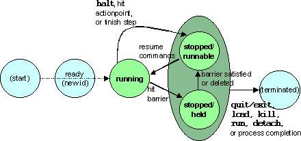

HPD Version 1
HPD Version 1 Standard:
Command Interface for Parallel Debuggers
Revision 2.1
Last updated Sept. 22, 1998
List of changes taking effect in Revision 2.1 (file is updated incrementally).
Note: This version is still under the review-and-comment period. In particular, we expect
to make some changes in the names of commands and options, in response to user
feedback. We do not expect the functionality or semantics to change very significantly at
this point.
Contents of HPD Version 1 Standard
Introduction
Part 1: High-Level Overview
1.1 The Debugger Interface
1.1.1 What Is a Parallel Debugger?
1.1.2 How a Debugger Operates
1.1.3 The Debugger Interface
1.1.4 Command Model
1.1.5 Command and Prompt Formats
1.1.6 Debugger Output
1.1.7 Debugger Initialization and Modes of Operation
1.1.8 References Cited in This Chapter
1.2 Effects of Parallelism on Debugger Behavior
1.2.1 Naming Individual Processes and Threads
1.2.2 Process/Thread Sets
1.2.3 Named Sets
1.2.4 Handling Command Output from Multiple Threads
1.2.5 References Cited in This Chapter
1.3 Controlling Program Execution
1.3.1 Starting and Stopping Model
1.3.2 Advancing Program Execution
1.3.3 Actionpoints
1.3.4 References Cited in This Chapter
1.4 Machine State, Program State, and Debugger State
1.4.1 State Model: Machine State and Program State
1.4.2 Debugger State
1.5 Symbols, Names, and Expressions
1.5.1 Symbol Names and Scope
1.5.2 Explicit Qualification of Symbol Names
1
HPD Version 1
1.5.3 Expressions
1.5.4 Language Support
1.6 Terminology and Notational Conventions
1.6.1 Definitions of Key Terms
1.6.2 Notational Conventions
Part 2: Command Descriptions
2.1 General Debugger Interface
# - Ignore remainder of this line ("comment command")
alias - Create or view user-defined command(s)
unalias - Remove previously defined command
history - View the session command history
! - Execute a previous command from the command history
set - Change or view value(s) of debugger state variable(s)
unset - Restore default setting(s) for debugger state variable(s)
log - Start or stop the logging of debugger input/output
input - Read and execute commands stored in a file
proginput - Send command-line input to the target program, rather than the
debugger
info - Display debugger environment information
help - Display help information
2.2 Process/Thread Sets
focus - Change the current process/thread set
defset - Assign a set name to a group of processes/threads
undefset - Undefine a previously defined process/thread set
viewset - List the members of a process/thread set
whichsets - List all sets to which a process/thread belongs
2.3 Debugger Initialization/Termination
load - Load debugging information about target program and prepare for
execution
run - Start or re-start execution of target process(es)
attach - Bring currently executing process(es) under control of the debugger
detach - Detach debugger from target process(es), leaving it executing
kill - Terminate execution of target process(es)
core - Load core-file image of process(es) for examination
status - Show current status of processes and threads
quit, exit - Terminate the debugging session
2.4 Program Information
list - Display source code lines
where - Display the current execution location and call stack
up - Move up one or more levels in the call stack
down - Move down one or more levels in the call stack
what - Determine what a target program name refers to
2.5 Data Display and Manipulation
print - Evaluate and display the value of a program variable or expression
assign - Change the value of a scalar program variable
2
HPD Version 1
2.6 Execution Control
step - Execute statement(s) by a specific process/thread
go - Resume execution of process(es)
halt - Suspend execution of process(es)
cont - Resume execution of process(es), blocking further commands
wait - Block command input until process(es) stop
2.7 Actionpoints
break - Define a breakpoint
barrier - Define a barrier point
watch - Define an unconditional watchpoint
actions - Display a list of actionpoints
delete - Delete actionpoint(s)
disable - Temporarily disable actionpoint(s)
enable - Re-enable actionpoint(s) that has been disabled
export - Store actionpoint settings for future re-use
Part 3: HPD User Guide
Part 4: Reference Summaries
4.1 Command Syntax Summary
4.1.1 Basic (Shared) Syntax
4.1.2 Required Commands
4.1.3 Language Extensions
4.2 Comprehensive Index
Introduction
The High Performance Debugging Forum (HPDF) is a collaborative effort involving both
researchers and commercial debugger developers in the area of parallel debugging, as well as
representatives of HPC (high-performance computing) user organizations. Established in March
of 1997, its goal is to define standards relevant to debugging tools for HPC systems. HPDF is
sponsored by the Parallel Tools Consortium.
HPDF is approaching this standards effort by subdividing the relevant issues into different
versions, or layers, such that each successive version builds upon previous ones. This document
deals with the first version and defines a standard command-based (i.e., non-graphical) interface
for parallel debuggers. Future versions will deal with such issues as graphical interfaces and
more complex I/O. While much of the standard is equally applicable to serial debuggers,
attention has focused on those issues that arise when the program being debugged includes
multiple threads and/or processes.
The document is divided into four parts. Part 1 provides a *high-level introduction* to the
standard by laying out the conceptual model on which it is based. Definitions of terminology and
a description of notational conventions are also included. Part 2 provides *detailed information*
3
HPD Version 1
on syntax, semantics, implementation, and interpretation of each command in the standard. Part
3 is a *user-level view* of the standard, presented in a form suitable for an on-line user guide.
Part 4 provides a *syntax summary* and *comprehensive index*.
[Note: For the most part, this document was written for use by debugger implementors and
sophisticated debugger users who have an interest in understanding or influencing the details of
a debugger standard. Non-developer users are directed to the *user guide* (Part 3), for a
straightforward definition of the syntax and semantics of the standard commands.]
Goals of the HPD Standard
HPDF is, to our knowledge, the first group that has attempted to establish a debugger standard
of any kind. Although some serial debuggers are supported on multiple platforms (e.g., gdb [1]
and dbx [2]), there are no published standards or rigorous definitions of semantics for
debuggers. Therefore, individual implementations are subject to considerable variation in both
the kinds of commands that are available and what specific actions are performed in conjunction
with any particular command.
Within the parallel programming community, a lack of standards has resulted in the same kinds
of debugger variations. In addition, few debuggers are supported across more than one platform
and debuggers are generally criticized for poor usability. The HPDF standard is expected to
make a major contribution in solving these problems. Therefore, debuggers which meet the
HPDF standard should:
satisfy the basic debugging requirements of HPC application developers;
be usable - in the sense of easy to learn and easy to use - by HPC application developers;
and
be consistent across platforms, so that users of one HPD-conforming debugger can switch
to another HPD-conforming debugger with little or no effort.
Specifically, the goals of the HPD Version 1 standard are as follows:
1. Capture the best-practice knowledge and experience of parallel debugger implementors
across the industry.
2. Establish a well-defined, testable, and minimal core set of features that can be implemented
on all HPC systems.
3. Ensure that parallel debugger implementors provide this set of features in a consistent way.
4. Limit the core set in size so that initial commercial implementations can be available within
a year of the standard's release.
To meet these goals, the HPD Version 1 standard defines the syntax and semantics of
commands for the most needed debugging functions. Individual implementations are free to add
other commands - indeed, this may be necessary in order to support debugging of
machine-specific features. Conforming debuggers, however, support all features defined as
4
HPD Version 1
requirements (see below).
Applicability of the Standard
Because HPDF addresses the needs of HPC debugging, this standard is targeted at debuggers
for programs that are:
"high-performance" in nature (i.e., performance is an important consideration) and typically
parallel
written in one or more high-level languages
intended to run on possibly many different computer systems
Explicit parallelism was assumed as the basic programming model. The HPD Version 1 standard
is applicable to both shared-memory programming (multiple threads of execution in an address
space) and distributed-memory programming (multiple processes co-operating via
message-passing libraries, such as PVM or MPI). Standard-conforming debuggers may also be
useful for implicitly parallel programs (e.g., auto-parallelized DO loops or array operations), but
the issues of how to map from runtime or intermediate-level information to original user source
code are not being addressed in HPD Version 1.
The standard has been defined to distinguish the functionality needed for threads-only,
processes-only, and multilevel (multi-process and multi-thread) models of parallelism. Where
the constraints of these models differ, the standard specifies how a debugger supporting each
model will behave. Since it is assumed that each debugger implementation will elect to support
one of the three models, we refer generally to "threads-only debuggers," "processes-only
debuggers," and "multilevel debuggers."
The overall objective is to make it possible for debuggers of all three types to provide support
that is as consistent as possible, given the constraints imposed by the underlying model. Thus, if
a user's application is multi-process, the behavior of the debugger should be consistent,
regardless of whether it is a processes-only or a multilevel debugger. (In this example, a
threads-only debugger, which cannot support multiple processes, would likely require that the
user employ multiple instantiations of the debugger, one per process.) A multilevel debugger
may elect to support alternative modes of operation for user applications that involve a single
process or processes with single threads (modal support is described in this document), making
it possible to simplify somewhat the ways in which the user interacts with the debugger.
The major languages considered by the authors of the standard were Fortran (F77 and F90), C,
and C++. In principle, the standard could apply to other languages, but debugger syntax was not
explicitly checked for conflicts with expression syntax in other languages. Moreover, the
standard does not address interpreted languages, which typically are packaged with a built-in
debugger.
Though we expect standard-conforming debuggers to offer some machine-level debugging
5
HPD Version 1
features, such support will be in the nature of extensions, since HPD Version 1 does not
explicitly address assembly-level debugging. Rather, it is assumed that the target program is
written in a high-level language and that the debugger users wish to interact with their programs
at the high-level language level.
The standard attempts to be operating-system neutral, in the sense that it should be possible to
build a standard-conforming debugger on a variety of different operating systems. Similarly, this
standard attempts to be computer-architecture neutral. Cases where features are known to be
system-dependent have been explicitly called out, with suggestions of how the variation should
be accommodated.
Conformance to the Standard
Requirements: A debugger conforms to the HPD Version 1 standard if it implements all
required commands according to this document, preserving the syntax and semantics defined
here. In some cases, the requirements vary according to whether the debugger supports target
programs with multiple threads, multiple processes, or both. While such variations are permitted,
each implementation must conform to exactly one of the models presented in this document
(threads-only debugger, processes-only debugger, or multilevel debugger) and must inform the
user which model is in effect. A debugger that mixes behavior from two or more models is not
standard conforming.
Implementation-specific Variations: It is expected that implementations will provide
additional functionality and commands, but conformance will hold only if neither the syntax nor
semantics of such additions conflict with the HPD definitions. Where specific elements - such as
the content of command output - may be implementation-specific in form or detail, this is
specified clearly in the document using words such as "implementors may elect to...." In some
cases, the variation imposes additional requirements for user documentation; these, too, are
identified clearly.
Advisory Elements: In addition to defining the HPD Version 1 standard, this document
presents a number of recommendations about how features might be implemented effectively, as
well as extensions. The extensions provide preliminary information about anticipated future
versions of the standards or features that are considered important by users but cannot be
required at this point (e.g., because of dependencies on hardware or operating system support).
These advisories are based on our discussions about particular debugger functions and reflect
the direction a future standard is likely to take. They are meant to give guidance to developers
who are currently working on these functions. While there is no guarantee that future additions
to the standard will be defined in the same way, efforts will be made to maintain their general
organization and semantics.
Formulation of the Standard
6
HPD Version 1
The HPD Version 1 standard was formulated by the HPDF group through a series of meetings
and electronic communications throughout 1997. User input into the discussions came from
users attending the meetings as well as feedback from members of the Parallel Tools
Consortium.
HPDF is co-chaired by:
Cherri Pancake, Oregon State University
Joan Francioni, University of Southwestern Louisiana
Jeff Brown, Los Alamos National Laboratory
Active members of HPDF working groups include the following:
Gail Alverson, Tera Computer Company
Shirley Browne, University of Tennessee
Suresh Damodaran-Kamal, Hewlett-Packard / Convex Division
John Del Signore, Dolphin Interconnect Solutions, Inc.
Erica Dorenkamp, Sun Microsystems
Howard Gordon, National Security Agency
Robert Hood, MRJ - NASA Ames Research Center
Janis Johnson, Sequent Computer Systems
Chuck Koelbel, CRPC, Rice University
David La France-Linden, Digital Equipment Corporation
John May, Lawrence Livermore National Laboratory
Juliana Rew, NCAR/Scientific Computing Division
John Robb, IBM
Stan Shebs, Cygnus Solutions
Lauren Smith, National Security Agency
Michael Snyder, Cygnus Solutions
Richard Title, Hewlett-Packard
Roland Wismueller, LRR-TUM, University of Technology, Munich, Germany
Others who contributed to relevant discussions include:
Richard Barrett, Los Alamos National Laboratory
Bevin Brett, Digital Equipment Corporation
Jim Cownie, Dolphin Interconnect Solutions, Inc.
Mike Frese, Numerex
Pete Johnson, SGI/Cray Research
Tim Kane, IBM
Mike McKay, Los Alamos National Laboratory
Geoffrey Tennille, NASA Langley Research Center
Chris Warber, Pacific-Sierra Research
Joel Williamson, Hewlett Packard
Michael Wolfe, The Portland Group
7
HPD Version 1
Brian Wylie, Swiss Center for Scientific Computing
John Zollweg, Cornell Theory Center
Mary Zosel, Lawrence Livermore National Laboratory
Richard Zwakenberg, Lawrence Livermore National Laboratory
Special thanks goes to the following people for help in logistics, organization of Web pages, and
Web survey forms:
Ken Ferschweiler, Oregon State University
Mark Newsome, Oregon State University
Joan Winter, Oregon State University
David Haney, Oregon State University
Denise Hirata, Oregon State University
In addition, a large number of users participated in the user surveys and requests for user
feedback issued by the working groups and HPDF as a whole. We gratefully acknowledge their
participation in the effort.
Name and Ownership Issues
According to the objectives of the High Performance Debugging Forum and its sponsoring
organization, the Parallel Tools Consortium (Ptools), the HPD Version 1 standard is made
available for royalty-free adoption and use by any public or private organization. Copyright is
retained by the High Performance Debugging Forum and Oregon State University. (Queries
concerning its use should be directed to pancake@ptools.org.)
The name "High Performance Debugger" and its abbreviation "HPD" are used as a convenience.
Proprietary implementations are not required to use those names, but an alias should be
provided to associate the name hpd with the proprietary debugger, for the benefit of users
familiar with the generic HPDF name.
Implementors are asked to refer explicitly to the HPDF and this document in their support
documentation. They are also requested to notify HPDF of their plans to release debuggers
conforming to, or derived from, the standard by sending email to pancake@ptools.org. (This
will add them to the distribution list for any updates.)
References Cited in This Chapter
[1] Richard Stallman and Cygnus Support, Debugging with GDB, Cygnus Solutions, Inc., 1994.
[2] SunSoft, Inc., Solaris Application Developer's Guide, 1997, 013-205097-8.
8
HPD Version 1
Part 1:
Conceptual Model for HPD Version 1
Standard
Working Version 2.1 - last revised Sept. 10, 1998
Comments and requests for clarification are welcome. They should be submitted to
hpd-comments@ptools.org. Part 1 of this document provides an overview of the HPD Version 1
standard by describing the conceptual model on which it is based. Terms and concepts used
throughout the standard document are introduced here; concise definitions will be found in the
terminology chapter.
The first chapter describes the role of a debugger and its relationship to the user's program. This
is followed by a discussion of how parallelism affects the behavior of a debugger. A third
chapter outlines our model for controlling program execution. The state model employed for
describing the effects of HPD commands occupies a separate chapter, followed by a brief
treatment of how symbols, names, and expressions are handled.
The part concludes with a chapter presenting a comprehensive list of terms employed in the
document and a description of notational conventions.
High-Level Overview
1.1 Debugger Interface
Working Version 2.1 - last revised Sept. 11, 1998
Comments and requests for clarification are welcome. They should be submitted to
hpd-comments@ptools.org.
1.1.1 What Is a Parallel Debugger?
A debugger is a tool that gives a user visibility into, and control over, an executing program -
the target program. A parallel debugger performs that function for a parallel program. As
described in the introduction, the HPD Version 1 standard is intended to support debugging of
programs that implement parallelism through explicit statements or compiler directives in a
high-level language.
An executing program has three basic components:
1. the source file(s) for the program: the user's program files, written in one or more
9
HPD Version 1
high-level languages
2. the executable(s): a compiled and linked version of the source files, containing a "main"
entry point
3. any shared library(ies): a compiled and linked set of sources that are dynamically loaded
by other executables (and have no "main" entry point)
The target program of the debugger is related to all three of these, but we use the term to refer
specifically to the executing user program (rather than source or object files), or a user program
that has been loaded into memory.
In the world of parallel computing, an executing user program consists of one or more
processes, each associated with a particular executable (and perhaps one or more shared
libraries) and each occupying a memory address space. Every process, in turn, has one or more
threads, each with its own register set and its own stack.
The target program is the complete set of threads and/or communicating processes that make up
a given execution of the user's application. The exact number depends on many factors,
including how the user wrote the program, the transformations performed by the compiler, the
way the program was invoked, and the sequence of events that occur during execution. Thus,
the number of processes/threads can change over the course of program execution.
Some operating systems, compilers, or run-time systems impose restrictions on the relationship
between processes/threads and executables. SPMD (Single Program Multiple Data) programs
are parallel programs involving just one executable, executed by multiple threads and/or
processes. MPMD (Multiple Program Multiple Data) programs involve multiple executables,
each executed by one or more threads and/or processes. For the most part, no distinction is
made in this document between the two models. Some HPD-conforming debuggers, however,
may require that the target program be SPMD.
Debuggers also may constrain the number of threads or processes in the target program. A
threads-only debugger is one that is only capable of debugging a single process, although it may
contain many threads. Similarly, a processes-only debugger cannot recognize threads within a
process; its operations can be applied to a program with many processes, but each may contain
only a single thread. We refer to debuggers that are capable of managing multiple processes,
each containing multiple threads, as a multilevel debugger. Throughout this document, any
operations that behave differently under these three categories are called out explicitly.
Note that any parallel debugger could also be used to debug a serial program (one consisting of
a single process with a single thread). The focus of attention in this document, however, is
support for debugging parallel programs.
Special note: For the remainder of this document, we employ the word "threads" to refer to
"processes and/or threads." In cases where a distinction needs to be drawn between the
circumstances associated with processes or with threads, this will be called out explicitly.
10
HPD Version 1
1.1.2 How a Debugger Operates
The debugger affects the target program but is not part of its target program's execution. That
is, we think of it as running in separate process(es), and we define debugger semantics separately
from the semantics of the target program language. (For an alternate way of defining debugger
semantics, see [1].) The debugger communicates with the target program according to an
execution-time interface that is usually operating system-specific (e.g., ptrace or /proc).
A debugger takes as input the executable(s) that constitute the target program. Because
debugging is to be supported at the level of the source code language, each executable must be
associated with debugging information. On most target systems, this requires that the
executable be prepared with special compiler options, such as "-g", in effect. Debugging
information serves two main functions:
1. It provides a means for the debugger to give high-level output to the user, expressed in
terms of the variables and procedures used in the source code.
2. It provides access for the debugger to the smaller components of the program (such as
source files), eliminating the need for some assistance from the user.
This standard does not specify what debugger features are accessible when files have not been
compiled to produce full debugging information.
Recommended Practices: It is hoped that most implementors will be capable of operating
on a target program whose executables do not have full debugging information. It is likely
that debugger operations will be restricted or constrained in this case.
There are three general ways that the debugger may be used. First, the target program may be
executed from within the debugger environment; that is, after invoking the debugger. With some
operating systems, the user must "acquire" nodes in a separate step; if so, that step must be
performed before the debugger is invoked.
Second, the debugger may be associated with (or in operating system terms, attached to) a
program that is already executing in the normal run-time environment. In either case, if the
target program consists of many processes, the debugger may need to interact with the run-time
system or the library that is responsible for managing those processes (e.g., PVM [2] or MPI
[3]).
Third, the debugger may be associated with a parallel program that terminated abnormally, as
long as an "image" of the running program was captured and stored as a core file. (When a
system generates multiple core-files from a single program, the debugger will provide a
mechanism to piece them together so that the entire target program can be accessed.) Since
there are no running process(es) associated with the target program, however, only certain
debugging operations are available for core-file debugging. In particular, while it is possible to
11
HPD Version 1
examine the location of the program and the values of its variables, it is not possible to modify
anything about the program image preserved in the core-file. The command description chapters
clearly indicate which operations are permitted or not permitted during core-file debugging.
The HPD Version 1 standard defines three different commands for initiating the three types of
debugging.
To execute the target program from within the debugger, two commands are needed:
load command, followed by
run command.
Splitting this into two commands makes it possible for the user to set initial actionpoints in
the target program before execution begins. This also makes it possible to execute a
program more than once, keeping debugger state settings (such as the location of
actionpoints) in effect. Issuing a subsequent run command tells the debugger to re-start
program execution, perhaps sending it new command-line arguments. Issuing a subsequent
load command causes the debugger to load a fresh copy of the program from the file
system into memory (e.g., after editing and re-compiling the program). This has the side
effect of creating a new process(es); a run command is then needed to start it executing.
Recommended Practices: It is hoped that most implementors will extend the syntax
of the run command so that its argument structure mimics the command-line interface
for starting programs. For example, if the user can specify which processors should be
used in executing a program, this option should also be supported from within the
debugger.
The kill command forcibly terminates one or more processes of a program that was
started using load and run.
To associate the debugger with a currently executing target program, the attach command
is used instead.
This action can be reversed with the detach command, which releases a process from
debugger control, leaving it executing in the normal run-time environment.
The core command is employed when the debugger is to be associated with a core-file
image.
1.1.3 The Debugger Interface
A debugger also has a user interface, whereby it receives user input on what actions should be
taken to control the target program's execution or to reveal information about it. For purposes
of HPD Version 1, this is a command-language (non-graphical) interface. Note that the target
program may also have a command-line interface; if so, it is often directed to the "terminal
device" from which the program was invoked. When a program is executing under the control of
12
HPD Version 1
the debugger, the relationship between these interfaces can be problematical (see the figure).
Both the debugger and the user's application may be reading input or writing output to the same
terminal - perhaps at the same time.
Relationship between debugger interface and program interface
The HPD Version 1 standard does not require that the debugger's I/O be kept separate from that
of the target program's I/O.
Recommended Practices: If possible on the target system, implementors are encouraged
to provide a mechanism whereby debugger I/O can be kept visually distinct from target
program I/O. For example, where the debugger is running in a windowing environment, the
implementor is encouraged to redirect target program I/O to a separate window from that
of the debugger I/O. This is not mandated by the HPD Version 1 standard, however,
because there are target systems or occasions (such as interactions through a single telnet
connection) when this is not feasible.
It does require, however, a uniform mechanism by which the user can indicate whether typed
input is intended for the program or for the debugger. This is accomplished by means of toggling
13
HPD Version 1
the input mode between "program" and "debugger." Initially, debugger input mode is in effect;
that is, all input is directed through the debugger interface (see diagram). A proginput
command must be issued to change to program input mode, so that input is passed directly to
the program interface, as if the program were running by itself (without the debugger). The
absence of a debugger prompt is a visual reminder to the user that all typing effectively bypasses
the debugger.
To change from program input mode back to debugger input mode, it is necessary to "interrupt"
the proginput command by using the user interrupt key. This automatically restores debugger
input mode. The debugger responds by issuing a command line prompt. The following sequence
demonstrates how this would work if the target program needed two user-supplied values (user
typing appears in boldface).
[all]> run
[all]>
Debugger prompts for next command
Enter degrees of freedom:
Program prompts for first value
proginput
User switches to program input mode
4
User interacts with program,
File for results: temp.dat ...
^C
then exits back to debugger input mode
[all]
Debugger prompts for next command
1.1.4 Command Model
The user interacts with the debugger through commands. Execution of any command by the
debugger has one or more of the following effects:
Information about the target program is displayed to the user.
A change takes place in the current state of the target program (described in detail in
Chapter 1.3).
A change takes place in the information that the debugger maintains about the target
program.
The debugger indicates completion of a command, and readiness to accept another one, by
issuing a prompt.
This command model is sequential in the sense that only one command is being processed at any
given time. For instance, if the user issues a command to print out an array, the debugger does
not prompt again until all elements of the array have been displayed. The HPD Version 1
standard does not define any kind of "background command execution" capability analogous to
the use of an ampersand within a UNIX shell. (It is, of course, fine if an implementation includes
this feature.)
14
HPD Version 1
Because the command model is sequential, it is important that the description of each command
in the standard define explicitly when that command is considered "complete." For some
commands, this is obvious - in the previous example, the command is done when it finishes
printing the requested values. For others, such as single-stepping execution through a procedure,
the moment of completion is not as intuitively obvious. Still other commands, like the setting of
a breakpoint, may cause deferred reactions at some later time.
Note that this sequential nature applies to debugger commands, not to their relationship with
program execution. The HPD command model does not require that the target program be
"stopped" when the debugger prompts for and performs commands. It dictates only that one
command be complete before another can be issued. Some processes may continue to execute
while the debugger is performing commands.
Some commands cannot be performed by the debugger if the target program is still active. For
example, it may not be possible to print the values of an array if one or more processes is still
executing (and hence, might change those values). Each command description explicitly states
when the command can be issued and what type of error ensues if the command is attempted at
other times.
The user interrupt key is a keystroke that is used to interrupt commands. The most common
user interrupt key is ^C (Control-C); however, the actual keystroke varies from one run-time
environment to another. Therefore, the value of the user interrupt key will be inherited by the
debugger from the specific environment where the debugger was invoked. (This value may also
be affected by the remote communications software being used.) The effects of interrupting a
command depend on the operation being performed, and are discussed in the individual
command descriptions of Part 2.
1.1.5 Command and Prompt Formats
The appearance of the debugger prompt is a visual cue that the debugger is ready to accept
another user command. The form of the prompt may be changed by the user (via the debugger
state variable PROMPT, which is modified by the set command). By default, the prompt lists the
threads to which the next command will apply, using the set notation described under Effects of
Parallelism on Debugger Behavior. This is followed by the greater-than sign and a blank space.
Because the list can be lengthy for a program involving many threads, it will be truncated when
it exceeds the length indicated by the debugger environment variable MAX_PROMPT; an ellipsis is
appended to indicate that only part of the list is shown. Examples of prompts are:
[all]>
all threads involved in the target program
[1.0,1.1]>
just the first two threads in process 1
[1.*,2.*]> all threads in processes 1 and 2
Each command in the HPD Version 1 standard is of the following general form:
15
HPD Version 1
[p/t-set/prefix] verb object [option ...] [-option [value] ...]
An optional prefix specifies the process/thread set to which the command will apply. This
concept is described in the next chapter.
All elements of the command language are case-sensitive. The command verb indicates what
operation should be performed by the debugger. HPD verbs are reserved words. They need not
be typed out completely; any unambiguous prefix will be accepted in place of the full verb. For
example, al, ali, alia, and alias all refer to the same command. A simple a does not,
however, as it is ambiguous (could refer to alias or assign). When a prefix is ambiguous, the
debugger issues an error message that includes the names of all commands to which the prefix
might refer.
Most commands defined in this document accept a single object, followed by zero or more
options. Some commands, such as assign and alias require two objects, and some do not take
any arguments at all. The syntax summary presents a listing of all command formats.
Each command option is preceded by a hyphen, and consists of an option keyword and perhaps
a value. As the name implies, options are not required.
In general, a command is terminated by a newline character. This format is referred to as a
simple command, as it includes only one verb and directs the debugger to perform just one
action. When it is necessary to continue a command onto the next line, the backslash character
(\) is used at the end of the line as a continuation character.
The HPD Version 1 standard includes a mechanism for creating user-defined commands. In its
simplest form, a user-selected name can be defined to be a synonym for a debugger verb, making
it possible to customize the verbs so that they are more easily remembered. The names of
user-defined commands are case-sensitive. They must be spelled out in full; that is, unambiguous
prefixes will not be recognized by the debugger.
User-defined commands can also be used to create shortcuts for commonly used commands. In
this case, the user might wish to define a compound command, or one that takes several
actions. In this case, simple commands are strung together, separated by semicolons. For HPD
Version 1, this is the only context within which the semicolon can be used as a command
delimiter.
More general macro capabilities (e.g., parameter substitution) are not available in HPD Version
1.
1.1.6 Debugger Output
The debugger issues a variety of messages in response to user input. Some of these confirm that
an operation completed successfully or indicate that some problem occurred. Others provide
16
HPD Version 1
in-depth detail about what the debugger - or the target program - is doing.
Generally speaking, the amount and type of output differs from one command to the next, and is
discussed in the individual command descriptions of Part 2. The HPD Version 1 standard does
provide three coarse levels for controlling the amount of diagnostic output:
ERR: Debugger generates a small amount of output concerning the target program, and
restricts debugger messages to error conditions.
WARN: (default) Normal output, error messages, plus warning messages when user actions
appear to be unintentional or problematic.
ALL: Debugger generates full output concerning the target program, and adds diagnostic
information on its own operations.
The output control setting is stored in the debugger state variable VERBOSE. When its value is
ALL, verbose output is said to be in effect.
Another debugger state variable, ERROR_CHECKS, permits the user to control how often the
debugger tests for the possibility that the user mis-applied a debugger command. Examples of a
potentially unintended command might be assigning a new value to x on multiple threads, where
the name refers to different variables for some threads, or asking the debugger to delete all
user-defined p/t sets. Again, there are three settings for the state variable:
MIN: User is never asked to confirm a possible unintended operation, nor are warnings
issued after the operation has occurred. (Fastest but most "dangerous" mode; can be useful
when executing scripts of debugger commands.)
NORMAL: (default) User is prompted to confirm before the debugger takes an action that
might have fatal consequences. For operations that were possibly unintended, a warning
message is issued to let the user know what was done.
MAX: User is prompted to confirm whenever an operation appears to have been unintended.
(Slowest but "safest" mode.)
A third debugger state variable, MAX_LIST, can be used to control the number of source code
lines displayed in response to list commands.
It is possible to suppress all command output to the screen by directing the debugger to route its
output to a file (using a log -quiet command). The same command can be used to capture the
stream of commands typed by the user, the stream of responses from the debugger, or both, to a
file for storage. Output from the target program may not appear in the log, however, depending
on how I/O is being performed by the underlying operating system.
Debuggers differ from other interactive tools in that some output may appear on the screen not
at the time a command is issued, but at some later time. This is particularly the case for
commands related to actionpoints, such as the command for defining breakpoints. Typically, the
debugger generates no immediate output when the breakpoint is set, but produces deferred
output in the form of an informatory message that appears each time a process or thread arrives
at the breakpoint. Immediate and deferred output are discussed in the "Command Output"
17
HPD Version 1
portion of each command description.
A related question is when deferred output should be generated - and when the debugger should
detect the program event responsible for the deferred output. If the debugger detects and reports
events as soon as it is aware of them, the user might not be able to type a command without
interruption (or many interruptions if there are many processes arriving at the breakpoint). On
the other hand, the fact that the event occurred may make the user want to change the command
so that it does something else; if the debugger defers event detection until after the user has
finished typing a command, this would not be possible. Both models are useful for specific sets
of circumstances.
The debugger's event handling mode controls when events are detected and reported. By
default, the debugger allows the occurrence of an event to interrupt any user input. It handles
the event immediately, reports it to the user (if appropriate), then re-types any characters that
the user had already entered prior to the interruption. Any keystrokes entered while this was
going on would also be echoed at that point.
To prevent the debugger from detecting events while a command is being typed, the debugger
state variable EVENT_INTERRUPT may be set to OFF.
1.1.7 Debugger Initialization and Modes of Operation
A debugger initialization file provides a mechanism for beginning each debugging session by
establishing a customized debugging environment. This file must be named .hpdinit, and must
be located in the user's home directory or the directory where the debugger was invoked; if
present in both locations, the copy in the current directory takes precedence.
Typically, the file contains user-defined command specifications and any other commands that
should be executed automatically whenever a new debugging session is started. Each HPD
implementation provides a sample .hpdinit showing the names and default values for all
debugger state variables. Comments can be inserted using the comment command.
The debugger also maintains a command history list, which stores copies of the most recent
commands issued by the user. This can be accessed to echo previous commands, or to
re-execute some command in the history list. The user can control the length of the command
list through the debugger state variable MAX_HISTORY.
As described previously, some debuggers restrict the target program to just one process
(threads-only debuggers), while others (multilevel debuggers) permit any combination. One
consequence is that for processes-only or threads-only debugging, dual process/thread identifiers
are not required. Other syntactic shortcuts are possible, and for some commands the semantics
of operations differ as well; details are provided in the command description chapters.
This situation gives rise to the concept of debugging mode, which is tracked in the debugger
18
HPD Version 1
state variable MODE. For processes-only or threads-only debuggers, the value (PROCESSES or
THREADS, respectively) remains constant throughout the debugging session and serves an
informational role only.
For multilevel debuggers, the variable is initially set to MULTILEVEL but the user may change it
using the set command, thereby indicating to the debugger that the target program will employ
only a single process with multiple threads (if the value is changed to THREADS), or multiple
processes with a single thread each (if PROCESSES). Once the mode has been changed, any
appropriate command shortcuts may be used. It is the responsibility of the user, however, to
ensure that the mode correctly reflects the nature of the target program. If the THREADS mode is
in effect, for example, any new processes spawned by the target program will be ignored by the
debugger.
Note that if the user attempts to debug a program with multiple threads using a processes-only
debugger, it will not be capable of recognizing the existence of the multiple threads, so no error
can be reported.
1.1.8 References Cited in This Chapter
[1] Richard H. Crawford, Ronald A. Olsson, W. Wilson Ho, Christopher E. Wee, "Semantic
Issues in the Design of Languages for Debugging," Computer Languages, Vol. 21, Num. 1
(April 1995), pp.17-37
[2] Al Geist, Adam Beguelin, Jack Dongarra, Weicheng Jiang, Robert Manchek, and Vaidy
Sunderam, PVM3 User's Guide and Reference Manual, Oak Ridge National Laboratory, Oak
Ridge, TN, September 1994, ORNL/TM-12187.
[3] Message Passing Interface Forum, "MPI: A Message Passing Interface Standard,"
International Journal of Supercomputing Applications, Vol. 8, Num. 3/4, 1994.
High-Level Overview
1.2 Effects of Parallelism on Debugger
Behavior
Working Version 2.1 - last revised Sept. 11, 1998
Comments and requests for clarification are welcome. They should be submitted to
hpd-comments@ptools.org.
1.2.1 Naming Individual Processes and Threads Sets
19
HPD Version 1
As discussed in the last chapter, a parallel program consists of some number of processes, each
involving some number of threads. Processes fall into two categories, depending on when they
are created:
initial process: a pre-existing process from the normal run-time environment (i.e., created
outside the debugger), or one that was created as the debugger loaded the target program
spawned process: created by a process executing under the control of the debugger
The debugger assigns a non-negative integer to each individual process or thread under its
control. This process/thread identifier may be created by the debugger, or the debugger may
use the system identifier already given to the process/thread if it is an integer that falls within the
proper range. (If the debugger assigns its own numbers, it must show the mapping of those
numbers to the operating system or run-time environment identifiers through the status
command.)
Process numbers are unique over the lifetime of a debugging session, and thread numbers are
unique over the lifetime of a process. Although some implementations may attempt to assign
numbers sequentially to threads and processes, this behavior is not required, and users should
not rely on it.
When the program is multilevel - that is, both multithreaded and multiprocess - an identifier
consists of two components. For example, if the target program has two processes, each with
two threads, this gives rise to a universe of four threads:
thread 0 of process 0
thread 1 of process 0
thread 0 of process 1
thread 1 of process 1
The HPD Version 1 standard uses process/thread notation to identify each thread uniquely.
Square brackets enclose the identifiers for the process and the thread, which are separated by a
period:
[process-identifier.thread-identifier]
For the example described above, the four threads would be denoted as follows:
[0.0] - thread 0 of process 0
[0.1] - thread 1 of process 0
[1.0] - thread 0 of process 1
[1.1] - thread 1 of process 1
To facilitate the specification of process/thread identifiers, two forms of wildcard characters are
provided:
20
HPD Version 1
* - indicating all identifiers in a particular position
: - indicating all identifiers falling within a particular range of numbers
A "range" is interpreted as including all identifiers greater than or equal to the lower bound, and
less than or equal to the upper bound. The range may or may not be fully populated. Examples
include:
0.* - all threads currently existing in process 0
0.*:4.* - all threads currently existing in processes 0 through 4
1.2:1.5 - all threads from process 1 in the range 2 through 5
(i.e., any of {1.2, 1.3, 1.4, 1.5} that exist)
1.2:2.3 - all threads falling in the range 1.3 through 2.5
(i.e., all threads of process 1 except 1.0 and 1.1,
plus any of {2.0.,2.1, 2.3} that exist)
As a typing convenience, HPD implementations will also accept an alternate form of notation,
where a thread (or process) position is omitted in the presence of a wildcard falling within a
process (thread) range, as follows:
0:4.* - all threads in processes 0 through 4 (alternate notation)
1.3:5 - threads 3 through 5 in process 1 (alternate notation)
The fully specified process+thread notation is not strictly required unless the debugger is a
multilevel debugger and the target program is both multithreaded and multiprocess. A
processes-only debugger may denote process identifiers using either the dual notation with a
wildcard or a single number. Thus, process 2 would be referred to as either [2] or [2.*].
Similarly, a threads-only debugger could denote thread 2 as [2] or [*.2].
To facilitate the porting of debugger scripts across platforms, all implementations are required to
accept the dual notation, at least as an optional format for user input. Processes-only debuggers
or threads-only debuggers will simply ignore the extraneous component (rather than flagging it
as an error or warning condition). For example, [1.4] will be interpreted as "process 1" by
processes-only debuggers, and "thread 4" by threads-only debuggers. All examples in this
document employ the dual notation.
Similarly, multilevel debuggers conforming to the HPD Version 1 standard must support the
alternate notation whenever the target program itself is threads-only or processes-only. Since it
is not possible for the debugger to know this ahead of time, it is up to the user to indicate it by
setting the debugger state variable controlling debugging mode, MODE. Its default value is
THREADS, PROCESSES, or MULTILEVEL (depending on the type of debugger); the dual notation is
strictly required only for MULTILEVEL mode. When using a multilevel debugger, the user may set
MODE to THREADS (or PROCESSES) if his/her code is threads- (processes-) only, thereby
eliminating the need to use pairs of numbers in specifying threads (processes).
It should be noted that some command options are meaningless when the debugger is
threads-only (or operating in threads-only mode). A warning message is issued if the option is
specified anyway. Instances of this are called out explicitly in the command descriptions.
21
HPD Version 1
Special note: For the remainder of this document, we employ the word "threads" to refer to
"processes and/or threads." In cases where a distinction needs to be drawn between the
circumstances associated with processes or with threads, this will be called out explicitly.
1.2.2 Process/Thread Sets
The concept of sets of processes/threads provides the foundation for extending the semantics of
serial debugger operations to a form suitable for parallel debuggers. This allows a debugger
command to be applied to a whole collection of processes/threads, rather than to just one
process or thread at a time. Process sets are the standard practice of existing parallel debuggers
that accommodate multiple processes (cf. Cdbx [2], codeview [11], CXdb [1], HP/DDE [5], ipd
[8], Ladebug [3], MPPE [9], ndb [10], P2D2 [7], pdbx [6], Prism[12], TotalView [4]).
We define a p/t (process/thread) set to be a set of threads drawn from all threads in all processes
of the target program. A p/t set is denoted using p/t set notation that simply extends
process/thread notation by permitting a list of threads within the brackets. For example:
[0.0,0.1,0.2] - the first 3 threads in process 0
[0.*] - all threads in process 0
[1.1, 2.1] - thread 1 in processes 1 and 2
[1:2.1] - thread 1 in processes 1 and 2
The specification of set members that are not unique will result in a warning message, but will
not otherwise affect debugger operations.
Unlike a serial debugger, where each command clearly applies to the single thread of execution
control, parallel debuggers can have potentially many distinct threads of control and potentially
many different locations corresponding to a program symbol name (e.g., a variable). The
concept of the target p/t set is used to restrict a debugger command so that it applies to one,
many, or all threads of control.
The target p/t set affects most debugger commands, the main exception being commands that
control the debugger interface itself. (The description of each command clearly indicates to what
extent it is affected by the target set.) Consequently, it is important that the debugger have strict
rules for identifying the target set.
The user can explicitly specify what threads are in the target set by including a p/t set prefix at
the beginning of the command; see "Command and Prompt Formats." The prefix uses standard
p/t set notation, just as the debugger prompt does.
In the absence of an explicit p/t set prefix, the target set is implicitly defined. At any time in the
debugging session, there is a current p/t set in effect. This is shown to the user as the (default)
debugger prompt. By default, the current p/t set is defined to include all processes and all
threads that are involved in executing the target program. The user can control membership in
22
HPD Version 1
the current p/t set by using the focus command.
As an example, the following sequence of commands shows how the default target p/t set is
overridden by the user (actual typing is shown in boldface):
[all]> print x
command applies to all threads (target set defaults to current p/t
set)
[all]> [1.*] print x command applies only to the threads in process 1 (target set
specified as p/t set prefix)
[all]> print y
command applies to all threads (target set defaults to current set)
[all]> focus [0.*]
command changes current set to just process 0
[0.*]> print y
command applies to threads in process 0 (target set defaults to new
setting of current set)
[0.*]> [1.*] print y command applies to threads in process 1 (target set specified as p/t
set prefix)
(A text string containing the members of the current p/t set is available for use in customizing
the debugger prompt; this string is stored in a debugger state variable and can be referenced
using the name $PTSET.)
Some commands can be applied only at the process level - i.e., cannot apply to just a single
thread (or group of threads) in the process, but must apply to "all or none." The descriptions for
those commands explicitly state that they make use of a target process set, rather than a target
p/t set. The target set may still be specified, explicitly or implicitly, in terms of a collection of
individual threads, but the command will be applied to each process represented in the set - even
if some of the process' threads are not included. For example, specifying a p/t set prefix of
[2.1] on such a command means that the command will be applied to process 2 as a whole.
For other commands, a distinction is made between the target p/t set, which is the set specified
explicitly or implicitly as the target of the operation, and the affected p/t set. In these cases,
command-specific criteria are applied to determine whether it is or is not reasonable to apply the
command to an individual member of the target p/t set. The affected set consists of all processes
or threads from the target set for which the operation is valid. For example, the go command
cannot really be applied to processes that are already running, so the affected set for this
command consists of all processes in the target set that are not running.
Note that when the target p/t set includes more than one thread, it is possible for "location" to
be ambiguous. Consider the case where the target set contains two threads that have stopped at
distinct locations in the code. For some commands, such as print x, it is reasonable to display
the current values of x in each thread, for purposes of comparison. A command to display
source code, however, would quickly generate large amounts of output that could not easily be
compared. In this case, it is more reasonable for the debugger to choose among the candidate
threads by applying a thread arbitration algorithm and display the code for just the selected
thread. (The algorithm is implementation-dependent; it may be as simple as choosing the
23
HPD Version 1
lowest-numbered thread, or may attempt to apply information from the history of recent
commands in order to "guess" which thread the user is most interested in seeing.) A warning
message will let the user know what has happened so that he/she can repeat the command with a
different target thread in order to see the other source code locations.
For any command that is applied to multiple threads, there is the possibility that it will result in
an error for some, but not all, of the threads. Each command description specifies what the
debugger's response will be; typically, the command succeeds wherever it can, failing only for a
minimal number of threads.
1.2.3 Named Sets
The debugger creates and maintains debugger-defined sets of threads that can be referred to by
name. Five such sets are required by the HPD Version 1 standard:
all: the set of all threads currently associated with the target program (equivalent to *.*)
running: all threads in the running state
stopped: all threads in the stopped state (includes both stopped/runnable and
stopped/held)
runnable: all threads in the stopped/runnable state
held: all threads in the stopped/held state
exec(executable): set of all threads associated with the named executable
(See "Controlling Program Execution" for definitions of thread states.)
The membership of debugger-defined sets changes over the course of the program. That is, the
members to which one of these set names refers will depend on when the command is issued.
The set all is distinguished as being the default setting for the current p/t set.
Membership in the next four sets is determined on the basis of thread execution state, described
in the next chapter. The exec set is always specified in terms of a specific executable, and
includes all threads involved in executing it:
[exec (meso3)] - all threads associated with the executable named meso3
Design Rationale: exec (executable) describes all current and future threads executing
a particular executable. This feature is particularly useful with commands such as where,
and break, where it is often convenient to be able to view or change state information for
threads that are related logically because they share the same executable. It is also
convenient to have some debugger state controls, such as breakpoints, inherited if new
threads are created that use the same executable. Finally, it is often desirable to have
breakpoints remain in effect when an executable is re-started. If a breakpoint were defined
in terms of an explicit set of thread identifiers, those identifiers may have changed when the
program is re-started, so the breakpoint might not be in effect. On the other hand, if the
24
HPD Version 1
breakpoint is defined in terms of an exec set, it will remain in effect for any threads that run
the executable, regardless of the identifier number.
Extensions: The debugger may elect to provide additional debugger-defined sets. For
thread-based systems, for instance, running might be subclassed in terms of all executing,
blocked, and ready threads. As a general rule-of-thumb, there should be a
debugger-defined set corresponding to each process or thread state the debugger is capable
of recognizing.
It is also possible for the user to create user-defined sets, through the defset command.
The membership of any named set is determined at the time it is evaluated for use in a particular
operation. There are two distinct times for evaluation: the point of definition and the point of
use. The first occurs when the name of the p/t set is first defined. The point of use occurs
whenever the set name is referenced in an expression or as a p/t set prefix, or when the debugger
applies some membership test (e.g., determining what thread modified the value being monitored
by a watchpoint).
For example, consider the situation where a user defines the p/t set firstTen to include all
processes in the range [0:9.*]. At the point of definition, firstTen would include any processes
between 0 and 9 that happen to exist at that time, say {0, 1, 2, 3, 4, 5}. By the time firstTen is
used as a p/t set prefix, however, some of those processes may no longer exist and new ones
may have come into existence. Suppose 2 and 5 have terminated and processes 6, 7, and 8 have
been created by the time the point of use occurs. In that case, firstTen would refer to the set {0,
1, 3, 4, 6, 7, 8}.
It must be possible to distinguish between these two points of evaluation. Dynamic sets are
those that are evaluated at the point of use. By default, any named set - whether debugger- or
user-defined - is a dynamic set.
Static sets differ in that they are evaluated at the point of definition. To indicate a static set, the
set name is preceded by an exclamation point (!). Following the lines of the previous example,
defining firstTen as [!0:9.*] would indicate that this was a static set. Any further use of
firstTen would always refer to exactly the set {0, 1, 2, 3, 4, 5} - that is, the processes that
existed at the time the set was initially defined.
The name of a debugger-defined or user-defined set always appears within brackets, and can be
used anywhere that normal set notation can appear:
[all]> defset wrkrs [!2.*:25.*] - new user-defined static set is created
[all]> [stopped] print x
- command applies to all threads that are currently
stopped
[all]> [wrkrs] print x
- command applies to all threads currently in the
user-defined set wrkrs
25
HPD Version 1
1.2.4 Handling Command Output from Multiple Threads
If the target p/t set for a command includes very many members, there could be a potentially
large amount of command output. As a convenience to the user, the debugger will aggregate
output that is identical across multiple processes and/or threads.
Consider, for example, the case where a user wishes to print the contents of an array that has
just been initialized and copied to all threads. Even a small number of threads would result in a
lengthy listing that would make it difficult to detect whether all arrays do or don't have the same
contents. Aggregated output provides a means of summarizing the contents of all threads which
have the same values.
For example, if all threads have the same values for an array x, the output would take the form:
[all]> print x
[*.*]
0.1206 9.2542 0.0000 0.0000 0.0000
0.0000 3.6850 0.0000 2.1798 0.0000
...
If the array differed only for thread 2.2, the output will make this clear using a form such as:
[all]> print x
[1.*, 2.1]
0.1206 9.2542 0.0000 0.0000 0.0000
0.0000 3.6850 0.0000 2.1798 0.0000
...
[2.2]
0.0000 0.0000 0.0000 0.0000 0.0000
0.0000 0.0000 0.0000 0.0000 0.0000
...
The description of each command includes information about when such aggregation is required.
As a minimum, the aggregation algorithm must be as follows: If a command generates
(textually) identical output for multiple consecutive threads (apart from the process/thread
identification itself), the debugger must combine the output, preceding it by a line indicating the
range of threads to which the output applies.
Threads within a process are considered consecutive when they are numbered p.i and p.i+1 (or
when they are p.i and p.i+n and no threads in the intervening range are part of the target
program execution). The same rule applies to processes. In addition, the last thread in one
process is considered to be followed consecutively by the first thread in the "next" process.
Recommended Practice: Implementors are encouraged to provide more intelligent or
aggressive aggregation algorithms, such as the ability to aggregate all identical output, even
when it spans non-consecutive threads.
26
HPD Version 1
1.2.5 References Cited in This Chapter
[1] Convex Computer Corporation, Convex CXdb User's Guide, Second Edition, October 1993,
DSW-473.
[2] Cray Research, Inc., UNICOS Symbolic Debugger Reference Manual, June 1991, SR-2091
6.1.
[3] Digital Equipment Corporation, Ladebug Debugger Manual, Version 4.0, March 1996,
AA-11 yPZ7EE-TE.
[4] Dolphin Interconnect Solutions, Inc., TotalView Multiprocess Debugger User's Guide,
Version 3.7.7, September 1997.
[5] Hewlett Packard Company, HP/DDE Debugger User's Guide, First Edition, July 1996,
B3476-90015.
[6] IBM Corporation, IBM AIX Parallel Parallel Environment: Programming Primer, Version
2.0, June 1994, SH26-7223.
[7] R. Hood, "The P2D2 Project: Building a Portable Distributed Debugger," in Proceedings of
the SIGMETRICS Symposium on Parallel and Distributed Tools, Philadelphia, May 1996.
[8] Intel Corporation, Paragon Interactive Parallel Debugger Reference Manual, October
1993, 312547-002.
[9] MasPar Inc., MasPar Programming Environment (MPPE) User Guide, Version 2.1, July
1991, 9305-0000.
[10] Parasoft Corporation, nCUBE 2 Programmer's Guide, Rev. 2.0, December 1990, 102294.
[11] Silicon Graphics, Inc. CASEVision/Workshop User's Guide, Volumes I and II, April 1992,
007-1523-020 and 007-1524-020.
[12] Thinking Machines Corporation, Prism User's Guide, Version 1.2, March 1993.
High-Level Overview
1.3 Controlling Program Execution
Working Version 2.1 - last revised Sept. 11, 1998
Comments and requests for clarification are welcome. They should be submitted to
hpd-comments@ptools.org.
27
HPD Version 1
1.3.1 Starting and Stopping Model
Execution control is relatively simple in a serial debugging environment. The target program is
either stopped or running. A program event is an occurrence that is being monitored by the
debugger, such as a breakpoint. When the program is running and its operations cause an event
to occur (e.g., arriving at a breakpoint), this is said to trigger the program event and the
program is stopped. The user can later continue execution, effectively undoing the effect of
triggering the breakpoint and causing the program to run once again. Parallel program execution
is more complex, however, since each thread has an individual execution state. When a thread
(or set of threads) triggers a breakpoint, a question arises as to what, if anything, should be done
about the other threads and processes.
The model employed by many familiar debuggers that support multithreaded target programs
(e.g., gdb [1] or dbx [2]) is referred to as "stop-the-world". That is, the debugger automatically
stops all threads of execution whenever any thread triggers a breakpoint. This has the advantage
of providing a target program that is "quiescent" while the user examines program state.
However, it has the disadvantage of being intrusive.
It is also possible to simply leave other threads of execution unaffected when one (or more)
triggers the breakpoint. This is the model adopted by most multiprocess parallel debuggers. For
example, in a client-server application, it is more natural when a client triggers breakpoint that
the server not be stopped as well.
HPDF has adopted a split model: stop-the-world for threads and leave-others-alone for
processes. That is, any processes that have not triggered a breakpoint will be unaffected, but all
threads in each process that has done so will be stopped together. This approach provides a
common denominator that can be implemented on all HPC systems. The alternative - to stop
only the individual threads that triggered a breakpoint - is specified as an extension to the HPD
Version 1.0 standard; syntax and semantics are defined for any implementations that wish to
implement the extension. The figure summarizes this concept.
28

HPD Version 1
There is also a starting model, which applies to the so-called resume commands (i.e. go, step,
cont, wait), which re-start execution after one or more threads have stopped. The default
(required) model is the mirror image of the stopping model; a resume command un-does the
effect of triggering a breakpoint. Thus, the default target set of an execution command is all
threads associated with any processes in the current process/thread set (which by default will be
equal to those which just triggered). The ability to start just individual threads within a process is
defined as an extension. This starting model is reflected in the figure below.
29
HPD Version 1
1.3.2 Advancing Program Execution
As described in Chapter 1.1.2, debugging must begin with one or more load or attach
operations, or with a core operation. If load is used, it must be followed by a run operation
before execution will actually begin. These four commands can be applied only at the level of
entire processes, not to individual threads. (The same restriction is true of the detach and kill
commands.) If core-file debugging is in effect, no commands that affect program state can be
issued, so the remainder of this section does not apply.
To advance program execution, the user issues a command that will cause one or more threads
to execute instructions. As noted in the last section, such commands are referred to generically
as resume operations.
Like other commands, resume operations are applied to a target p/t set, making it possible to
advance certain processes (and if the extensions are implemented, individual threads) while
others are held back. It is also possible to advance program execution by increments, stepping
the target program forward. The user can define the size of the increment and whether
embedded procedure invocations (function and subroutine calls) should be counted in
determining how far to proceed.
As it executes, the target program goes through a series of program states. We can think of
execution control as a way for the user to request that the debugger allow the target program to
advance, stopping at some future program state(s). Although the term "stop" is intuitive, what
we really mean is "hold one or more threads at a fixed execution location until the user instructs
the debugger to resume their execution."
In fact, the state of the target program is a composite state, reflecting the execution states of all
the individual threads involved in its execution. The diagrams below show the various states
recognized by HPD Version 1, and the commands permitted for threads in each state. Note that
some operations have different effects, depending on whether the thread corresponds to an
initial process or a spawned process.
30

HPD Version 1
HPD process states -- initial processes
HPD process states -- spawned processes
The following table summarizes the effects of thread state on the availability (i.e., legality) of
HPD commands. Entries marked "perhaps" indicate that the command is sometimes, but not
always, permitted for threads in that state. If "no" appears, the command cannot be applied to
threads in that state. For details, see the description of each command.
Operations that may be applied only to threads in particular states
Command
Process State
Core-file
Ready Running Stopped/Runnable Stopped/Held Debugging
go/cont/wait/step
no
no
no
run
no
no
halt
no
no
no
no
up/down/where
no
no
assign
perhaps no
no
print
perhaps no
break/barrier/watch
no
no
enable/disable/delete
no
no
actions/save
no
all other commands
Once a program has been loaded, each thread that is actively executing it moves among three
execution states: "running," "stopped/runnable", or "stopped/held."
The running state is defined from the perspective of the debugger; that is, an execution
command such as go has been issued, the debugger has passed the appropriate request to the
underlying run-time system, and no subsequent program event has triggered. From the
debugger's point of view, such a thread is "running," and debugger commands that attempt to
examine that thread's variables, etc., will not be possible. (From the perspective of the
31
HPD Version 1
underlying run-time environment, such a thread may make many transitions between being ready
to run and actually running, but typically these lower-level transitions are invisible to the
debugger and the debugger user.)
A thread enters the stopped/runnable state under several circumstances:
when the executable is first loaded or the debugger first attaches to an existing process
when the user explicitly asks the debugger to stop the thread
when the thread's execution triggers a program event
when some other thread's execution triggers a program event that affects this thread
Once the thread has stopped, debugger commands to examine or change the state of the thread
become available. In addition, the thread becomes eligible as a target for a resume command,
which causes it to resume execution. Note that in threads-only debuggers and multilevel
debuggers that do not choose to implement the extensions for controlling threads individually,
all threads within a given process will be stopped when any one of them triggers an event, and
all will be returned to the running state when execution is resumed.
The stopped/held state is similar, except that a thread in this state will not respond to resume
commands. A thread typically enters this state as a result of triggering a barrier. The thread's
state must first be changed to stopped/runnable (when the barrier has been satisfied or by
explicit user command) before it is eligible for resuming.
Since almost all the commands that may be applied to a stopped/runnable thread may also be
applied to a stopped/held thread, we simplify the remaining sections of this document by
defining a super-state, the stopped state, that encompasses both those states.
Note that the precise name ("stopped/held" or "stopped/runnable") appears only where it is
important to distinguish between the two.
1.3.3 Actionpoints
By defining actionpoints, the user may request in advance that target program execution stop
under certain conditions. Three types of actionpoints are supported in HPD Version 1. Each
allows the user to indicate that execution should pause when some specific type of program
event occurs.
A breakpoint specifies that execution should stop whenever it reaches a given location relative
to the source code. A watchpoint provides analogous control on the basis of data storage,
stopping whenever the value of a variable is updated. A barrier, as its name suggests, effectively
prevents processes from proceeding forward beyond a certain point in the source code until
other processes have also arrived, providing a mechanism for synchronizing the activities of
processes. (Note that barriers can only be applied to entire processes, not to individual threads.)
32
HPD Version 1
Some actionpoints distinguish between two types of affected set. The trigger set is the set of
threads for which the actionpoint has been defined. There is also a stop set, establishing which
threads should be halted as a result of the actionpoint. When any member of the trigger set
causes the program event to trigger, the debugger intervenes, issues some type of deferred
output to indicate that the event has occurred, and stops all members of the stop set as well as
the triggering thread. The current execution location of the triggering thread becomes available
for the user to examine; its lines in the source code can be examined by specifying the debugger
state value $EXEC on the list command.
Each actionpoint is associated with an actionpoint identifier, with which the user may reference
it on commands. Like process and thread identifiers, actionpoint identifiers are assigned numbers
as they are created. A single pool of identifiers (starting at zero) is shared by all types of
actionpoints, and identifiers are not re-used within a single debugging session.
1.3.4 References Cited in This Chapter
[1] Richard Stallman and Cygnus Support, Debugging with GDB, Cygnus Solutions, Inc., 1994.
[2] SunSoft, Inc., Solaris Application Developer's Guide, 1997, ISBN 0-13-205097-8.
High-Level Overview
1.4 Machine State, Program State, and
Debugger State
Working Version 2.1 - last revised Sept. 10, 1998
Comments and requests for clarification are welcome. They should be submitted to
hpd-comments@ptools.org.
1.4.1 State Model: Machine State and Program State
A central concept of debugging is that the target program has state, which can be characterized
by a set of state information. Program execution causes a series of orderly transitions from one
program state to another.
The state of a serial program, which involves only one process with only one thread of control,
is typically characterized in terms of the contents of its memory, registers, and stack. For parallel
programs, a hierarchical state structure is needed. Every parallel program involves a collection
of one or more processes (at least one is an initial process), each occupying a distinct memory
address space. Every process has one or more threads, each with its own register set and its own
33
HPD Version 1
stack.
Collectively, the state information about all the processes and threads of a parallel program is
referred to as machine state. Machine state is expressed in machine-level terms such as
addresses and registers, and includes the following for each process and thread:
process
memory
thread
register-set
stack-contents
execution-state
thread
register-set
stack-contents
execution-state
...
process
...
The machine state includes a stack pointer, from which the debugger can infer the current
frame and a series of other stack frames (memory locations indicating the routine currently
executing, the routine that invoked that one, and so on).
A debugger has the ability to examine machine state, make modifications to it - e.g., changing
the contents of a memory location or register - and infer relationships. (Recall that a thread that
is in the running state is changing the contents of its registers and perhaps memory locations.
Therefore, debugger commands that attempt to access a thread's machine state are not allowed
until the thread has paused its execution.)
Rather than assisting the user to access machine state directly, HPD Version 1 standard provides
a higher-level interface, to the program state. Program state is an interpretation of machine state
in terms of the high-level language of the source code. Specifically, code addresses are related
back to source program statements, data addresses are related back to source program variables,
and the contents of stack addresses are expressed in terms of a call stack, reflecting the source
program's invocation of functions and subroutines. The depth of the call stack changes every
time a procedure is entered (depth increases) or exited (depth decreases).
Debugger commands allow the user to examine program state in a variety of ways, including:
to determine what processes are involved in the target program
to determine what threads are associated with each process
to determine what the current execution state of each thread is
to determine the current source-level location (file and line number) of any thread that is
stopped
to view the call stack of a thread to determine how that location was reached
to view the values of source variables
Data display is a special case of examining program state, where what the user examines are data
34
HPD Version 1
values. As a simple example, if x is a variable in the user's program, print x is a request to
examine the "value of x" program state. This state is obtained by reading the machine state -
either memory or register - that represents x's value.
When the target program executes, it goes through a series of program states. If we assume a
deterministic target program - as is the case with any serial program - it is possible to require
that, as the debugger starts and stops program execution, it does not change the sequence of
program states that would have occurred if the program were executing on its own from the
command line. In a parallel program, however, the debugger's intervention may change the
timing interrelationships among threads and/or processes; this in turn may change the overall
behavior of the target program. Although this is not the intent of the debugger, it can not be
guaranteed that it will not happen.
Program state has a complicated structure and provides information that can be used in many
different ways by the debugger. One way in which the debugger uses the program state is to
determine its current dynamic context(s). In general, "context" means "where you are" - that is,
information that is derived from the current program state. Specifically, a dynamic context is a
tuple with the components:
(process, thread, frame, active-line)
Each thread has its own dynamic context, which may or may not be the same as that of other
threads. The process and thread components uniquely identify the thread. The frame and line
components indicate where the location is with respect to the thread's call stack. A frame
number of zero indicates the most recent - i.e., currently executing - procedure in the call stack.
Frame 1 refers to the procedure that invoked the current one, and the line number associated
with that frame is the source line from which the current procedure was invoked. The frame
number increases at every level farther back in the call stack.
Debugger commands permit the user to change the current dynamic context(s) by altering one of
the components. For example, up and down change the frame number, making it possible to
move up (backward) and down in the call stack.
The dynamic context(s) establishes how an expression's variables should be identified and
evaluated for each thread. The four components provide a stack and register/memory context
for evaluation of the symbol names used in the expression. For instance, if x is a local variable in
a recursive routine, its value will depend on where (which frame) it is being evaluated.
Note that dynamic context also establishes each thread's current execution location, which by
default tracks the flow of program control each time that thread stops. In debugger output, the
execution location is expressed in terms of a source location, relating back to the user's source
files:
[#{exec|lib}#][file#]procedure#line
Note that the file name is necessary only if there are multiple procedures having the same name;
35
HPD Version 1
similarly, if the file name could be ambiguous, it will be preceded by an executable name. The
line number refers to the relative location within the file where execution will resume (when the
program continues or control returns to the calling procedure).
The source location, in turn, implies a current high-level language, since it refers to a unique
source file. The debugger uses that current language information to supply the evaluation rules
for expressions.
There is also a current list location, which governs what source code is displayed in response to
a list command. There are key distinctions between the list location and the source location.
While each thread may have a different source location, there is only one current list location.
Further, while a thread's source location is updated automatically each time the thread stops
executing, the list location is changed only by user action - when the user issues a list, up,
down, or load command.
1.4.2 Debugger State
While program state describes the actual state of the executing target program, debugger state
refers to the information that the debugger maintains in order to interpret and respond to user
commands. The information in debugger state is:
defined by the user directly (e.g., defining aliases)
modified as a result of a more general command (e.g., setting a breakpoint);
modified as a result of a program event (e.g., triggering a breakpoint); or
determined by examining program state (e.g., evaluating the current state of a thread).
In any case, information in debugger state is part of the debugger's address space, rather than the
target program's, and can only be modified through debugger intervention.
In this section, we describe the parts of debugger state that are either affected by the commands
and program events defined by this standard, or that are used by commands in order to establish
what action should take place. Elements have been subdivided into three categories,
corresponding to general information (relevant to the overall debugging session),
executable-specific information (relevant to each executable that is involved), and thread-specific
information.
Some of the state information can be modified directly by user command. These appear in bold
or monospace bold type; non-bolded items are not directly visible to the user. The names of
debugger state variables, whose values can be changed with the set command are shown in
upper-case letters. They are case-sensitive, and must be typed exactly as shown. Note that HPD
Version 1 does not support the use of debugger state variables in expressions or any commands
other than set.
The names of four debugger variables may be referenced by prefixing them with a dollar sign:
36
HPD Version 1
$PTSET, $EXECUTABLE_PATH, $SOURCE_PATH, and $EXEC. The first three are used for the set
command and the last for the list command.
Debugger State: General Information
Category and Variables
Default Value
Changed via
Debugger operation
debugging mode
implementation-
set MODE
thread-start model
dependent
set START_MODEL
thread-stop model
set STOP_MODEL
Prompt
current prompt
[$PTSET]>
set PROMPT
max display length of prompt
40
set MAX_PROMPT
Aliases
user-defined aliases counter
0
list of user-defined aliases
empty
alias
General p/t
process counter
0
list of processes
empty
p/t set counter
0
list of p/t sets
empty
defset
Current focus
current p/t set (available to user as
all
focus
$PTSET)
empty
arbitrated scope
Display
current list location
first executable line
current list length
20
set MAX_LIST
call stack max levels
20
set MAX_LEVELS
Target program
default source search path
./
executable search path
./:$PATH
set EXECUTABLE_PATH
(available;nbsp;
0
as $EXECUTABLE_PATH)
empty
executable counter
list of executable files
Command I/O
debugger input location
stdin
37
HPD Version 1
debugger input mode
debugger
proginput
event handling mode
ON
set EVENT_INTERRUPT
verbosity level
WARN
set VERBOSE
set ERROR_CHECKS
error checking mode
NORMAL
20
set MAX_HISTORY
max size of command history
0
command history count
empty
command history list
0
log file counter
empty
log
list of log files
empty
log
list of log states
Events
actionpoint counter
0
list of actionpoints
empty
signal counter
0
list of signals
empty
The debugging mode variable defines whether the target program is treated as processes-only
(PROCESSES), threads-only (THREADS), or multilevel (MULTILEVEL). Threads-only or
process-only debuggers will initialize the variable appropriately and issue a diagnostic message if
the user attempts to change its value.
In debuggers that have implemented the extensions that control which threads within a process
are stopped at breakpoints, etc., two variables control which starting/stopping models are in
effect. Where these extensions apply, START_MODEL and START_MODEL can be set to ALL or ANY
to indicate whether thread starting/stopping is handled on a per-process or per-thread basis.
Process-only debuggers and debuggers that do not elect to implement the extensions will
initialize both variables to ALL and issue a diagnostic message if the user attempts to change
them.
The prompt variables keep track of the text of the current prompt and the maximum number of
characters that should be displayed; this does not include the three periods (...) that are
appended whenever the actual prompt string exceeds the maximum display length. The
occurrence of $PTSET within the command string will be replaced by the current p/t set prior to
displaying the prompt.
Alias information stores the text for any user-defined commands in effect.
A process counter and process list track the number of processes associated with the target
program. If any user-defined sets have been defined, their membership is also maintained.
The current p/t set is used in establishing the target sets for commands. An arbitrated scope
variable holds the static scope currently in effect - after application of the thread arbitration
algorithm, if needed - and is used to evaluate the symbols appearing in expressions.
Display variables store information of concern in displaying information about the source
program. These include the current list location, which determines which source lines should be
38
HPD Version 1
displayed next, the number of source lines that should be displayed at a time, and the maximum
number of call stack levels that should be displayed.
The default source search path is used in the absence of an executable-specific source path (see
next table). To find the executable itself, the debugger searches the current directory, then all the
directories included in the executable search path. The syntax for aggregating directories to form
composite paths is platform-specific; in this document, examples are shown using UNIX
conventions.
Command I/O variables store information that describe the debugger's I/O interface. The input
location indicates whether command input is coming from the command-line where the
debugger was invoked, or from some other window (a recommended feature). Debugger input
mode tracks whether user typing is passed to the debugger or directly to the target program.
The event handling mode determines whether program events are detected and reported to the
user as soon as possible, or deferred until the user has completed typing a command.
Verbosity level controls the suppression of debugger diagnostics. For HPD Version 1, VERBOSE
is restricted to one of three settings: ERR (show error messages only), WARN (show warning
messages and normal command output), and ALL (show maximum information). Another state
variable, ERROR_CHECKS, controls the circumstances under which the debugger prompts for user
confirmation before taking a possibly irreversible action. This, too, accepts one of three settings:
MAX (prompt before a potentially dangerous action is taken), NORMAL (prompt only before a
potentially fatal action; warn otherwise), or MIN (ignore potential danger).
The command history list is maintained as part of debugger state, as are the items needed to
control one or more log files.
Finally, all currently defined actionpoints are tracked, in terms of actionpoint type (breakpoint,
watchpoint, or barrier), trigger set, and stop set. The actionpoint counter is used to assign
unique actionpoint identifiers. Similarly, the signal list retains information on all signals that may
potentially be detected and the corresponding actions to be taken when the signal arrives.
Debugger State: Executable-Specific Information
Category and Variables
Default Value Changed via
source search path
empty
set SOURCE_PATH
(available as $SOURCE_PATH) 0
source file counter
empty
list of source files
empty
I/O redirection
empty
program arguments
Debugger State: Thread-Specific Information
39
HPD Version 1
For each process For each thread
process logical id thread logical id
parent (or nil)
execution state
executable file
current frame
core file
current execution location
physical location (available as $EXEC)
execution state
signal counter
thread counter
list of signals
thread list
The information associated with each executable includes the source search path, where the
debugger will look to find source files associated with the executable; if this variable is empty,
the default source search path (from the general information, shown in the previous table) will
be searched instead. Source files that have been located by the debugger are tracked in a list. If
the user provides any program arguments or I/O redirection on the run command, this
information will be stored as well.
Additional information is maintained for each process in the target program. The process
identifier uniquely identifies the process. The variable storing the identifier of the parent process
indicates whether this is an initial process or a spawned process. Information on the executable
and any core-file being debugged for that process help track which operations are permitted.
The physical location (e.g., processor) where the process is running and its current execution
state track the dynamic state of the process, while a thread counter and list keep track of which
threads are associated with it.
A final set of variables maintain data on each thread involved in the target program, including
the thread's identifier, its current execution state, the current frame, and current execution
location. The user may refer to the current execution location (for example, to specify that
source be shown from that point forward) by using the debugger variable $EXEC. If there are any
signals specific to the thread, that information must also be stored.
In general, the information contained in debugger state is used by some commands and modified
by others. For instance, executing a go command will cause the execution state of the process'
threads to change from stopped/runnable to running. The command will also access the
verbosity setting to determine how much output to display upon completion of the command.
(Note that this is just an example; actual uses of and modifications to debugger state are
specified in the relevant command descriptions.)
High-Level Overview
1.5 Symbols, Names, and Expressions
Working Version 2.1 - last revised Sept. 11, 1998
40
HPD Version 1
Comments and requests for clarification are welcome. They should be submitted to
hpd-comments@ptools.org.
1.5.1 Symbol Names and Scope
This chapter discusses the debugger's handling of symbols, or those names corresponding to
various entities within the program state, the machine state, or the debugger state. Symbols
corresponding to machine state (e.g., register names) and to debugger state (e.g., debugger state
variables) are highly implementation dependent and are of only limited relevance to HPD
Version 1 support. Therefore, this discussion is concerned primarily with symbols from the
program state. These include:
files associated with the target program - source files, executables files, data files
procedures - functions and subroutines
variables
data types and literal constants
templates, exceptions, and other elements specific to particular high-level languages
The rules governing the character sets from which symbol names may be formed and acceptable
formats for names are determined by the programming language, the file system, and the
operating system.
The term symbol name describes a name known to or knowable by the debugger, which can be
assigned a correspondence with a file, function, variable, data type, or other entity within the
programming paradigm shared by the debugger and the program. (It is possible for a source
program to include symbols that are not known to the debugger. This is the case, for example,
with a local variable that has been optimized away, or other symbols that are known only to the
compiler such as ifdef or some typedef names. Generally speaking, these will be inaccessible
during debugging.)
Many commands refer to one or more program objects, by using symbol names as arguments. In
addition, some commands take expressions as arguments, where the expression may contain
symbol names representing program variables. Thus, the rules for forming and interpreting
symbol names affect much of the debugger's functionality.
The debugger learns about a program's symbols and their relationships by reading the debugging
information that was generated during program compilation. The information includes a
mapping from symbol names to descriptions of objects, providing such information as what kind
of symbol it is (e.g., a function), where it is located in memory once the executable has been
loaded, and associated features (e.g., number and data types of any function arguments).
The concept of scope is central to the debugger's support for controlling program execution and
examining program state. A static (symbol) scope is a region of a program's source code that
has a set of symbols associated with it. Whenever the program context lies in a given scope, the
associated symbols may legitimately be referenced.
41
HPD Version 1
For many programming paradigms, each program consists of one or more static scopes that are
established by the syntactic structure of the source program. Typically, some scopes are nested
within others. Every statement in a program is associated with a particular static scope, and
indirectly with the other scopes containing that scope. The HPD Version 1 standard is
concerned only with languages in which the set of scopes and their relationships are static; that
is, the scope can be established definitively as the program is compiled. (While there are
languages for which this is not the case, they will not be considered here.)
Whenever a debugger command contains a symbol name, the debugger must consult its
debugging information to discover what object it refers to, a process known as symbol lookup.
Symbol names are not required to be unique within a program, making the task of symbol
lookup both complex and context-sensitive. A symbol lookup is performed with respect to a
particular dynamic context, expressed in terms of a single thread of execution. Each dynamic
context uniquely identifies to what static scope a symbol name refers. (The converse does not
apply; a static scope does not necessarily identify a unique dynamic context.)
The algorithm for symbol lookup is language dependent. For most languages with which we are
concerned, however, the general process is similar. The current symbol context determines a
target scope, whose associated symbols are searched to find a matching name. If the name is not
found, the symbols for the scope that contains the target scope are searched; this occurs
recursively, so the symbols for the containing scopes are searched outwardly, in order of the
scopes' nesting. Symbols for any scope that does not contain the original scope are not searched;
these symbols are out of scope (i.e., cannot be matched). Additional language-independent rules
often apply. For instance, if lookup is performed on behalf of a breakpoint command, only a
symbol corresponding to a procedure will be matched; for a watchpoint, only one representing a
variable; and so forth.
It is often convenient to say that a scope "contains" a particular symbol. This is shorthand for
saying that the symbol can be found in the scope's symbol set or in the symbol set of some outer
scope.
If a matching symbol cannot be found, the debugger generates an error message indicating that
no object of the specified name can be found within the current or enclosing scopes. The user
will need to be more explicit in order to obtain information about a program symbol that is out
of scope.
It is also possible for a user to include a symbol as part of a command argument or expression
that might match more than one object in the symbol table. If there is no rule that reliably selects
one match over the other(s), an error occurs. The debugger will issue an error message
indicating all matching symbols, so that the user can be explicit about which one is desired.
Recommended Practice: To streamline user interaction, it is desirable that a menu-like list
of matching symbols be presented and that the user be permitted to select an item and
resume the interrupted command (rather than having to re-issue the command with the
properly qualified symbol name).
42
HPD Version 1
1.5.2 Explicit Qualification of Symbol Names
While the commands up and down make it possible to change the current dynamic context - and
hence, the target scope to be searched - to some frame other than the one currently executing,
this is unnecessarily awkward if the user merely wishes to examine a symbol in some other
scope. Moreover, a symbolic expression may involve symbols from more than one scope at a
time. As a result, it is necessary for the debugger to provide a syntax for qualifying a symbol
name with the scope where it should be sought. (Note that the ability to explicitly qualify symbol
names in an expression represents an extension to the source language's expression syntax, and
must be done in a way that will not interfere with the language's parsing rules by creating
ambiguities. For languages that do permit some form of scoping operator in expressions, such as
C++, the debugger's scoping syntax must be distinct enough so as not to be confused with that
of the programming language.)
Static scopes are associated with program locations, so the syntax for qualifying a symbol with a
scope closely resembles that for specifying a source location. The many nested scopes in a target
program may be thought of as forming a tree with the outermost scope as the root. At the next
level are executable files and dynamic libraries; further down are compilation units (source files),
procedures, and whatever other scoping units (e.g., blocks) are supported by the programming
language. Qualifying a symbol is equivalent to specifying which scope it is in, or describing the
path to a node in the tree. This is similar to describing the path to a file in a tree-structured file
system.
A symbol is fully qualified in terms of its static scope when all levels of the tree are included:
#executable-or-library#file.ext#procedure-or-line#symbol
where the sharp (#) serves as a separator character. Note that a file name must include an
extension. Because programming languages typically do not provide mechanisms for naming
blocks, that portion of the qualifier is specified as some line number that falls within the block.
Just as file names need not be qualified with a full pathname, it may be possible to qualify a
symbol's scope without including all levels in the tree. The components of a partially qualified
symbol name are distinguished by their relative positions, format, and the presence or absence of
a sharp as delimiter:
[#{exec|lib}#][file#][proc|line#]symbol
The components of the symbol name are interpreted as follows.
If a qualified symbol begins with #, the next name component refers to an executable or
shared library (just as a rooted file path begins with a directory immediately within the root
directory). If the executable/library component is omitted, the qualified symbol does not
begin with #.
Following the (possibly omitted) executable or shared library may appear a source file name
43
HPD Version 1
component. Files are distinguished from procedure names because only files are expected
to contain a period (recall that source file names must have an extension, such as .c). The
file name is followed by #.
Following the (possibly omitted) source file name may appear a procedure name
component or a block component (represented by a line number from that block). The
procedure/block component is followed by #.
Following the (possibly omitted) procedure or block comes the actual symbol name. Since
qualified symbols often appear in the context of an expression, it is entirely possible for the
final symbol name to be followed by a ".", plus the name of a field from a class, union, or
structure. This might appear to be potentially ambiguous with the file name in a qualified
symbol; however that should not be so, since the class.fieldname construct can never be
followed by #, whereas a filename.extension must always be.
These rules enforce the fact that a symbol name consisting of a simple string, such as arrayx,
refers to a variable of that name, included in the scope indicated by the current execution
location. Note that there is still a potential for ambiguity between, for instance, the file anim.c
and the member c of the structure anim; therefore, it must be clear from the context whether a
file or a variable is wanted. That is, each command calls a lookup function that either matches a
file name or that matches a symbol name.
Given this syntax, it is possible to omit any part of the scope specification that is not needed to
uniquely identify the symbol. Thus, meso3#x identifies the symbol x in the procedure meso3; we
know that meso3 is not a source file because source files are required to have extension (e.g.,
meso3.f). We also know that meso3 is not an executable or a library because if it were, the
symbol would begin with a sharp. With the addition of an initial sharp, #meso3#x identifies,
depending on the nature of the lookup function, either procedure x in executable meso3 or
variable x in the scope from that executable.
Similarly, #meso3#ffts#x identifies variable x in procedure ffts in executable meso3. If ffts were
not unique within that executable, the name would be ambiguous unless we further qualified it
by providing a file name. Ambiguities may also occur if a file-level variable (common in C
programs) has the same name as variables declared within functions in that file. For instance,
ffts.c#x is the normal way to refer to a file-level variable, but the name is ambiguous when there
are different definitions of x embedded in functions occurring in the same file. In this case, it will
be necessary to say ffts.c#1#x to identify the scope as that corresponding to the "outer level" of
the file (i.e., the scope containing line 1 of the file).
The what command may be used to determine if an unqualified or partially qualified symbol
name is ambiguous.
Since dynamic context uniquely identifies a static scope, it is also possible to refer to a symbol
using a contextually qualified name. In this case, the format is
[process-id.thread-id#frame-number]symbol
44
HPD Version 1
A context specified in this way is treated as absolute; that is, it takes precedence over the
context(s) implied by the target p/t set. For example, while the command [2.*] print y
displays the value of y that is currently within the context of each thread of process 2, [2.*]
print [1.2#5]x will display just one value, that of x in the context referred to by frame 5 of
thread 1.2.
Note that it is never necessary to qualify a symbol by both scope and context, since either one
suffices.
1.5.3 Expressions
Expressions are a part of the data display and manipulation functions of the debugger. In effect,
they identify the data to be processed. For more information on the processing itself, including
limitations on the scope of HPD Version 1 expressions, see the appropriate command
descriptions.
In debuggers, expressions appear in two contexts: expressions that are evaluated to yield a result
value (e.g., arguments to print), and expressions representing memory locations to be changed.
In keeping with computer language terminology, we call these RHS expressions (for "Right
Hand Side", referring to the usual form of an assignment statement) and LHS expressions (for
"Left Hand Side"), respectively.
Some languages allow very complex expressions in one or both contexts. For example, Fortran
90 is famous for its array sub-language. Although implementors are encouraged to provide
support for the largest possible sub-language, it is unreasonable to require all implementors to
do so in HPD Version 1. Many of the restrictions below are intended to ease the implementation
task; this is particularly true for LHS expressions.
Another key issue for expressions is the data types supported by the debugger. For example, C
allows user-defined struct datatypes. The issue becomes even more tangled for multi-language
programs, where data may not be portable between scopes. For example, the declarations
INTEGER, POINTER :: P
in Fortran 90 and
int *p;
in C both declare a "pointer to integer", but they may not be the same data type. (C, for
example, could use 64-bit integers while Fortran uses 32 bits, even on the same machine.)
Again, HPDF encourages debugger implementors to support the widest possible set of types,
but mandates a much smaller set to facilitate more rapid implementation.
RHS Expressions. An expression consists of symbols (possibly qualified), constants, and
operators, arranged in the syntax of the current language. An RHS expression is interpreted
relative to the semantics of that language to produce an object, which is the value of that
expression. Debugger commands then use this value for various purposes, such as displaying
data or modifying program state.
45
HPD Version 1
The debugger generally accepts and evaluates expressions in the current language (that is, the
language inferred from the current execution location; there are some extensions and many
restrictions to this, as noted below. For most high-performance languages, these expressions
have data types, which the debugger respects. The debugger must handle the basic data types for
the language(s) it supports.
C
char, int, float, double, unsigned, long
Fortran CHARACTER, INTEGER, REAL, DOUBLE PRECISION, COMPLEX, LOGICAL
For Fortran 90 and later compilers, the debugger must support only the "default kind" for each
type and (REAL(KIND=KIND(1.0D0)), which is the kind for double precision. In addition, the
debugger must support structures ("struct" in C, "derived types" in Fortran), arrays, and
pointers. Note that the mechanisms for supporting these new types differ from language to
language; for example, C blurs the distinction between pointers and arrays, while Fortran keeps
them separate.
For the most part, the debugger need only support operators that accept scalar arguments and
return scalar results. Most languages, including C and Fortran, provide a wide variety of
operators for use in expressions. Support is required for a a subset of these, as indicated in the
table below.
In addition, four aggregate operators are required: field reference, max, min, and sum.
46
HPD Version 1
Feature
C syntax
Fortran syntax
and applicable types
and applicable types
Pointer dereferencing *p
P
for any pointer
for any pointer
Array subscripting
a[i]
A(I)
for any declared array or
for any declared array
pointer
Array sections
a[lb:ub], a[lb:ub:step]
A(LB:UB), A(LB:UB:STEP)
for any array with declared
for any array
bounds
Field references
x.field, p->field
X%FIELD
for any struct or struct*
for any derived type
Address of a variable
&x
LOC(X)
for any type
for any type
Size of a variable or
sizeof(x)
SIZEOF(X)
type
for any type
for any type
Binary arithmetic
x+y, x-y, x*y, x/y, x%y
X+Y, X-Y, X*Y, X/Y, MOD(X,Y),
for any character or numeric
X**N
type;
for any numeric type
+ and - for pointers as well
Unary arithmetic
-x,+x
-X,+X
for any char or numeric type
for any numeric type
Bitwise operators
x&y, x|y, x^y
IAND(X,Y), IOR(X,Y),
for char, int, long
IEOR(X,Y)
for INTEGER
Logical operators
x&&y, x||y
X.AND.Y, X.OR.Y
for char, int, long
for LOGICAL
Comparisons
x==y, x!=y, x<y, x<=y,
X=Y, X/=Y, X<Y, X<=Y, X>Y,
x>y, x>=y
X>=Y
for any character or numeric
for CHARACTER or any numeric
type;
type
for pointers of like type
Type casting
(type) x
INT(X), REAL(X), DBLE(X),
for char, any numeric type or
CMPLX(X)
pointer
for any numeric type
Selected array
max(a), min(a), sum(a)
MAXVAL(A), MINVAL(A), SUM(A)
operators
for arrays of char or any
for arrays of any numeric type;
numeric type
MAXVAL and MINVAL for arrays
of CHAR as well
Entries in boldface are extensions to the base language that are needed for the debugger.
Parentheses may be added to control the order of evaluation.
47
HPD Version 1
A few Fortran-specific features are convenient, and consequently are required by HPD Version
1:
1. Fortran expressions must permit Fortran 90 free format (i.e., no limitations on beginning
and ending columns or line continuation)
2. Blanks are significant in Fortran expressions
3. Names are not case-sensitive in Fortran expressions
Note that we consider Fortran 90 to be the "base language" for Fortran; some of the required
features represent extensions to Fortran 77. Nevertheless, debuggers are not required to
implement array arithmetic expressions, even though Fortran allows them.
Extension: Some operators that are possible in the base languages - notably Fortran's
intrinsic functions, calls to user-defined functions, and C's side-effect operators - are not
included in the HPD Version 1 standard. The debugger may support such expressions as an
extension; if it does, the syntax of the underlying language should be used.
Subscript expressions (including lower bounds, upper bounds, and steps in array sections) for
both C and Fortran must be of integer types.
In general, RHS expressions with scalar values may be used in any context where an expression
is allowed. RHS expressions with aggregate result types (such as array sections or structs),
however, may only be used in a print command.
As discussed previously, the debugger evaluates an expression under the rules of the current
language (which is also the language the expression must be written in). In particular, the type of
the expression is determined by the language. Qualification of symbol names may make variables
defined in one language accessible in expressions from another. In this case, the symbol is
treated as if it were passed as an argument to a subroutine from its defining language to the
current language.
LHS Expressions The first argument of an assign command - used to change the value of
program variables - is an LHS expression. HPD Version 1 requires that a debugger accept such
an expression as long as:
The value resulting from the RHS expression coded as the second assign argument has a
scalar type in the underlying language (i.e., a primitive type of the language or a pointer).
The LHS expression references an assignable location and can be used on the lefthand side
of an assignment statement in the underlying language.
The LHS expression is valid in the sub-language accepted by the debugger.
Of the operators defined in the next section, the ones suitable for LHS expressions are pointer
dereferencing, array subscripting, and field references.
It is possible that the two arguments (the target of the assignment and the value to be assigned)
48
HPD Version 1
are of different type. In this case, the underlying language's rules for coercing types during
assignment will be applied. For both C and Fortran, these rules automatically convert types with
a smaller range (e.g., short or INTEGER) to types with a larger range (float or REAL).
1.5.4 Language Support
We say that a debugger "supports a language" if its commands apply to programs in that
language. (For example, gdb supports C.) An HPD-conforming debugger that supports a
language must provide the following functionality:
Accept source files written in that language, and executables generated from them.
Navigate to source locations in procedures written in that language.
Accept RHS expressions in the syntax of that language, evaluate them to object values
using the semantics of the language, and display those values. (Note that this capability may
be restricted by the HPD release; in particular, HPD Version 1 does not require that a
debugger accept all possible expressions in either C or Fortran.)
Accept LHS expressions in the syntax of that language, evaluate them to object references
using the semantics of the language, and assign to those objects. (Again, this capability may
be restricted by the HPD release.)
The HPD Version 1 definition gives specific directions for applying that functionality in C and
Fortran because they are the most common HPC languages.
If a debugger "supports" several languages, it must provide the above functionality for each
language. It need not support use of multiple languages in the same program, however. To do so
requires language interoperability, involving the following new functionality:
The underlying compiler and runtime system must allow linking programs with routines
written in both languages. Unfortunately, the mechanisms for doing this are not yet
standardized. The syntax and semantics of debugger operations that rely on those
mechanisms will therefore vary from machine to machine.
The debugger must accept programs that link procedures written in both languages.
The debugger must interpret expressions in each language which include (qualified)
symbols from the other language(s). The interpretation of these debugger expressions is
discussed in the section on RHS Expressions. Note that these expressions, by their nature,
do not fully belong in either language.
The debugger must allow the assignment of expressions evaluated in each language to
references generated in the other language(s). This is necessary if the debugger's assign
command uses a qualified symbol on the left-hand side, as explained in the section on LHS
Expressions.
The debugger must document type conversions that it (and the underlying compilers and
runtime system) uses for passing data from one language to another. Recommendations for
standard conversions are below, but do not cover all possible cases.
49
HPD Version 1
In general, an HPD-conforming debugger must follow the rules of the current language. For
example, expressions will be written in the syntax and semantics of that language, with
extensions for fully qualified and partially qualified symbol names, as described previously. If a
qualified symbol refers to an object in another language, the debugger treats the symbol as a
dummy argument passed from the "source" (defining) language to the "target" (referencing)
language. This parameter-passing rule implies that any type conversion that would normally be
done by the compiler when one language calls the other will be replicated in the debugger. On
most machines, the following types in C and Fortran are equivalent:
C
Fortran
char
CHARACTER
int
INTEGER
float
REAL
double
DOUBLE PRECISION or
REAL(KIND=KIND(1.0D0))
Fortran 90 and later
<type> a[n]; <type> a(n)
struct t
TYPE(t)
{<type1> a;
<type1> a
<type2> b;}
<type2> b
END TYPE
Fortran 90 and later
The last two entries describe how new types are constructed from existing ones; the procedure
can be applied (recursively) to any type1 and type2. Note that we do not define equivalences
between pointer types, nor between multidimensional arrays.
A particular debugger may add more equivalences. For instance, there might be an equivalence
to provide C access to Fortran's COMPLEX variables. Similarly, a debugger may elect to
support type equivalences that are different from the ones shown here (perhaps because C and
Fortran use different precisions for floating-point values). In either case, the debugger must
document the specific type conversions used.
High-Level Overview
1.6 Terminology and Notational Conventions
Working Version 2.1 - last revised Sept. 22, 1998
Comments and requests for clarification are welcome. They should be submitted to
hpd-comments@ptools.org.
Incomplete Work: Not all terms have been defined yet. However, all are linked to the defining
50
HPD Version 1
occurrences in Part 1.
1.6.1 Definitions of Key Terms
The following terms are used in defining the behavior of standard-conforming debuggers. Terms
are presented in logical order; for an alphabetical listing, see the index. Each term is hyper-linked
to the chapter where it is discussed in detail.
Debugger Basics
target program: The executing program that is the target of debugger operations.
parallel program: A program whose execution involves multiple threads and/or processes.
source file: Program file containing source language statements. HPD Version 1 targets
Fortran90, C, and C++, but the standard does not require that all source language expressions
be recognized by the debugger.
executable: Compiled and linked version of source file(s), containing a "main" entry point.
shared library: Compiled and linked set of source files that are dynamically loaded by other
executables - and have no "main" entry point.
process: An executable that has been loaded into memory and is running (or capable of
running).
thread: A thread of execution control and the associated values for program counter, register
contents, and stack contents.
SPMD (Single Program Multiple Data) programs: Program involving just one executable,
executed by multiple threads and/or processes.
MPMD (Multiple Program Multiple Data) programs: Program involving multiple executables,
executed by multiple threads and/or processes.
Debugger Invocation
threads-only debuggers: Debugger capable of debugging just one process, which may contain
many threads.
processes-only debuggers: Debugger capable of debugging multiple processes, each of which
may contain just one thread.
multilevel debuggers: Debugger capable of debugging multiple processes, each containing
multiple threads.
debugging information: Information relating an executable to the source code from which it was
generated.
core file: Memory "image" of the running program, captured and stored when a program
terminates abnormally.
core-file debugging: Debugging session that examines a core file image. Commands that modify
program state are not permitted in this mode of debugging.
input mode: Debugger mode determining whether typed input is destined for the debugger or
for the target program.
user interrupt key: Keystroke used to interrupt commands, most commonly defined as ^C
(Control-C).
debugger prompt: String printed by the debugger to indicate that it is ready to receive another
51
HPD Version 1
user command.
unambiguous command prefix: String of initial letters from a command; its length must be
sufficient that it forms a prefix of exactly one command.
simple command: Command consisting of a verb, possibly an object, and optional options,
terminated by a newline character. This is the normal form of commands in HPD Version 1.
user-defined command: A user-selected name that provides a shortcut or easily-remembered
way to reference and HPD command.
compound command: A series of simple commands strung together, separated by semicolons
and terminated by a newline character. In HPD Version 1, these are permitted only on alias
commands
verbose output: Debugger mode when the state variable VERBOSE is set to ALL. This causes the
debugger to generate fuller output concerning the target program and debugger operations.
deferred output: Output that is not generated when a command is first processed, but when
some associated event occurs later in execution.
event handling mode: Debugger mode controlling when events are detected and reported to the
user. By default, the occurrence of an even interrupts any ongoing user input.
debugger initialization file: Optional file establishing initial settings for debugger state variables,
user-defined commands, and any commands that should be executed whenever the debugger is
invoked. Must be called .hpdinit.
command history list: Debugger-maintained list storing copies of the most recent commands
issued by the user.
debugging mode: Debugger mode establishing whether threads-only, processes-only, or
multilevel debugging is in effect.
Processes and Threads
initial process: Process created as part of a load operation, or that already existed in the
runtime environment and was attached by the debugger.
spawned process: Process created by a user process executing under debugger control.
process/thread identifier: Unique integer ID associated with a particular thread.
process/thread notation: Syntax used in HPD to refer to threads, with the IDs for the process
and the thread separated by a period and enclosed in square brackets.
alternate notation: Alternate syntax accepted by HPD debuggers, permitting the user to specify
wildcards to convey a range of processes and/or threads.
p/t (process/thread) set: Set of threads drawn from all threads in all processes of the target
program.
p/t set notation: Syntax used in HPD to refer to a p/t set, consisting of a comma-delimited list of
threads enclosed in square brackets.
target p/t set: HPD convention for restricting a debugger command to apply to just a particular
set of threads.
p/t set prefix: Optional use of p/t set notation at the beginning of a command, in order to
establish the command's target p/t set.
current p/t set: Used to establish the default target p/t set for cases where no p/t set prefix is
specified. This begins as all, and may be changed using the focus command.
target process set: Target set for those occasions when operations may only be applied to entire
processes, not to individual threads within a process.
52
HPD Version 1
affected p/t set: Set of threads that will be affected by the command. For most commands, this is
identical to the target p/t set, but in some cases it may include additional threads.
thread arbitration: Algorithm that selects among candidate threads when a location is
ambiguous because two or more threads are stopped at different points in the program.
debugger-defined set: Pre-defined sets of threads that can be referred to by name.
user-defined set: User-created set of threads that can be referred to by name.
dynamic set: Set that is evaluated at the point of use. By default, all named sets are dynamic.
static set: Set that is evaluated only once, at the time it is defined. Differentiated from dynamic
sets by the inclusion of an exclamation point just after the opening bracket.
aggregated output: HPD requirement that the debugger compress output from multiple threads
when they would be identical except for the p/t identifier.
Program Execution and Events
program event: Program occurrence that is being monitored by the debugger, such as a
breakpoint.
triggers: Effect during execution when program operations cause an event to occur (e.g.,
arriving at a breakpoint),
thread execution state: Convention of describing the operations available for a thread, and the
effects of the operation, in terms of a set of pre-defined states.
running state: State of a thread when it is executing, or at least when the debugger has passed a
request to the underlying run-time system that the thread be allowed to execute.
stopped state: State of a thread that is no longer executing, but will eventually execute again.
Subdivided into stopped/runnable and stopped/held.
resume commands: Commands that cause execution to re-start from a stopped state: step, go,
cont, wait.
stopped/runnable state: State of a thread whose execution has been paused (e.g., when a
breakpoint triggered or due to some user command) but can continue executing as soon as a
resume command is issued.
stopped/held state: State of a thread whose execution has paused in such a way that another
program event (e.g., arrival of other threads at the same barrier) will be required before it is
capable of continuing execution.
stepping: Advancing program execution by fixed increments, such as by source code statements.
actionpoint: Debugger feature that allows user to request in advance that program execution
stop under certain conditions. In HPD Version 1.0, actionpoints include breakpoints,
watchpoints, and barriers.
breakpoint: Actionpoint specifying that execution should stop whenever it reaches a particular
location in the source code.
watchpoint: Actionpoint specifying that execution should stop whenever the value of a
particular variable is updated.
barrier: Actionpoint specifying that processes reaching a particular location in the source code
should stop and wait for other processes to catch up.
trigger set: Set of threads that may trigger an actionpoint (i.e., for which the actionpoint has
been defined).
stop set: Set of threads that should be stopped once an actionpoint has been triggered.
actionpoint identifier: Unique integer ID associated with an actionpoint.
53
HPD Version 1
Machine and Debugger States
machine state: Convention for describing the changes in memory, registers, and other machine
elements as execution proceeds.
stack pointer: Pointer to the area of memory where subprocedure arguments, return addresses,
and similar information is stored.
frame: Area in stack memory containing the information corresponding to a single invocation of
a subprocedure.
current frame: Current portion of stack memory, in the sense that it contains information about
the subprocedure invocation that is currently executing.
program state: Higher-level view of machine state, where addresses, instructions, registers, etc.
are interpreted in terms of source program variables and statements.
call stack: Higher-level view of stack memory, interpreted in terms of source program variables
and locations.
dynamic context: Syntax used by HPD debuggers to refer to a program location or variable in
terms of the process, thread, frame, and active line.
current execution location: For a given thread, its position in terms of the values stored in the
current frame. This is a representation of dynamic location. If a subprocedure is invoked more
than once by a thread, its execution location upon reaching the third source code statement will
be different, depending on which invocation is active.
source location: For a given thread, the source code line it will execute next. This is a static
location, indicating file and line number, but not which invocation of the subprocedure is
involved.
current language: The source code language used by the file containing the current source
location.
current list location: Location governing what source code will be displayed in response to a
list command.
debugger state: Information the debugger maintains in order to interpret and respond to user
commands. Includes debugger modes, user-defined commands, and debugger variables.
debugger state variables: Those variables maintained in debugger state whose values can be
changed by the user.
Symbols and Expressions
symbol: Entities within program state, machine state, or debugger state.
symbol name: Name associated with a symbol known to the debugger (e.g., function, variable,
data type, etc.).
static (symbol) scope: A region of a program's source code that has a set of symbols associated
with it. A scope may be nested inside another, recursively.
symbol lookup: Process whereby the debugger consults its debugging information to discover
what entity a symbol name refers to. Search starts with a particular static scope and occurs
recursively, so that containing scopes are searched in an outward progression.
out of scope: When symbol lookup is performed for a particular symbol name and it is not found
in the current scope or any containing scopes, the symbol is said to be out of scope.
fully qualified (symbol): A symbol is fully qualified when each levels of source code
54
HPD Version 1
organization is included. For variables, those levels are: executable or library, file, procedure or
line number, and variable name.
partially qualified (symbol): A symbol name that includes only some of the levels of source
code organization (e.g., filename and procedure, but not executable). This is permitted as long
as the resulting name can be associated unambiguously with a single entity.
contextually qualified (symbol): A symbol that is described in terms of its dynamic context,
rather than its static scope. This includes process identifier, thread identifier, frame number, and
variable or subprocedure name.
expression: An expression consists of symbols (possibly qualified), constants, and operators,
arranged in the syntax of the current source language. Not all Fortran90, C, and C++ operators
are required by HPD Version 1.
RHS expression: An expression suitable for inclusion on the right-hand side of an assignment
statement in the corresponding source language. In other words, an expression that evaluates to
a value or collection of values.
LHS expression: A symbol name or expression suitable for use on the left-hand side of an
assignment statement in the corresponding source language. That is, the expression must be
appropriate as the target of an assignment.
1.6.2 Notational Conventions
This document uses the following notational conventions.
55
HPD Version 1
Typeface or Symbol Where Used
Meaning
boldface italics
Text
Indicates the location where a key term is defined
(Part 1 only)
in the text; references to the term will link back to
this location
monospace bold
Syntax definitions Identifies command names, option names, and
(Part 2 only)
other reserved words that must be typed exactly
as shown
monospace bold
Examples
Demonstrates the appearance of user input for
(Part 2 only)
some typical debugging setting
monospace
Syntax definitions Identifies variables, filenames, user names, etc.,
italics
(Part 2 only)
that will be filled in using some appropriate word
or number
monospace
Examples
Demonstrates the appearance of debugger output
(Part 2 only)
for some typical debugging setting
[ ] (boldface
Syntax definitions Delimiters that must be typed as brackets
brackets)
(Part 2 only)
[ ] (brackets)
Syntax definitions Surround optional items; if multiple options occur
(Part 2 only)
on a single command, they may be typed in any
order
| (vertical bar)
Syntax definitions Separates two or more items from which exactly
(Part 2 only)
one must be selected
{ } (braces)
Syntax definitions Surround two or more items from which exactly
(Part 2 only)
one must be selected (when they aren't already
surrounded by brackets)
For example, the following syntax specification:
barrier {procedure | line | #file#line} [-stop stop-set]
indicates that one argument is required and the second is optional. The first argument must be
one of three types - procedure name, line number, or file and line number delimited by sharp
signs. If the second argument is present, it must include a hyphen and the keyword stop,
followed (after a blank space) by a set specifier.
Thus, any of the following commands are (syntactically) valid:
barrier inv_ffts
barrier inv_ffts -stop [1.*]
barrier 210
barrier #gaussian.c#210 -stop [all]
56
HPD Version 1
Part 2:
HPD Version 1 Command Descriptions
Working Version 2.1 - last revised Sept. 10, 1998
Comments and requests for clarification are welcome. They should be submitted to
hpd-comments@ptools.org.
Part 2 of this document provides detailed descriptions of the commands included in the HPD
Version 1 standard. Where the descriptions rely on terms from the conceptual model, they are
linked to appropriate sections in Part 1. Concise definitions will be found in the terminology
chapter.
The first chapter describes the commands associated with the general debugger interface; that is,
commands that affect the debugging environment but do not directly affect execution of the
target program. A chapter outlining the commands available for defining process/thread sets is
next, followed by a discussion of operations used to initialize and terminate processes or the
debugging session itself. A fourth chapter defines the commands for viewing information on the
program's source code and the current location of each thread. The commands associated with
data display and manipulation occupy a separate chapter, which is followed by a discussion of
commands for controlling execution of the target program. A final chapter discusses the
commands that establish actionpoints.
HPD Command Descriptions
2.1 General Debugger Interface
Working Version 2.1 - last revised Sept. 15, 1998
Comments and requests for clarification are welcome. They should be submitted to
hpd-comments@ptools.org.
This chapter provides information on the general user interface with the debugger. The specific
command functionality includes:
#: ignore remainder of this line ("comment command")
alias: create/view user-defined command(s)
unalias: remove previously defined command
reference a command history
57
HPD Version 1
history: determine which commands are saved in the command history
!: execute a previous command from the command history
set: change or view value(s) of debugger state variable(s)
unset: restore default setting(s) of debugger state variable(s)
log: start/stop writing debugger output to a file
input: read and execute commands from a file
proginput: send command-line input to the target program, rather than the debugger - not
available for core-file debugging
info: Display debugger environment information
help: display help information
Because these commands affect debugger state, rather than program state, the target p/t set is
generally irrelevant. While a p/t set prefix can be included on the command, it will be ignored by
the debugger. The notable exception is the alias command, which retains any prefix for later
use when the user-defined command is invoked.
# - Ignore remainder of this line ("comment command")
# any-string
any-string
Any arbitrary text string not containing a new-line character.
Description
The # command is used for comments that will be ignored by the debugger. It can be included in
a script file or typed interactively (for possible logging to a script file).
The comment is indicated by a # character as the first character on the line. The remainder of the
command (i.e., up to the end-of-line character) will be ignored.
A target p/t set cannot be specified on this command.
The command has no effect on debugger state or program state. It cannot be interrupted by the
user.
Command Output
None.
Errors, Warnings, and Diagnostics
A # command can be issued at any time. No messages are generated.
58
HPD Version 1
Examples
# This is a comment! (no action is taken)
alias - Create or view user-defined command(s)
1. Create a new user-defined command
alias command-name command-body
2. View previously defined command(s)
alias [command-name]
command-name
The name of the command to be defined, using standard name syntax.
command-body
Simple command or compound command, using standard string syntax.
Description
The alias command associates a user-defined name with a list of one or more debugger
commands. After definition, the user-defined command can be used in the same way as a
debugger-defined command, including as part of the definition of new user-defined commands.
When no arguments are specified, the names and definitions for all user-defined commands
known to the debugger are displayed. When just a single argument is included, the debugger
echoes the user-defined name and displays its current definition.
The second argument establishes how the command name should be interpreted, and must be
enclosed in quotes if it contains multiple words. The semantics of the alias command is a
simple text expansion. That is, using the newly defined alias is the same as typing in the
commands of command-body explicitly. If it is a simple command (i.e., just one command verb),
the alias operation makes it possible to shorten the amount of typing needed to issue the
command, or to provide a synonym that is more easily remembered. Defining a compound
command (i.e., a command list) allows the user to create shortcuts for specifying that a whole
sequence of commands be performed.
The p/t set prefix, if present, is interpreted as affecting the defined command, rather than the
alias command itself. That is, the prefix will be retained as part of the command-body, and will
apply to all component commands (unless overridden by a focus command or a p/t set prefix
embedded within the quoted string). The prefix may refer to either a static set. If no prefix is
included, the target p/t set will default to the current p/t set at the time the user-defined
command is actually applied.
Aliases can be nested. That is, an alias definition can contain the name of any alias that has
59
HPD Version 1
already been defined.
The command name may be an unambiguous command prefix that would normally be
interpreted as a command abbreviation (e.g., st for step). The user definition will take
precedence over the debugger's command abbreviation; it is not possible, however, to redefine a
fully spelled out debugger-defined command name.
The alias operation stores the new user-defined command in debugger state, but has no effect
on program state. The command completes once the command definition has been stored.
As the amount of output can be considerable when no command is named as an argument, the
display can be stopped at any time by issuing the user interrupt key; this terminates the
command, but has no other effect. When the command is being used to define a new name and is
interrupted before it has completed, the name specified as the first argument is left undefined.
Command Output
When an alias command is issued with no arguments, the names and definitions of all
user-defined commands are listed. If a single argument is specified, just the user-defined
command for that alias is displayed. An operation that defines a new command normally
produces no output other than error or warning messages.
Errors, Warnings, and Diagnostics
An alias command can be issued at any time. Attempting to re-define the name of a
debugger-defined command is an error, and an appropriate message will be generated. An
attempt to define such a command will generate an error, with an appropriate message.
If the command name has not been defined, or has been deleted using the unalias command, a
warning message will be generated indicating that no such name is defined.
Re-defining a command name without having first issued an unalias operation will result in a
warning message, but an implicit unalias operation will be carried out on the command name
and the new definition will be installed.
The debugger will not attempt to parse the command body until it is first applied - when the user
issues the command name as a command. Thus, the debugger may accept a definition that is
nonsensical or incorrect. Appropriate error detection will be carried out if and when the
command is used.
The commands !!, !, history, and alias may not be included in the second argument.
Similarly, circular definitions are not permitted; i.e., the name of the user command being
defined cannot appear in its own definition, nor in any alias referred to by its definition. While
these are errors, they will not be detected until the aliased command is actually used.
Examples
60
HPD Version 1
alias nt next
Define a command called nt that executes the next
command.
alias nt
Display the definition of the nt alias.
alias
Display the definitions of all user-defined commands.
alias s step
Define a command called s. While normally s would
be an ambiguous abbreviation (could refer to step or
set, for instance) and would be flagged as a syntax
error, this definition makes it refer unambiguously to
the step command.
alias m "list main"
Define a command called m that lists the source code
of function main.
alias step2 "step; step"
Define a command called step2 that does two step
commands in a row. Will apply to the target p/t set
when the command is issued (either an explicit p/t set
prefix on the step2 command, or the default current
p/t set).
[0.*] alias step0 "step"
Define a command called step0 that advances all
threads in process 0 (evaluated at the time the step0
command is issued).
alias steptoo "step0; [1.*]
Define a command called steptoo that does two
step"
step commands in a row, the first affecting all
threads in process 0, and the second affecting all
threads in process 1.
unalias - Remove previously defined command
unalias {command-name | -all}
command-name
The name of the command to be deleted, using standard name syntax.
Description
The unalias command removes the alias that was previously established for the specified
user-defined command name. Use of the argument -all deletes all user-defined commands at
once.
The target p/t set is ignored by the debugger in performing this operation.
The unalias command affects debugger state by removing the user's capability to reference the
command name. It does not affect program state. The command completes once the debugger
61
HPD Version 1
has eliminated the alias.
This command may be time-consuming if many aliases have been defined. It may be interrupted
with the user interrupt key. This terminates the command; any remaining definitions will be left
intact.
Command Output
No output is generated for an unalias in normal mode. When verbose output is in effect, the
debugger will print a message listing the name(s) and command body(ies) for everything that
was deleted.
Errors, Warnings, and Diagnostics
An unalias command can be issued at any time. Attempting to specify the name of a
debugger-defined command is an error, and an appropriate message will be generated.
Unaliasing a non-existent command name will result in a warning message.
Examples
unalias step2 Remove the step2 alias. step2 is now undefined and can no longer be used.
If step2 was included as part of the definition of another command, that will
not be affected (since step2 was expanded when the second command was
defined.
unalias -all Remove all aliases.
history - Reference the session command history
1. Display recent command history
history [num_commands]
2. Repeat execution of most recent command
!!
3. Repeat execution of a previous command
! {command_id | rel_command_id | command_string}
num_commands
Restricts output to the most recent commands in the history. Defaults to commands in the
history list.
command_id
Positive number referring to the identifier of the history command to be repeated.
62
HPD Version 1
rel_command_id
Negative number indicating position of the history command to be repeated, relative to the
current point in the history.
command_string
Character string match or partial-prefix match of the command text to be repeated.
Description
The history command performs one of several operations related to recently-executed
commands recorded in the command history list. Initially, 20 commands are retained in the list;
the size of the list is maintained in the debugger state variable MAX_HISTORY and may be
changed with the set command. The command cannot be used in scripts of debugger commands
to be processed by the proginput command.
When the history command is used with no arguments, formatted text is displayed giving an
identifier number and the command string for each command recorded in the list (including the
history command itself). If a number is specified, the output is restricted to that number of
commands, counting back from the most recent command.
In order to re-execute a command from the command history list, "!" notation is used. !!
re-executes the previous command as though it had been re-typed. The exclamation point may
also be used as a prefix to refer to a specific command in the history list. A positive number is
interpreted by the debugger as referring to the command with that identifier number (all
commands in the debugger session are numbered, starting at 1). A negative number refers to a
command relative to the current one (i.e., !-1 repeats the previous command, !-2 repeats the
one before that, and so on).
Specifying a string instead of a number causes the debugger to search for the most recent
command that matches the string. A match occurs only if the command's first characters exactly
match those in the string.
When a command from the history list is re-executed, it is the same as if that command were
re-entered by the user. Therefore, the command's target p/t set will be evaluated and applied the
same as if the user were to physically re-type the command verbatim. Any target p/t set specified
on the re-execution command will be ignored by the debugger.
All abbreviated commands are spelled out fully when they are stored in the history list. This
applies both to unambiguous prefixes and to user-defined abbreviations.
This command has no effect on program state or debugger state directly. It is possible, however,
that the re-executed command will have an effect on one or both states. The command
completes when either the command history list has been displayed or the appropriate command
has been issued. (Note that the re-executed command itself may not complete immediately.)
Interrupt behavior varies according to whether display or re-execution is involved. When an
explicit history command is issued, the amount of output can be considerable if a large history
63
HPD Version 1
list is being displayed, so output can be stopped at any time by the user interrupt key. This
terminates the command, but has no other effect. When the command is being used to
re-execute a command, that effect cannot be interrupted by the user; once the re-executed
operation has begun, however, interrupt behavior will be as described for the specific command.
Command Output
Output from an explicit history command will consist of the formatted command history list.
For a command re-execution, the matching command will be displayed, followed by the normal
output (if any) of the re-executed command.
Errors, Warnings, and Diagnostics
The use of this command within a debugger script is an error, and an appropriate message will
be generated when the script is processed using the proginput command.
Otherwise, an explicit history command can be issued at any time. Command re-execution is
subject to the restrictions for the particular command being repeated.
If no command can be found to match the command identifier or command string, an error
occurs and an appropriate message will be generated.
Examples
history
Display a numbered list of the last 20 commands issued.
history 10 Display a numbered list of the last 10 commands issued.
!!
Re-execute the most recent command.
!15
Re-execute the command numbered 15 in the command history list.
!-15
Re-execute the command appearing 15 entries back in the command history list
(i.e., 15th command before this one).
!print
Re-execute the last print command.
!pr
Re-execute the last command beginning with the prefixpr.
!pri
Re-execute the !pr command. The spelled-out command print is what was
stored in the history list.
set - Change or view the value(s) of a debugger state variable(s)
1. Change a debugger state variable
set debugger-var = value
2. View current debugger state variable(s)
set [debugger-var]
64
HPD Version 1
debugger-var
Name of a debugger state variable.
value
Value to be assigned to that variable.
Description
The set command supports the viewing of debugger state variables and the assignment of new
values to them.
When no arguments are specified, the names and current values for all debugger state variables
are displayed. When just a single argument is included, the debugger echoes the variable name
and displays its current value.
The second argument defines the value that should replace any previous value for that variable.
It must be enclosed in quotes if it contains multiple words.
HPD Version 1 supports the set command only for a limited number of debugger state
variables. Their names and permissible values are shown below. The default settings appear in
the debugger initialization file included as part of each implementation.
Debugger Variable Permitted Values
Default
MODE
THREADS (not valid for processes-only
debuggers), PROCESSES (not valid for
threads-only debuggers), or MULTILEVEL (not
valid for threads-only or processes-only
debuggers)
START_MODEL
ANY or ALL
implementation- specific
STOP_MODEL
ANY or ALL
implementation- specific
MAX_PROMPT
any positive integer
40
PROMPT
any string; to include the current p/t set, specify [$PTSET]
$PTSET
SOURCE_PATH
any valid directory or directory path; to include empty
the current setting, specify $SOURCE_PATH
EXECUTABLE_PATH any valid directory or directory path; to include
./:$PATH
the current setting, specify $EXECUTABLE_PATH
EVENT_INTERRUPT ON or OFF
ON
VERBOSE
WARN, ERR, or ALL,
WARN
ERROR_CHECKS
NORMAL, MIN, or MAX
NORMAL
MAX_HISTORY
any positive integer
20
MAX_LEVELS
any positive integer
20
MAX_LIST
any positive integer
20
65
HPD Version 1
MAX_LIST
any positive integer
In most cases, the target p/t set is ignored by the debugger in performing this operation. The
exception is SOURCE_PATH, where the target p/t set is used to identify a single executable whose
source path should be affected.
The new value is stored in debugger state, but the operation has no effect on program state. A
set command completes once the value has been stored in the appropriate debugger state
variable.
As the amount of output can be considerable when no argument is specified, the display can be
stopped at any time by issuing the user interrupt key; this terminates the command, but has no
other effect. When the command is being used to modify a debugger variable's value and is
interrupted before it has completed, that variable is left undefined.
Command Output
When a set command is issued with no arguments, the names and values of all debugger state
variables are displayed. If a single argument is specified, just that variable's value is shown.
An operation that changes a variable's value normally produces no output other than error or
warning messages.
Errors, Warnings, and Diagnostics
A set command can be issued at any time. If the first argument refers to a non-existent
debugger state variable, an error occurs and an appropriate message will be generated.
An error also occurs when the second argument specifies an inappropriate value setting. In this
case, the variable value will be left unchanged, and the error message will list the permissible
values.
Threads-only and processes-only debuggers will issue a diagnostic message if the user attempts
to modify the MODE setting. Processes-only debuggers or debuggers that do not implement the
thread-level control extensions will do the same upon attempts to modify START_MODEL or
STOP_MODEL.
Examples
66
HPD Version 1
set PROMPT = "Fixme% "
Set the prompt to be Fixme% followed by a
space.
set MAX_PROMPT = 15
Restrict the prompt to a maximum of 15
characters, including an ellipsis (...) to
indicate that the prompt has been truncated.
set VERBOSE = ALL
Enable verbose mode, producing detailed
output from debugger commands.
set VERBOSE
Display the current setting for output
verbosity.
set
Display all debugger state variables and their
current settings.
set EXECUTABLE_PATH = ( ../test_dir
Prepends ../test_dir onto the previous
$EXECUTABLE_PATH )
value for the executable path (shown using
UNIX syntax).
unset - Restore default setting for a debugger state variable(s)
unset {debugger-var | -all}
debugger-var
Name of debugger state variable whose default setting will be restored.
-all
Restores the default settings of all debugger state variables.
Description
The unset command reverses the effects of any previous set operations, restoring the debugger
state variable(s) to their default settings.
When the argument -all is specified, the command affects all debugger state variables,
restoring them to the original settings that were in effect when the debugging session began.
When just a single argument is included, only that variable is affected.
HPD Version 1 supports the unset command only for a limited number of debugger state
variables. See the set command for a list.
The user interrupt key. This terminates the command; any remaining settings will be left intact.
Command Output
An unset command normally produces no output other than error or warning messages.
67
HPD Version 1
Errors, Warnings, and Diagnostics
An unset command can be issued at any time. If the argument refers to a non-existent debugger
state variable, an error occurs and an appropriate message will be generated.
Examples
unset VERBOSE Restore the output verbosity to its default setting (OFF).
unset -all
Restore all debugger state variables to their default settings.
log - Start or stop the logging of debugger input/output
1. Start debugger logging
log file [-quiet] [ {-output | -input} ]
2. Stop debugger logging
log file -off
3. View current status of debugger logging
log
file
A fully or partially qualified symbol name denoting the file where the debugger log should
be written.
-quiet
Debugger output is written to the file, but doesn't show on the screen.
-output
Only debugger output (but not debugger commands) is written to the file.
-input
Only debugger commands (but not debugger output) are written to the file.
Description
The log command causes all subsequent debugger commands and/or debugger responses to be
written to a file. This situation continues until a log -off command is issued. Multiple log files
may be in effect at any time. When no arguments are specified, the command displays the
current status of each log file that has been used in the debugging session.
The target p/t set is ignored by the debugger in performing this operation.
The file argument may specify any file location accessible to the debugger. If the file already
exists, further logging information will be appended to the existing file. When log -off is
issued, logging ends and the file is closed.
68
HPD Version 1
When no options are specified, all debugger input and output is written to both the screen and
the named file. The -quiet option directs the debugger that it should not display command
output on the screen; that is, commands will appear to generate no visible output. This does not
apply to error messages, which will still be printed in order to alert the user to problems.
The -output option indicates that the debugger should log only its command input, not the text
of the prompt and the user's command input. This is a useful mechanism for storing the values of
program variable values, for instance.
The -input option indicates that the debugger should log only its command output, but not its
responses (or the debugger prompt). This is useful for preparing scripts of commands that can
be executed in other debugging sessions.
The -off option instructs the debugger to stop logging to the specified file. The file is closed,
and if -quiet was in effect, this is canceled. Further input or output appears on the screen
The command affects debugger state when arguments are included, but does not affect program
state. A log command completes once the log file (if any) has been successfully opened/closed
and any command output has been generated.
A log enabling command can be aborted using the user interrupt key; as a result, logging is left
disabled. For log disabling or for log information commands, any attempt at interruption will be
ignored by the debugger.
Command Output
A log command with no arguments produces a list of log files that have been named in previous
log commands, the options in effect for each file, and its current logging status (on or off).
When arguments are present, the command normally produces no output other than error or
warning messages.
Errors, Warnings, and Diagnostics
A log command can be issued at any time. If the first argument refers to a file that cannot be
opened (or closed, if -off is used), an error occurs and an appropriate message will be
generated.
If log -off is issued when logging is not in progress, a warning message will be produced.
Examples
69
HPD Version 1
log ../deb_session
Start recording all debugger input and output to the file
named deb_session in the parent of the directory where
the debugger was invoked. If the file already exists,
logging information will be appended to the previous
contents.
log ../deb_responses -output Start another log file, but restrict logging to just the
output from debugger commands.
log ../deb_commands -output Start another log file, saving the commands typed by the
user.
log ../deb_sessions -off
Stop logging the session in deb_sessions. (The other log
files are still active.
log sessions -quiet -output Start recording all debugger output to the file named
sessions. Output will no longer show on the screen.
log sessions -off
Stop logging output to file sessions - and begin showing
debugger output on the screen again. session2, without
displaying that output on the screen.
log
Show the status for all log files, whether or not they are
still active.
input - Read and execute commands stored in a file
input file
file
Fully or partially qualified symbol name denoting a file that contains a sequence of
debugger commands.
Description
The input command reads a sequence of debugger commands from the specified file and
executes them one after another. The debugger will not echo the commands, but any command
output is displayed normally.
The p/t set prefix, if present, is ignored by the debugger. If commands from the file are affected
by the target p/t set, the current p/t set will be in effect (unless the file overrides it with a focus
command or a p/t set prefix).
This command has no direct effect on debugger state or program state. It is possible, however,
that the command(s) executed from the file will have an effect on one or both states.
The command may be aborted with the user interrupt key, causing any remaining commands
from the file to be ignored.
70
HPD Version 1
Command Output
The input command itself normally produces no output other than error or warning messages.
Any output resulting from execution of the command(s) in the file will be displayed.
Errors, Warnings, and Diagnostics
An input command can be issued at any time. If it specifies a file that is non-existent or cannot
be opened for reading, the command will fail and an appropriate error message will be
generated.
When a command from the file results in an error, that command will be aborted and appropriate
output displayed according to that command's definition. (Warnings and diagnostics will be
ignored.) If any commands remain to be executed, the user will be prompted to decide whether
or not execution should continue.
Examples
input debug/aliases Execute the commands found in file aliases, located in subdirectory
debug.
proginput - Send command-line input to the target program, rather than
the debugger
proginput
[Not available for core-file debugging]
Description
The proginput command directs the debugger to route all further input to the target program.
This makes it possible to debug programs that require interactive input. It will be necessary to
"interrupt" the proginput command in order to continue issuing debugger commands. This is
accomplished via the user interrupt key.
The p/t set prefix, if present, is ignored by the debugger.
This command has affects debugger state by changing the debugger input mode to "program." It
has no effect on program state.
The command completes when the user interrupt key is pressed.
71
HPD Version 1
Command Output
None.
Errors, Warnings, and Diagnostics
A proginput command can be issued at any time. No messages are generated.
Examples
The following command-line input, issued sequentially, would have the indicated results. The
debugger prompt is shown in order to distinguish between debugger-input mode and
program-input mode. User input is shown in boldface.
[all]> run
[all]>
Debugger prompts for next command
Enter degrees of freedom:
Program prompts for first value
proginput
User switches to program input mode
4
User interacts with program,
File for results: temp.dat ...
^C
then exits back to debugger input mode
[all]
Debugger prompts for next command
info - Display debugger environment information
info
Description
The info command displays information about the general environment in which the debugger
operates. As a minimum, that information will include:
identification of the current debugger release
version of HPD with which the debugger complies
type of debugger (threads-only, processes-only, or multilevel)
debugging mode (THREADS, PROCESSES, or MULTILEVEL)
thread-start model (ANY or ALL)
thread-stop model (ANY or ALL)
executable(s) currently being debugged, and their file location(s)
current log file(s), if any
current event interrupt mode (ON or OFF)
72
HPD Version 1
current verbosity level (WARN, ERR, or ALL)
current error-checking mode (NORMAL, MIN, or MAX)
total number of threads and processes currently executing
The target p/t set is ignored by the debugger in performing this operation.
The info command has no effect on debugger state or program state. It completes once the
appropriate information has been displayed.
As the amount of output can be considerable, the display can be stopped at any time by issuing
the user interrupt key; this terminates the command, but has no other effect.
Command Output
The format of command output is necessarily somewhat implementation dependent. Each item
will be clearly identified, and will have an associated help topic that explains its purpose and use.
Errors, Warnings, and Diagnostics
A proginput command can be issued at any time. No errors are detected.
Examples
info Display general information about the debugging environment.
help - Display help information
help [topic]
topic
Specific topic or command name for which information should be displayed.
Description
The help command displays information about the specified topic or command. When no
argument is included, the debugger displays a list of the topics for which help is available.
The target p/t set is ignored by the debugger in performing this operation.
The help command has no effect on debugger state or program state. It completes once the
appropriate information has been displayed.
As the amount of output can be considerable, the display can be stopped at any time by issuing
73
HPD Version 1
the user interrupt key; this terminates the command, but has no other effect.
Command Output
The format of help information is described *elsewhere in this document. Help topics include, as
a minimum, the name of each command and each debugger state variable included in HPD
Version 1.
Errors, Warnings, and Diagnostics
A proginput command can be issued at any time. If the help topic specified does not exist, a
warning message will be generated.
Examples
help help Display information about how to use the help command.
HPD Command Descriptions
2.2 Process/Thread Sets
Working Version 2.1 - last revised Sept. 11, 1998
Comments and requests for clarification are welcome. They should be submitted to
hpd-comments@ptools.org.
In this chapter we describe the operations that are used to define and apply process/thread sets
(abbreviated as "p/t sets"):
focus: change the current p/t set, or "focus," of commands
defset: define a named set of processes/threads
undefset: undefine a named set
viewset: view the membership of a named set
whichsets: view what sets include a particular process/thread
In contrast to most other types of commands, the target p/t set has little effect on most of the
commands described in this chapter. Only whichsets and focus operations are affected by an
explicit p/t set prefix or, in its absence, the current p/t set. While the addition of a set prefix on
the other commands is accepted by the debugger, it has no effect on the command operations.
focus - Change the current process/thread set
74
HPD Version 1
focus [p/t-set]
p/t-set
A set of thread(s), using standard p/t set notation. Indicates identifiers to be included in the
new current p/t set.
Description
The focus command changes the current p/t set. As a consequence, subsequent commands will
apply to just the threads specified in the argument of this command. When no argument is
specified, the command lists the threads in the current p/t set.
The argument may be any named set, whether debugger-defined or user-defined, or an explicit
list of thread(s). Either a static set or a dynamic set may be specified. If the latter, membership
will be re-evaluated each time the set serves as the target p/t set for a command (i.e., for each
command issued that requires a target set and does not include an explicit p/t set prefix).
The focus command affects debugger state by replacing the processes and threads previously
used as the current set, with those specified in the argument. It does not affect program state in
any way.
The command completes when the specified threads have been stored as part of debugger state.
It cannot be interrupted by the user; the previous p/t set is deleted as soon as the operation has
begun. If some problem arises during the operation, the default p/t set, [all] is reinstated.
Command Output
When no argument is specified, the focus lists the members of the current p/t set. For named
sets (debugger-defined or user-defined), the name of the set is listed as well. The ! notation is
used to identify static sets.
Other than error or warning messages, no output is normally generated by this command when
an argument has been included. If verbose output is in effect, the debugger will print a message
indicating which threads are included in the new current set.
Errors, Warnings, and Diagnostics
A focus operation can be issued at any time after the executable(s) has been loaded. The
current p/t set must always contain at least one thread, so specifying an empty p/t set as the
argument - or a user- or debugger-defined set that has become empty - generates an error
message and the operation is aborted, leaving the previous p/t set still in effect. Use of an
undefined set name as the argument will result in the same behavior.
When an explicit list is supplied as the argument, it is possible that only some of the specified
processes/threads actually exist while others do not. In this case, the result of the command will
be a current set including just those elements that were valid. A warning message will be issued
75
HPD Version 1
to inform the user of the situation.
A similar result occurs when a thread occurs multiple times in an explicit list; the debugger will
issue a warning message but the current p/t set is re-assigned successfully.
Examples
focus [!0.*]
Change the current p/t set to include just those threads currently in
process 0. Set membership is static, and will not be re-evaluated.
focus [0.*]
Change the current p/t set to include all threads in process 0. Set
membership is dynamic; it will be re-evaluated for subsequent
commands affected by the target p/t set.
focus [exec (meso3)] Change the current set to include all threads associated with the
executable meso3. If new threads are created for meso3 while this
focus is still in effect, they will be included when the set is
re-evaluated.
focus [stopped]
Change the current set to include all threads that are currently
stopped. Set membership changes dynamically.
focus [interesting] Change the current p/t set to the user-defined set named interesting.
Set membership is dynamic, unless interesting was defined to be
static.
focus [all]
Change the current set to include all threads involved in executing
the target program. This effectively restores the default setting
(commands apply to all threads, even newly created ones).
defset - Assign a set name to a group of processes/threads
defset set-name p/t-set
set-name
The name of the set to be defined, using standard p/t set notation.
p/t-set
A set of thread(s), using standard p/t set notation. Indicates which identifiers should be
included in the named set.
Description
The defset command associates a logical name with a group of threads and/or processes,
creating a user-defined set. Once a user-defined set has been established, it can be used
(enclosed in brackets) as a p/t set prefix or as the argument to a focus command, providing a
shorthand way of referring to potentially complex groupings of processes and threads.
76
HPD Version 1
In creating a new set, the user can explicitly list the identifiers of each process and thread to be
included, refer to the name of a debugger-defined set, or duplicate an existing user-defined set.
Note that set union is not supported in HPD Version 1.
The specification may indicate either a static set or a dynamic set. If the former, membership is
evaluated when the defset command is issued. A dynamic set, on the other hand, will not be
evaluated until the set name is applied to some command. One consequence is that only
membership in dynamic sets can be inherited by new threads created as the program executes.
Some commands impose restrictions on the use of dynamic sets; these are explained in the
appropriate command descriptions.
The target p/t set has no effect on this operation.
A defset command does not affect program state, but adds the newly defined set to the
debugger state information on p/t sets. It completes once the debugger state information has
been updated.
When the command is interrupted before it has completed, the set name specified as the first
argument is left undefined and cannot be used for specifying p/t sets in other commands.
Command Output
The defset command normally does not generate any output other than error or warning
messages. When verbose output is in effect, the debugger prints a list of the members if the set is
static, expanding wildcards and debugger- or user-defined set names; if the set is dynamic the
message indicates the current membership, preceding the list with "Set currently includes:" or
similar words.
Errors, Warnings, and Diagnostics
A defset command can be issued at any time after the executable(s) has been loaded.
Attempting to re-define the name of a debugger-defined set is an error, and an appropriate
message will be generated. The specification of a non-existent user-defined set name or an
empty set (e.g., a static list containing only processes or threads that do not exist) as the second
argument will generate an error message and abort the operation. In either case, debugger state
will not be affected by the operation.
Re-defining a set name without having first issued an undefset will result in a warning message,
but an implicit undefine operation will be carried out on the set name and the new definition
will be installed. If the debugger state variable ERROR_CHECKS is set to MAX, the user will be
prompted for confirmation before this occurs.
When the second argument names a particular thread more than once, or specifies an empty set,
a warning message will be generated, but the set will still be defined. Attempting to include a
non-existent p/t will produce a warning message; the set will be defined to include all valid
threads that were listed.
77
HPD Version 1
Examples
defset threethreads [0.0:0.2]
Create a static set named threethreads,
containing any threads numbered 0
through 2 that currently exist in process 0.
defset threads3 [threethreads]
Associate the name threads3 with the
same set as threethreads.
defset interesting [1.0, 2.0, 5.0,
Create static set interesting, whose
356.0]
members are the first threads in processes
1, 2, 5, and 356.
defset static1 [!1.*]
Create a static set containing all threads
currently in process 1. Membership will
not change over time.
defset dyn1 [1.*]
Create a dynamic set whose members are
all threads in process 1. Membership will
be evaluated dynamically, according to the
rules associated with individual debugger
commands, and the set may eventually
become empty.
defset initialthreads [!running]
Associate the name initialthreads with the
current members of the debugger-defined
set running. While the membership of
running will change over time,
initialthreads is static and will always
refer to the threads that were running
when the defset was issued.
defset meso_procs [!exec(meso3)]
Define set meso_procs as the set of all
processes currently associated with
executable meso3. Membership is static
and will not change, even if new processes
are later created to execute meso3.
undefset - Undefine a previously defined process/thread set
undefset {set-name | -all}
set-name
The name of the set to be deleted, using standard p/t set notation.
-all
Deletes all user-defined sets.
78
HPD Version 1
Description
The undefset command reverses the action of defset, so that the set is deleted. This command
is applicable only to user-defined sets.
The name of the previously defined set, or the -all option, specifies what set(s) should be
deleted. When the argument is a set that is still in use by the debugger, such as the set to which a
breakpoint applies, all existing references to that set are replaced with the explicit names of the
set's members. If the set is dynamic, its membership will be evaluated for this purpose just before
the set is deleted.
The target p/t set has no effect on this operation.
The undefset command affects debugger state by removing the user's capability to reference
the set name. It does not affect program state in any way. The command completes once the
debugger has updated the information on any members still in use and printed any output.
This command cannot be interrupted by the user; once the operation has begun, the specified set
will be deleted.
Command Output
Other than error or warning messages, no output is normally generated by an undefset
command. When verbose output is in effect, the debugger will print a message indicating which
threads were in the deleted set.
Errors, Warnings, and Diagnostics
An undefset operation can be issued at any time. Attempting to specify the name of a
debugger-defined set is an error, however, and an appropriate message will be generated.
If any members of the set are still in use, the debugger will issue a warning message naming the
thread identifier(s) that were substituted for the set name. Undefining a non-existent set will
result in a warning message.
Examples
undefset threads3 Release the set name threads3, replacing any internal debugger
references to it with the explicit names of the set members.
viewset - List the members of a process/thread set
viewset [set-name]
79
HPD Version 1
set-name
The name of the set to be displayed, using standard p/t set notation. Defaults to all sets.
Description
The viewset command displays the members of debugger- or user-defined sets. When no
argument is used, the members of all currently defined sets are displayed.
The target p/t set has no effect on this operation.
The command affects neither debugger nor program state in any way; it merely provides an
informational capability. It completes when the appropriate set name has been looked up and the
members listed.
Since the amount of output can be considerable when no set is named as an argument, the
display can be stopped at any time by issuing the user interrupt key; this terminates the
command, but has no other effect.
Command Output
When the command applies to a static set or to the target p/t set, the output from viewset lists
all set members, ordered by logical identifier. Because membership in a dynamic set can vary
over time, such sets are identified by "Set currently includes:".
Recommended Practice: As a convenience to users, implementors are encouraged to
display set members in a format that is suitable for cutting-and-pasting into a standard p/t
set prefix.
Errors, Warnings, and Diagnostics
A viewset command can be issued at any time after the executable(s) has been loaded.
Attempting the operation on a non-existent set is an error, however, and an appropriate message
will be generated.
If the specified set is currently empty, an explanatory warning message will be produced.
Examples
viewset threads3 List the members of set threads3.
viewset
List the members of each debugger-defined and user-defined set.
whichsets - List all sets to which a process/thread belongs
80
HPD Version 1
whichsets [p/t-set]
p/t-set
A set of thread(s), using standard p/t set notation. Indicates identifiers whose set
membership should be displayed. Defaults to the target p/t set.
Description
The whichsets command displays sets to which a particular thread(s) belongs. When no
argument is used, the membership of each thread in the target p/t set is displayed. If a thread(s)
is specified as the argument, only its membership information will be displayed.
The command affects neither debugger nor program state in any way; it merely provides an
informational capability. It completes when the appropriate thread(s) has been looked up and the
sets to which it belongs have been listed.
Since the amount of output can be considerable for a large p/t set, the display can be stopped at
any time by issuing the user interrupt key; this terminates the command, but has no other effect.
Command Output
The output from whichsets lists the names of all sets - debugger-defined or user-defined, static
or dynamic - in which each target thread is a member. If information is displayed for multiple
threads, it will be ordered by logical identifier and aggregated when appropriate. No distinction
is made between static and dynamic sets.
If the thread does not belong to any sets, this is reported in a brief message.
Errors, Warnings, and Diagnostics
A whichsets command can be issued at any time after the executable(s) has been loaded.
Attempting the operation on a non-existent thread results in a warning message. When that
thread is just one of several in the target set, output will be generated for as many threads as
possible.
Examples
whichsets [2.1]
List the sets of which thread 2.1 is a member.
whichsets [0.*,1.*] For each thread in processes 0 and 1, list all sets of which it is a
member.
whichsets
List the set membership of each thread in the target p/t set.
81
HPD Version 1
HPD Command Descriptions
2.3 Debugger Initialization/Termination
Working Version 2.1 - last revised Sept. 15, 1998
Comments and requests for clarification are welcome. They should be submitted to
hpd-comments@ptools.org.
This chapter describes the HPD Version 1.0 commands associated with initializing and
terminating the debugging session, and adding or removing processes from debugger control.
The following functionality cannot be used in core-file debugging:
load: load debugging information about target program into debugger and prepare for
execution
run: start or re-start the execution of user process(es) under control of the debugger
attach: bring one or more processes currently executing in the normal run-time
environment (i.e., outside the debugger) under the control of the debugger
detach: detach the debugger from one or more processes, allowing them to continue
executing in the normal run-time environment
kill: kill existing user process(es), leaving debugging information in place
In addition, the following commands are defined (and are permitted in core-file debugging):
core: load a core-file image of process(es) for examination
status: show current status of processes and threads
quit, exit: exit from debugger, ending the debugging session
P/t sets can be applied to only the run and status commands. In these cases, the target p/t set
establishes which threads are involved. It can be specified explicitly through the use of a p/t set
prefix; in the absence of a prefix, the target set defaults to the current p/t set.
Design Rationale
The load, run, kill, attach, and detach operations can only affect entire processes. On a
UNIX system, when the debugger attaches to a process, all threads associated with the process
must normally also be placed under the control of the debugger. On these systems it may not be
possible or practical for the debugger to debug a subset of the threads in a process. When a
thread is created by the target process, it usually is placed automatically under the control of the
debugger by the target operating system. On some systems, the debugger is notified of thread
create and thread exit events, but on others it is not. In general, a good goal for UNIX
debuggers is to attach automatically to all threads in the target process and try to arrange to
receive all thread create and exit events.
On non-UNIX systems, things become even fuzzier. For example, on some real-time systems
(such as pSOS and VxWorks), the "process" is the logical address space of the machine (there is
82
HPD Version 1
only one process and it always exists), and the threads (usually known as tasks) are completely
independent entities which can be created and destroyed without affecting each other.
A distinction is made between user created processes and debugger created processes. HPD
commands only affect user processes directly; any effects on debugger processes are left to the
implementor.
load - Load debugging information about target program and prepare for
execution
load executable [-copies copies]
executable
Fully or partially qualified symbol name denoting the executable file corresponding to the
target program (or one of several such files for an MPMD program).
copies
Positive integer, indicating the number of processes that should be set up to run this
executable. Defaults to one. (Not used for threads-only debuggers.)
[Not available for core-file debugging]
Description
The load command causes the debugger to load the debugging information associated with the
specified executable. It also causes the executable to be loaded into memory, although execution
of the target program will not be started at this time. Only one load operation need be performed
for each executable, regardless of how many processes will execute it in the target program.
Debugging information includes information about the symbol table, dynamic linking, compiler
optimizations, etc. It will be used to initialize debugger state, machine state, and (indirectly)
program state. Consequently, a load operation is required before any command that will
examine or modify either program state or debugger state.
A load operation can be applied only at the level of processes, so threads are not mentioned
explicitly in this description. For threads-only debuggers, there will be just one process and a
single executable will be loaded in support of all threads. For processes-only debuggers or
multilevel debuggers, there may be many processes. The -copies option is used to specify how
many copies of the executable should be loaded into memory - and hence, how many processes
will execute the corresponding code.
When the target program involves multiple executables, a separate load must be performed for
each. If the executable has already been loaded, the effect of the command is to prepare an
additional process(es) to execute it. Any previously loaded copies are unaffected.
83
HPD Version 1
A load operation can be re-issued for the same executable, later in the same debugging session.
There are two circumstances where this is useful: to create another instance(s) of a process
(e.g., another copy of a client program); or to verify the effects of a change made to the source
code. Intuitively, a subsequent load operation always results in a process with a new process
identifier, ready for execution.
The target p/t set is ignored by the debugger in performing this operation.
The load command serves to initialize program state. It also initializes the process-specific and
thread-specific portions of debugger state.
If this is the first time that the executable has been loaded, a search is made for it so that its
executable-specific debugging information can be loaded. The search will include all directories
in the debugger state variable EXECUTABLE_PATH, which by default is initialized to include the
current directory as well as the PATH defined in the run-time environment.
If this is the first load operation in the debugging session, general debugger state is initialized as
well. Otherwise, actionpoints, p/t sets, etc. are still in effect. They will not apply to the new
process, however, unless they were defined in terms of debugger-defined sets or
exec(executable).
The command completes once the debugger has located and read the executable and performed
the appropriate initialization sequences.
If the command is interrupted by the user interrupt key, the debugger issues a message indicating
whether or not the operation succeeded as requested. If not, the message indicates the number
of processes for which it failed.
Command Output
A load command normally generates a status message, indicating how many processes are ready
for execution using the specified executable. If the executable has already been loaded, a
message to this effect is displayed as well.
When verbose output is in effect, the debugger lists the identifiers for each process it has
created.
Errors, Warnings, and Diagnostics
A load command must occur prior to the issuing of any commands except those controlling the
debugger interface (e.g., creating user-defined commands or changing the values of debugger
state variables). It cannot be applied when debugging a core-file. Specification of an executable
that does not exist, or a file that is not a valid executable, causes an error, as does specification
of a -copies number that is less than one. If any of these occur, the debugger will generate an
appropriate error message and abort the operation.
84
HPD Version 1
Implementations may place limits on the number of processes that may be created by a load
command, or may restrict them in some other way. If the constraints are violated, or if the
debugger is unable to create the processes for any reason, an error occurs and the command
terminates as soon as an error message can be generated. Note that this may or may not leave
one or more copies of the executable ready (the number will be made clear in the command
output).
The inclusion of a -copies option on the command produces a warning if threads-only
debugging is in effect, but does not keep the operation from taking place.
Examples
load meso3
Load object code of meso3 into memory and load debugging
information for executable meso3 into debugger.
load worker -copies 20 Load object code and debugging info, in preparation for running
20 processes executing worker. This option is not appropriate for
threads-only debugging.
load meso3
Create a new copy of executable meso3. General debugger
settings, including actionpoints that were defined for all or for
exec(executable), will be in effect.
Extensions
load executable [-copies | -restart restart-file]
restart-file
Name of a checkpoint file from a previous execution of this executable (file must be
sufficiently complete to permit restarting)
[Not available for core-file debugging]
Numerous requests from users indicate that this would be a highly desirable extension of the
load command. Once the checkpoint file is loaded, further operations would be similar to those
when a pre-existing process is attached by the debugger. Unlike a core-file debugging session,
restart-based debugging would permit access to all the debugger's capabilities.
The procedure for obtaining a checkpoint file will be implementation dependent.
Recommended Practice: Implementors of this extension are encouraged to support
checkpoint from within the debugger using a command with the following syntax:
checkpoint restart-file
85
HPD Version 1
run - Start or re-start execution of target process(es)
run [arguments] [I/O-redirection]
arguments
Argument list that should be passed to the process.
I/O-redirection
Redirection specification, indicating that I/O corresponding to stdin, stdout, and/or stderr
should be redirected.
[Not available for core-file debugging]
Description
The run command is used to begin the execution of all processes in the affected set. Any
program arguments are passed to the process(es) and I/O redirection for the target program, if
specified, takes effect. A prompt is then returned so that the user can continue issuing
commands. The command can be re-issued later in the same debugging session, indicating that
the process(es) should be re-executed from the beginning.
The syntax of the arguments matches that used when the target program is executed in the
normal run-time environment (i.e., outside the control of the debugger).
The affected set is derived from the target p/t set. It may be any static set, or a dynamic set of
the form process.*, all, or exec(executable). These are the permissible values for the
target p/t set when the command is issued. Note that due to the thread model supported by
threads-only debuggers and multilevel debuggers, the run command applies to entire
process(es), not to individual threads. Thus, if a single thread serves as the target set, the
debugger will apply the operation to an affected set containing all threads in the same process as
that thread.
A re-issued run command can only be applied to initial processes, not to processes that were
spawned by the target program. Further, each initial process must be terminated; if it has not
already terminated normally or been killed explicitly by the user, the debugger will automatically
terminate it (after prompting the user for confirmation). Any processes that were spawned by the
initial process will be terminated at the same time.
The command has significant effect on program state. It changes the state of all threads in the
affected set to running. The first time the command is issued, any arguments are copied to the
appropriate program variables and any I/O redirection is initiated. When the command is
re-issued for a process(es) that was started previously - or issued for the first time for a process
that was attached using the attach command - program state will be reinitialized. As a result,
arguments and I/O redirection must be re-specified if they are to be in effect. Further, the
command can only be re-issued after all processes in the affected set have been killed; the
debugger will prompt the user before killing any processes that are still alive.
86
HPD Version 1
A run command has only limited effect on debugger state. While process-specific and
thread-specific information (such as execution location) will be updated, actionpoint settings,
user-defined p/t sets, and other values corresponding to general debugger state will be left
unchanged. The appropriate commands must be used to un-define these values if the user does
not wish them to persist. Alternatively, the load command should be used to create a "new"
process.
The command completes once execution of the appropriate threads has begun. From that point
on, the state(s) of the thread(s) will be subject to the normal changes caused by execution.
If a run command is interrupted by the user interrupt key, the debugger prints a message
indicating whether or not the operation succeeded as requested. If not, the message indicates the
number of threads for which it failed. Note that any started processes will continue running; a
halt command will be needed in order to stop them.
Command Output
A run command normally produces no output other than error or warning messages. When the
operation has been interrupted by the user and verbose output is in effect, the debugger lists
each thread for which the start operation was not successful; this output will be aggregated.
Errors, Warnings, and Diagnostics
A run command cannot be applied when debugging a core-file, nor can it be issued before the
corresponding executable has been loaded. The target set is also restricted, in that the only
permissible dynamic sets are process.*, all, or exec(executable). Further, it is not possible
to apply the command to a spawned process. If any of these errors occurs, the operation is
aborted and an appropriate message is generated.
When the command is re-applied to an existing process(es) that has not been killed explicity by
the user, it will be terminated and any processes that have been spawned by it will be destroyed
irrevocably. If this is necessary, the debugger will prompt the user before continuing with the
operation. The prompting will be suppressed only if the debugger state variable ERROR_CHECKS
has been set to MIN.
If the affected set is empty or if a particular thread cannot be started, the debugger issues a
warning message; the operation will still be applied to any other processes in the set.
Examples
The examples assume the current p/t set includes processes 0 and 1 only.
87
HPD Version 1
run
Begin execution of all threads belonging to processes represented in the
current p/t set. A prompt is then returned so that the user can continue
issuing commands.
[2.*,3.*] run Begin execution of all threads in processes 2 and 3.
[4.2] run
Begin execution of all threads belonging to process 4. Note that this is the
same as [4.*] run.
[all] run
Re-start execution of all threads known to the debugger. If they were not
previously killed, the user will be prompted for confirmation before the
debugger kills them.
run < file.in Restart execution of all threads in the current p/t set, setting them up to get
standard input from file file.in.
run 1, 2, 3
Restart execution of the same threads, passing them the program arguments
"1", "2", and "3"; file redirection will no longer be in effect.
attach - Bring currently executing process(es) under control of the
debugger
attach executable pid-list
executable
Fully or partially qualified symbol name denoting the executable file corresponding to the
target program (or one of several such files for an MPMD program).
pid-list
Comma-separated list of system-level process identifiers (such as UNIX pids), indicating
pre-existing process(es) to be brought under debugger control.
[Not available for core-file debugging]
Description
The attach command causes the debugger to attach to an existing process(es), making it
possible to continue the process' execution under debugger control. The command applies at the
process level; all threads corresponding to the process will be attached by the operation. It is the
user's responsibility to ensure that the process(es) actually is executing the specified executable.
For a target program that involves multiple executables, a separate attach must be performed
for each.
If the executable is not already loaded, a search is made for the executable so that its
debugging information can be loaded. The search will include all directories in the debugger
state variable EXECUTABLE_PATH.
88
HPD Version 1
The process identifier(s) specified in the pid-list must refer to existing process(es) in the
run-time environment. The process will be attached, regardless of its current execution state.
The target p/t set is ignored by the debugger in performing this operation.
The attach command serves to initialize debugger state, like the load command does. In
addition, program state will be modified by changing the state of the process(es) to
stopped/runnable. To re-start it, a resume command (e.g., go or step) should be used. (Note
that a run command will have the effect of terminating the process and re-starting it from the
beginning.) The command completes once the debugger has located and read the executable and
performed the appropriate state modifications.
If the command is interrupted by the user interrupt key, the debugger issues a message indicating
whether or not the operation succeeded as requested. If not, the message indicates the number
of processes for which it failed. If multiple processes have been specified, no further processes
will be attached after a user interrupt.
Command Output
An attach command normally generates a status message indicating how many processes have
been attached corresponding to the specified executable. When the operation has been
interrupted by the user and verbose output is in effect, the debugger lists each process for which
the operation was not successful; this output will be aggregated. If the executable has already
been loaded, a message to this effect is displayed.
Errors, Warnings, and Diagnostics
An attach command must occur before any command can be applied to the target process(es),
and cannot be issued when debugging a core-file. Specification of an executable that does not
exist, or a file that is not a valid executable, causes an error. Also, since threads-only debugging
supports only a single process, at most one attach or one load can be in effect at a time. If any
errors occur, the debugger will generate an appropriate message and abort the operation.
Implementations may place limits on the number of processes that may be attached by a single
command, or may restrict them in some other way. If the constraints are violated, or if the
debugger is unable to attach the processes for any reason, an error occurs and the command
terminates as soon as an error message can be generated. Note that this may or may not leave
one or more processes attached (the number will be made clear in the command output).
If an attempt is made to re-attach a process that already is attached, to specify an empty
pid-list, or to name a process identifier that does not match an existing process within the
run-time environment, the debugger issues a warning message, but continues applying the
operation to any other processes in the list.
It is the user's responsibility to ensure that the executable specified in the command actually
matches that used by the attached process.
89
HPD Version 1
Recommended Practice: Implementors are encouraged to use whatever means available
to detect if an executable does not correspond to the attached process, and to report this
situation to the user as an error.
Examples
attach meso2 10020
Load debugging information for meso2 and bring the
process known to the run-time system by pid 10020 under
control of the debugger. (The process must be executing
meso2.)
attach worker 51172, 52006 Load debugging information for worker and bring the
processes corresponding to pids 51172 and 52006 under
control of the debugger. (The processes must be executing
worker).
detach - Detach debugger from target process(es), leaving it executing
detach
[Not available for core-file debugging]
Description
The detach command detaches the debugger from all processes in the affected set. This serves
to undo the effects of attaching the debugger to a running process; that is, the debugger releases
all control over the process, eliminates all debugger state information related to it, and allows it
to continue execution in the normal run-time environment. Any process may be detached,
however, not just one that was originally loaded with an attach command.
From this point on, the user will no longer be able to access program variables, source location,
actionpoint settings, or other information related to the detached process.
The affected set is derived from the target p/t set. It may be any static set, or a dynamic set of
the form process.*, all, or exec(executable). These are the permissible values for the
target p/t set when the command is issued. Note that due to the thread model supported by
threads-only debuggers and multilevel debuggers, the detach command applies to entire
process(es), not to individual threads. Thus, if a single thread serves as the target set, the
debugger will apply the operation to an affected set containing all threads in the same process as
that thread.
The debugger releases the process(es), leaving its threads in whatever state(s) the flow of
execution control dictates; that is, whatever states would exist if the debugger were absent. The
90
HPD Version 1
overall effect on the process is to remove all actionpoints and continue executing the process
without restriction. A detach command completes when the process has been released to the
run-time environment and the appropriate debugger state variables have been eliminated.
The application of this command to any particular process cannot be interrupted by user
intervention - once it has begun, the process will be released from debugger control. If multiple
processes are involved, however, no further processes will be detached after detection of the
user interrupt key.
Command Output
A detach command normally produces no output other than error or warning messages. When
the operation has been interrupted by the user and verbose output is in effect, the debugger lists
the status of all threads in the affected set.
Errors, Warnings, and Diagnostics
A detach command cannot be applied when debugging a core-file, nor can it be issued before
an executable has been loaded (via either a load or an attach operation). The target set is also
restricted, in that the only permissible dynamic sets are process.*, all, or exec(executable).
If any of these errors occurs, the operation is aborted and an appropriate message is generated.
If the affected set is empty or if one of the specified processes does not exist, the debugger
issues a warning message; the operation will still be applied to any other processes in the set.
If the debugger is unable to detach the specified processes, an appropriate diagnostic will be
displayed.
Examples
detach
Detach all processes included in the current p/t set, leaving them
executing in the normal (outside the debugger) run-time
environment.
[0:*,3.*] detach
Detach processes 0 and 3.
[1.2] detach
Detach process 1. Note that this is the same as [1.*] detach.
[exec(meso3)] detach Detach all processes associated with meso3.
kill - Terminate execution of target process(es)
kill
[Not available for core-file debugging]
91
HPD Version 1
Description
The kill command terminates the execution of all processes in the affected set.
The executables associated with the defined processes will still be "loaded" in the debugger and
memory. Therefore, issuing another run command will have the effect of re-starting the
processes.
The affected set is derived from the target p/t set. It may be any static set, or a dynamic set of
the form process.*, all, or exec(executable). These are the permissible values for the
target p/t set when the command is issued. Note that due to the thread model supported by
threads-only debuggers and multilevel debuggers, the kill command applies to entire
process(es), not to individual threads. Thus, if a single thread serves as the target set, the
debugger will apply the operation to an affected set containing all threads in the same process as
that thread.
The command alters program state by terminating all process(es) in the affected set. Further, any
spawned processes are irrevocably destroyed when the initial process that created them is killed.
Only the initial process will be available for subsequent re-starting using the run command. The
command destroys all process-specific and thread-specific debugger state, but does not affect
general debugger information. (That is, all actionpoints, user-defined sets, etc. are retained; to
eliminate them, follow kill with a run command. The command completes once the
appropriate processes have been destroyed.
If a kill command is interrupted by the user interrupt key, the debugger prints a message
indicating how many processes were terminated. Note that any other processes will continue
executing.
Command Output
A kill command normally produces no output other than error or warning messages. When the
operation has been interrupted by the user and verbose output is in effect, the debugger lists the
status of all threads in the affected set.
Errors, Warnings, and Diagnostics
A kill command cannot be applied when debugging a core-file, nor can it be issued before an
executable is loaded and execution has been initiated. The target set is also restricted, in that the
only permissible dynamic sets are process.*, all, or exec(executable). If any of these
errors occurs, the operation is aborted and an appropriate message is generated.
If the affected set is empty or if one of the specified processes does not exist, the debugger
issues a warning message; the operation will still be applied to any other processes in the set.
If any of the affected threads are currently in the running state, the debugger will prompt the
92
HPD Version 1
user before continuing with the operation. This prompting will be suppressed only if the
debugger state variable ERROR_CHECKS has been set to MIN.
If the debugger is unable to kill the specified processes, an appropriate diagnostic will be
displayed.
Examples
kill
Terminate all threads belonging to processes in the current p/t set.
[0:*,3.*] kill
Terminate all threads belonging to processes 0 and 3.
[1.2] kill
Terminate all threads belonging to process 1. Note that this is the same
as [1.*] kill.
[exec(meso3)] kill Terminate all threads in any process associated with meso3.
core - Load core-file image of process(es) for examination
core executable core-list
executable
Fully or partially qualified symbol name denoting the executable file corresponding to the
target program (or one of several such files for an MPMD program).
core-list
Comma-separated list of fully or partially qualified symbol names denoting core-files.
Description
The core command instructs the debugger to load a core-file into memory, allowing the user to
examine its state. Because the core-file corresponds to a target program that is no longer
executing, only certain debugging operations can be performed in core-file debugging. In
particular, program state must remain static, meaning that execution cannot be continued, nor
can the contents of program variables be modified. The only debugger commands allowed in
core-file debugging, then, are those that examine (read) program state.
A search is made for the executable so that its debugging information can be loaded. The
search will include all directories in the debugger state variable EXECUTABLE_PATH. (If the
core-file has already been loaded, a message to this effect is displayed.)
The command applies at the process level; it is not possible to load a core-file corresponding to
a single thread. It is the user's responsibility to ensure that the core-file was actually generated
through execution of the specified executable. If the original program involved multiple
executables, a separate core must be performed for each.
The core-file(s) specified in the core-list must refer to an existing file(s) accessible to the
93
HPD Version 1
debugger in the run-time environment.
The target p/t set is ignored by the debugger in performing this operation.
The core command serves to initialize debugger state and program state like the load command
does. However, program state will not be allowed to change. The command completes once the
debugger has located and read the executable and initialized its state information.
If the command is interrupted by the user interrupt key, the debugger issues a message indicating
whether or not the operation succeeded as requested. If not, the message indicates the number
of core-files for which it failed. If multiple files have been specified, no further core-files will be
loaded after a user interrupt.
Command Output
A core command normally generates a status message, indicating how many core-files were
loaded for the specified executable.
Errors, Warnings, and Diagnostics
A core command must occur before any command can be applied other than general debugger
interface commands. Specification of an executable that does not exist, or a file that is not a
valid executable, causes an error. Similar restrictions apply to the core-files specified on the
command. If any of these errors occur, the debugger will generate an appropriate message and
abort the operation.
Implementations may place limits on the number of core-files that may be loaded by a single
command, or may restrict them in some other way. If the constraints are violated, or if the
debugger is unable to load the files for any reason, an error occurs and the command terminates
as soon as an error message can be generated. Note that this may or may not leave one or more
core-files loaded (the number will be made clear in the command output).
If an attempt is made to load a core-file that already is loaded or to specify an empty core-list
the debugger issues a warning message, but continues applying the operation to any other
core-files in the list.
It is the user's responsibility to ensure that the executable specified in the command actually
matches that which provoked generation of the core-file(s).
Recommended Practice: Implementors are encouraged to use whatever means available
to detect if an executable does not correspond to the core-file, and to report this situation
to the user as an error.
Examples
94
HPD Version 1
core meso2 ../core
Load debugging information and the core image
stored in ../core. Only debugger commands for
examining program state (not for modifying it) will
be available. The core-file must have been the
result of executing meso2.
core meso3 core.0056, core.0058,
Load debugging information and the core images
core.0059
stored in the three files indicated. Commands will
be restricted, and the user is responsible for
ensuring that the core-files were generated by a
single failed execution of meso3.
status - Show current status of processes and threads
status [-mpi]
-mpi
Includes the rank in MPI_COMM_WORLD (available only for threads that have already called
MPI_INIT). Not used for threads-only debuggers.
Description
The status command displays information about the current state of all threads involved in the
target p/t set. (Only user-level entities are reported; additional processes or threads created as
part of the debugger implementation are hidden from the user.) Output is always aggregated
when the command applies to more than one thread.
The effect of the target p/t set is to restrict the display to just those threads belonging to that set.
Any static set or dynamic set can be used as the target set.
The -mpi option indicates that the debugger should also display information on the thread's
"rank" in communicator MPI_COMM_WORLD used by the MPI run-time system. The information
will be shown only for threads that have already called routine MPI_INIT.
The command has no effect on program state or debugger state. It completes as soon as the
appropriate state data have been accessed and reported to the user.
The display of lengthy command output can be stopped at any time by issuing the user interrupt
key. This terminates the command, but has no other effect on program or debugger state.
Command Output
Status is displayed in a table with one line per process or thread, presented in order of debugger
process/thread identifiers. In addition to the logical id, the following information is included:
95
HPD Version 1
threads-only debuggers:
for the process: executable name, mapping to run-time identifier (e.g., pid for an
executing process, or core-file name)
for each thread: current state
processes-only debuggers:
for each process: executable name, mappings to run-time identifiers (e.g., pid for an
executing process, or core-file name), mapping to rank in MPI_COMM_WORLD if -mpi is
in effect current state
multilevel debuggers:
for each process: executable name, mappings to run-time identifiers (e.g., pid for an
executing process, or core-file name), mapping to rank in MPI_COMM_WORLD if -mpi is
in effect
for each thread: current state
The output format for a single process with multiple threads is of the general form:
Log.ID State:Reason Executable Mapping
==============================================================
0.* meso3 pid=100456, mpi=0
0.0 stopped/held
0.1 running
0.2 stopped/runnable
0.3 running
0.4 stopped/runnable
0.5 stopped/held
0.6 stopped/runnable
When the text of subsequent lines is identical, they are aggregated. In the previous example, if
thread 2 were in the running state, the third, fourth, and fifth lines would be aggregated to
appear as follows:
0.1:3 running
Output from a multilevel debugger would add lines for each additional process and its member
threads.
Processes-only output lists one line per process, with output of the general form:
Log.ID State:Reason Executable Mapping
============================================================
0.* running meso3 pid=100456, mpi=0
1.* stopped/held meso3 pid=101214, mpi=1
2.* running hist_gen pid=101033, mpi=2
4.* running hist_gen pid=101037, mpi=3
6.* running meso3 pid=101046, mpi=4
7.* stopped/held meso3 pid=101055, mpi=5
A threads-only debugger, or a processes-only or multilevel debugger that supports only SPMD
programming models, may elect to omit the name of the executable from the display.
96
HPD Version 1
Recommended Practice: Implementors are encouraged to display a "reason" for threads
being stopped (e.g., "watch" or "break" plus the corresponding actionpoint identifier).
Errors, Warnings, and Diagnostics
The status command may be issued at any time, even before any threads exist under debugger
control.
If no thread exists within the target p/t set (or if no thread exists at all) a warning message is
issued. A similar action takes place when -mpi is specified in threads-only debugging, or does
not apply to any of the target threads.
Specification of an invalid thread causes a warning message to be issued. If this is just one in a
list of several threads, the status of other items in the list will be displayed.
Examples
status
Display the status of all threads in the current p/t set.
[1.*] status
Display the status of only the threads associated with process 1.
[1.*,2.*] status -mpi Display the status of all threads in processes 1 and 2, including
their rank in MPI_COMM_WORLD (if MPI_INIT has been called). Not
used in threads-only debugging.
[exec(meso3)] status Display the status of only the threads associated with the
executable meso3.
Extensions
status [-all] [-mpi] [-changed]
-changed
Displays only those threads whose state has changed since the last status command.
This option provides a way of restricting the quantity of output generated for target programs
that involve many processes and/or threads. Only threads whose state has actually changed will
be displayed.
quit, exit - Terminate the debugging session
quit
exit
97
HPD Version 1
Description
The quit/exit command terminates the debugging session, eliminating all information
pertaining to debugger state and program state. Control is returned to the run-time
environment's command line where the debugger was originally invoked.
Any process(es) and threads that were created by the debugger are destroyed. Any processes
that existed prior to the debugging session (i.e., were attached by the debugger as part of an
attach operation) are subjected to an implicit detach command and left executing in the
run-time environment.
The command has no arguments.
The target p/t set is ignored by the debugger in performing this operation.
This command clears all debugger state information, so no further commands can be issued in
the debugging session. It completes as soon as the debugger has destroyed or detached all
processes and performed its housekeeping chores.
The quit/exit command cannot be halted by the user interrupt key; once issued, it will take
effect and the debugging session will end.
Command Output
A quit/exit command normally produces no output. If processes are automatically detached,
however, a message is produced that includes their process identifiers.
Errors, Warnings, and Diagnostics
None.
Examples
quit Exit the debugger, leaving any "attached" processes running (in the run-time
environment).
exit
Same effect.
HPD Command Descriptions
2.4 Program Information
Working Version 2.1 - last revised Sept. 10, 1998
98
HPD Version 1
Comments and requests for clarification are welcome. They should be submitted to
hpd-comments@ptools.org.
The commands described in this chapter provide information about the target program's current
execution location, as well as allowing the user to browse the program's source files. Command
functionality includes:
list: browse source code
relative to a particular file, procedure, or line
relative to the current list location
relative to the current execution location of a particular thread
where: examine current execution location(s) of the target program
(short form) current location of process(es)/thread(s), shown in terms of source
procedure and statement
(full form) current location of process(es)/thread(s), shown as a complete listing of the
call stack, with or without argument values
up, down: navigate through the call stack by manipulating the current frame
what: determine what a symbol name from the target program refers to
Any of these operations can be applied to multiple threads. The target p/t set establishes which
threads are involved. It can be specified explicitly through the use of a p/t set prefix; in the
absence of a prefix, the target set defaults to the current p/t set.
list - Display source code lines
1. Display code relative to the start of some file or procedure, or to some specific code line
list source-loc [-length [-]num-lines]
2. Display code relative to current list location
list [-length [-]num-lines]
3. Display code relative to current execution location
list $EXEC [-length [-]num-lines]
source-loc
Fully or partially qualified symbol name, specifying a source location.
$EXEC
Displays from the current execution location (resolving to a single location, if necessary).
num-lines
Number of lines to display, measured forward or backward from the current list location.
For location-relative, file-relative, or line-relative display, defaults to current value of
debugger state variable MAX_LIST. For procedure-relative, the default is to display code
for the entire procedure.
99
HPD Version 1
Description
The list command displays lines of source code. The user can control both the location in the
source code and the number of lines displayed. Successive list commands without location
arguments result in the display of consecutive sequences of source lines.
Specification of a source location as an argument to the command directs the debugger to
display lines relative to a particular, fixed point in the source code. When a file or procedure is
named, the listing begins at the first line (the precise location may vary somewhat for
procedures, depending on how the compiler generates debugging information). If a line number
is specified instead, a window of code around that line will be displayed, starting
floor(num-lines/2) lines prior to the named location. If the location argument is not fully
qualified, the debugger may need to perform a symbol lookup or search the directories in the
debugger state variable SRCPATH in order to locate the appropriate source file.
When a procedure name has been specified without a -length option, the entire procedure is
displayed. In other cases when the option is omitted, the number of lines displayed is based on
the current value of the debugger state variable MAX_LIST (initially set to 20). This may be
modified using the set command, or the user can override it using the -length option and
specifying any non-zero integer. A positive value causes num-lines lines to be displayed, starting
at the current list location. A negative value causes -num-lines (i.e., the absolute value of the
specified length) to be displayed, ending at the current list location.
Any request that logically includes lines before the first line of a file or after the last line will
display all existing lines within the requested window and complete normally (no warning
message).
When no argument is furnished, the listing begins at the current list location, which is established
as follows. When an executable is loaded, the current list location is set to the first line of the
source file containing the "main" entry point for that executable. This location is modified by
subsequent list, up, and down commands.
After the lines have been displayed, the length is added to the value of the current list location so
that subsequent list commands will display successive portions of source code. When the user
changes the direction of listing (e.g., by performing a list operation with a positive length
followed by one with a negative length), the current list location is adjusted automatically so that
the previous lines will not be repeated. Conceptually, when the list direction is changed, the
current list location is set to the current-list-location minus the length-of-last-listing before any
lines are displayed. (Actual implementation algorithms may vary.)
The current list location is also adjusted automatically in response to up or down commands, so
as to make the next list command center around the current execution location in the current
frame. To accomplish this, the value floor(num-lines/2) is subtracted from the current list
location before the listing begins. At the end of the operation, the current list location is updated
as usual.
100
HPD Version 1
When $EXEC is specified, source code is displayed relative to the current execution location,
which is altered automatically as program events (e.g., breakpoints) are triggered. Again the
lines displayed center around the line of interest in the code.
The effect of the target p/t set is to indicate that the source display reflect the source code
associated with a particular thread(s). Note that when the set includes more than one thread, it is
possible for the starting location to be ambiguous. Consider the case where the target set
contains two threads that have stopped at distinct locations in the code. A list $EXEC
command actually refers to two current execution locations. The debugger will choose one of
the threads by applying a thread arbitration algorithm and use that value as the list location. To
see the source code corresponding to the other thread, it will be necessary to specify a
p/t-set-prefix naming just the one thread, or issue an appropriate focus command prior to the
list.
Any collection of processes and threads can be specified as the target set of this command. Since
set membership is evaluated immediately, however, there is no significance in using a dynamic
versus a static set.
This command has no effect on program state, but it does modify that portion of debugger state
that defines the current list location, as described above.
The list command completes when the appropriate source code lines have been found and
displayed, and the list location has been updated accordingly.
Since the amount of output can be considerable - especially if a procedure name is given as the
argument and no -length option is included - the display can be stopped at any time by issuing
the user interrupt key; this terminates the command, but has no other effect on program or
debugger state. In This case, the current list location is left unchanged.
Command Output
Each line of output duplicates the text of the source file, except that it is preceded by a line
number.
Recommended Practice: Implementors are encouraged to annotate the source listing with
a character(s) indicating the current execution location(s). The encoding of additional
information, such as the locations of current actionpoint settings, also is encouraged.
Errors, Warnings, and Diagnostics
A list command specifying a particular procedure or line as the starting point can be issued at
any time after the executable is loaded. To list from the current execution location, however, all
threads in the target set must be stopped, as only then can the location be evaluated. If a target
thread is still running, or if there is no current execution location (e.g., because the thread no
longer exists), an error occurs and an appropriate message is generated.
101
HPD Version 1
An error also occurs if the file, procedure, or line location argument is improperly formed, or if
no such location can be found. Specifying a source location that has been modified since being
used for compilation will not necessarily generate an error or warning, since there may be no
way for the debugger to detect this. In that case, the location and/or the lines displayed may be
incorrect.
Recommended Practice: Implementors are encouraged to use whatever mechanisms are
available to detect a mismatch between the source file specified (or found through search)
and that used for the executable - for example, by comparing date information for the two
files. Any mismatch should be reported in the form of a warning issued the first time that
code from the source file is displayed.
When the debugger must apply a thread arbitration algorithm (because the command applies to
multiple threads that are stopped at different locations), a warning message will follow the
listing, identifying which thread's (or threads') location is being shown.
Examples
The examples assume that MAX_LIST is still at its initial value of 10.
list
Display twenty lines of source code, beginning at
the current list location. The list location will be
incremented by 20 when the command
completes.
list 10
Display twenty lines, starting with line 10 of the
file corresponding to the current list location
(i.e., 10 lines before the current location). The
list location will be updated to line 30.
list -length 10
Display ten lines, starting with the current list
location. The value of the list location will be
increased by ten.
list -length -50
Display source code preceding the current list
location; fifty lines will be shown, ending with
the list location. The list location will be
decremented by fifty.
list inv_fft
Display all source code lines for procedure
inv_fft. The list location will be updated to the
first line following the end of the procedure.
[2.*] list inv_fft
Display all source code lines for the routine
inv_fft associated with process 2. This could
also be specified as list #meso3#inv_fft,
naming the executable for process 2.
list $EXEC
Display twenty lines starting ten lines above the
current execution location. If more than one
102
HPD Version 1
location is current for the target set, a thread
arbitration algorithm will determine which one
will be shown (e.g., the lowest-numbered
thread), and a warning will be issued. The list
location will be updated to that line plus ten.
[1.2] list $EXEC
Start the display ten lines before the current
execution location of thread 1.2. The list location
will be updated to that line plus ten.
list ffts.f#80 -length 10
Display ten lines, starting with line 75 in file
ffts.f. The list location will be updated to line 85.
... intervening up or down command ...
Display twenty lines, relative to the current
list
location in the new frame.
[1.*]> list main
List the entire procedure main. After breakpoint
[1.*]> break inv
[1.*]> cont
is set at entry to procedure inv and execution is
... stopped at meso3.c#inv#12 [1.*]> list continued, arrival at the breakpoint does not alter
[1.*]> list $EXEC
the list location, but does update $EXEC. Thus,
the unmodified list displays the lines following
main. The command list $EXEC must be
specified in order to change the list location to
the line where the breakpoint occurred.
where - Display the current execution location and call stack
where [ {num-levels | -all} ] [-args]
num-levels
Restricts output to the most recent N levels of the call stack(s). Defaults to the value of
debugger state variable MAX_LEVELS.
-all
Show all levels of the call stack.
-args
Display argument names and values as well as program location information.
Description
The where command displays the current execution location(s) and the call stack(s) - or
sequence of procedure calls - which led to that point.
Arguments control the amount of command output in two ways. First, by specifying
num-levels, the user controls how many levels of the call stack(s) will be displayed, counting
from the uppermost (most recent) level; the keyword -all indicates that all levels should be
shown. Second, -args is used to specify that procedure argument names and values be
displayed as well, for each stack level. A where command with no arguments displays the call
103
HPD Version 1
stacks for all threads in the target set, showing (per thread) no more than the number of levels
indicated in the debugger state variable MAX_LEVELS. Initially, this is 20 levels; the value can
be changed using the set command.
Output will be generated for each thread in the target p/t set. When the command applies to
more than one thread, the output will be aggregated. Any collection of processes and threads
can be specified as the target set. Since set membership is evaluated immediately, however, there
is no significance in using a dynamic set versus a static set.
A where command has no effect on program state or debugger state. It completes as soon as the
appropriate data have been accessed and reported to the user. The display of lengthy command
output can be stopped at any time by issuing the user interrupt key; this terminates the
command, but has no effect on program or debugger state.
Command Output
A call stack is displayed one line per stack level, beginning at level 0 (where 0 corresponds to
the frame containing the current execution location, 1 to the frame where the current procedure
was invoked, etc.). Each line shows the stack level and the source location where the thread is
stopped, expressed in terms of file (qualified if necessary by the name of the executable),
procedure, and line number.
If the -args option is in effect, this line is followed by a series of indented lines representing the
argument values. Each such line is labeled with the symbol name of the argument (with
unambiguous levels eliminated). The format is identical to that obtained through use of the
print command with the names option in effect.
The command output for a single call stack, then, is of the general form:
0 #gauss.c#gauss#28
argument display, if specified
1 #matfs#linsol.c#solv1#310
argument display, if specified
...
4 #matfs#linsol.c#main#83
argument display, if specified
If the number of levels specified by the user exceeds the depth of the call stack, all levels will be
shown and no diagnostic will be issued.
When the command applies to multiple threads, their call stacks are aggregated prior to display,
with each call stack preceded by a string identifying the threads to which it corresponds. Thus,
the overall format of where output is as follows:
first process/thread group:
call stack
second process/thread group:
call stack
104
HPD Version 1
...
last process/thread group:
call stack
Errors, Warnings, and Diagnostics
A where command can be issued at any time after the executable has been loaded. The operation
is valid only for threads that are stopped, however, as the current execution location is not
accessible while a thread is running or before it has begun execution. If one or more threads in
the target p/t set are not stopped, an error message is generated for that thread, but the stack
information from all stopped threads will be displayed.
Examples
where
Displays the call stacks for all threads in the current p/t set, in
aggregated form. A maximum of 20 levels is shown per stack.
[all] where
Displays the call stacks for all threads involved in the target
program, in aggregated form. A maximum of 20 levels is shown
per stack.
[2.1] where 1
Displays just the most recent level of the call stack corresponding
to thread 1 in process 2. This is used to see just the immediate
execution location of a thread or threads.
[2.1] where -all
Displays the complete call stack for thread 1 in process 2,
regardless of how many levels it includes.
where 1 -args
Displays the current execution locations (one level only) of threads
in the current p/t set, together with the values of any arguments
that were passed into the current procedure(s). Output is
aggregated.
[exec(meso3)] where 1 Displays the current execution locations of threads associated with
the executable meso3.
[1.*] where 5
The most recent five levels of the call stacks for all threads
involved in process 1 will be displayed. If the depth of any call
stack is less than five levels, all of its levels will be shown.
Extensions
where [ {num-levels | -all} ] [-args] [-u] [-g]
-u
Show only user-level procedures (suppress library/system procedures).
-g
Show only procedures compiled for debugging.
105
HPD Version 1
These options make it possible to filter out information on system and library calls, or on
procedures that were not compiled with the debugger flag in effect.
Examples
where -all -u Displays the complete call stacks for all processes/threads in the current set,
suppressing information on any system or library calls.
where -all -g Displays the complete call stacks for all processes/threads in the current set,
showing only those procedures that were compiled to generate debugging
information.
up - Move up one or more levels in the call stack
down - Move down one or more levels in the call stack
up [num-levels]
down [num-levels]
num-levels
Number of levels to move up or down. Defaults to one.
Description
The up (down) command modifies the current frame location(s) by adding (subtracting)
num-levels. Call stack movements are all relative, so up effectively "moves up" (or back) in the
call stack, to a frame that has existed longer, while down "moves down" in the call stack,
following the progress of program execution.
Frame 0 is the most recent - i.e., currently executing - frame in the call stack, frame 1
corresponds to the procedure that invoked the currently executing one, and so on. The call
stack's depth is increased by one each time a procedure is entered, and decreased by one when it
is exited. The effect of up is to change the dynamic context - and hence the static scope of
symbols - of commands which follow. For example, moving up one level makes it possible to
access variables that are local to the procedure that called the current one.
The change affects each thread in the target p/t set. Any collection of processes and threads can
be specified as the target set. Since set membership is evaluated immediately, however, there is
no significance in using a dynamic set versus a static set.
This command has no effect on program state, but does modify that portion of debugger state
that defines the current frame. Each up (down) command updates the frame location by adding
(subtracting) the appropriate number of levels.
106
HPD Version 1
In addition, the command modifies the current list location to be the current execution location
for the new frame, so a subsequent list will display the code surrounding this location. Issuing
an up 2 command followed by a list, for instance, will display source lines centered around the
source location from the current routine's parent was invoked. Since it is possible for the target
p/t set to include more than one thread, a thread arbitration algorithm may be necessary to
determine what source location will be used to update the list location.
The context and scope changes effected by the command remain in effect until the subsequent
execution of some command that modifies the current execution location (e.g., step), or until a
subsequent up or down command is issued.
The command completes as soon as the appropriate frame(s) and list location have been
modified and that action is reported to the user.
If an up (down) command is interrupted, any threads whose current frame have not yet been
affected will be left unaltered. Threads already affected will not be restored to their previous
locations, however. A message will be issued indicating to what threads the command was
applied.
Command Output
An up (down) command normally produces no output other than error or warning messages.
When verbose output is in effect, the debugger prints a one-line source location, expressed in
terms of file (and executable, if necessary), procedure, and line for each thread in the target set.
If multiple threads are involved, the output will be aggregated.
Errors, Warnings, and Diagnostics
An up (down) command can be issued only after the executable(s) has been loaded. The
operation is only valid when applied to threads that are stopped, however, as the call stack is not
accessible while a thread is running or before it has begun execution. If one or more threads in
the target p/t set are not stopped, an error message is generated for that thread, but the current
frames of all stopped threads will be modified.
Since the call stacks of different threads may be of different depth, it is possible to specify a
number of levels that exceeds the remaining depth of one or more call stacks. In this case, the
corresponding frame is set to the uppermost frame (i.e., the procedure that serves as the
executable's entry point) and a warning message is generated.
Examples
107
HPD Version 1
up
Moves up one level in the call stack. As a result, subsequent list
commands will refer to the procedure that invoked this one. Affects all
processes/threads in the current set.
[1.*] up 5 The current frame for each thread involved in process 1 will be moved up
five levels in the call stack. A warning will be displayed if any of the threads
has fewer than five levels in its stack.
[2.1] down
Moves down one level in the call stack(s) for thread 1 in process 2,
adjusting the value of the current list location so that subsequent list
commands will refer to the procedure called by this one.
what - Determine what a target program name refers to
what symbol-name [-all]
-all
Show information on all symbols (from all scopes) that correspond to this name
symbol-name
Fully or partially qualified symbol name, specifying a variable, procedure, or other source
code symbol.
Description
The what command queries the debugger about its current interpretation of a symbol name from
the target program. Intuitively, the command shows what program symbol(s) would be
displayed (modified) if the symbol name were used as the argument of a print command
(assign command). The argument may be any symbol name - fully qualified, partially qualified,
or without qualifiers - corresponding to a source program entity. (To view information on
symbols associated with debugger state variables, user-defined commands, or p/t sets, it will be
necessary to use the set command, alias command, or viewset command, respectively.)
The target p/t set constrains the query to a particular dynamic context(s). To obtain information
on what the symbol name means in terms of the current p/t set, the name is used with no
qualification and no p/t set prefix. Addition of a prefix applies the query to the symbol(s)
corresponding to the current execution location(s) of the specified threads.
By fully or partially qualifying the name of the symbol, the user can restrict the query to a
particular static scope (e.g., a particular source code file, procedure, or block). The -all option
indicates that the debugger should produce a comprehensive list showing all interpretations of
the name in all scopes.
This command has no effect on debugger state or program state. It completes when the
appropriate debugging information has been searched and all matching symbols displayed.
108
HPD Version 1
The display of lengthy command output can be stopped at any time by issuing the user interrupt
key; this terminates the command, but has no effect on program or debugger state.
Command Output
The what command displays information on all symbols that match the specified name,
including:
symbol name, qualified to sufficient levels that it unambiguously identifies the static scope
in which the symbol is defined (typically, the file and procedure levels suffice; occasionally
the executable or block is needed as well).
symbol attributes, indicating at least the data type or general function of the name. In the
case of a program variable, this might be a copy of the variable's declaration; for a
procedure, it might be a list of the arguments and their types, return value type, etc.
The output will be aggregated.
Recommended Practice: As a convenience to users, implementors are encouraged to
format set list elements in a form so that fully qualified symbols can be cut-and-pasted into
other commands.
Errors, Warnings, and Diagnostics
A what command can be issued only after the executable(s) has been loaded. If a thread's
dynamic context is needed to resolve the identity of the symbol, the operation is only valid when
applied to threads that are stopped (as the context is not accessible while a thread is running or
before it has begun execution). The operation also fails if the specified symbol cannot be found
within the scope of search. If any of these circumstances occur, an error message is generated
for the offending thread, but the operation continues for other threads.
Recommended Practice: If the user constrained the scope of search by including a
process/thread set modifier or by qualifying the symbol, implementators are encouraged to
search other scopes as well. If the symbol is found, the message will be in the form of a
warning, rather than an error, to let the user know that a better-formulated qualification
will result in search success.
Examples
109
HPD Version 1
[1.*] what arrayx
Lists the occurrences of arrayx that are currently visible to
each thread in process 1 (determined on the basis of
dynamic context).
what #meso3#ffts.c#arrayx
Lists the occurrences of arrayx that are within file ffts.c of
executable meso3.
what #meso3#inv_ffts#arrayx Lists any occurrence of arrayx visible within procedure
inv_ffts in executable meso3.
what #meso3#ffts.c#1#arrayx Lists any "file-level" (shared) variable arrayx within the file
ffts.c in executable meso3.
what [1.2#5]arrayx
Lists any occurrence of arrayx that is visible within the
context of the current execution location in call stack frame
5 of thread 1.2.
[1.*] what [1.2#5]arrayx
Same result - the context in a contextually qualified name
takes precedence over the context implied by a p/t set
prefix.
what arrayx -all
Lists all known occurrences of the symbol name arrayx
corresponding to any portion of the target program.
HPD Command Descriptions
2.5 Data Display and Manipulation
Working Version 2.1 - last revised Dec. 29, 1997
Comments and requests for clarification are welcome. They should be submitted to
hpd-comments@ptools.org.
This chapter outlines basic operations related to data display and modification. Such operations
are minimal in the HPD Version 1 standard, and are expected to be amplified in future versions.
The scope of the standard also restricts us to text-based displays, although it is clear that textual
formats are unwieldy for data sets of any significant size or complexity.
Two operations supporting data display and manipulation are available:
print: evaluate an expression or program variable and display the resulting value
assign: change the current value of a program variable - cannot be used in core-file
debugging
Either operation can be applied to multiple threads. The target p/t set establishes which threads
are involved. It can be specified explicitly through the use of a p/t set prefix; in the absence of a
prefix, the target set defaults to the current p/t set.
110
HPD Version 1
print - Evaluate and display the value of a program variable or expression
print expression [-name] [-index] [-format format-spec]
expression
The source language expression to be evaluated and printed.
-name
Indicates that variable and field names should also be printed.
-index
Indicates that array indices should also be printed.
format-spec
An output format descriptor, using one of the following codes:
f[w][.d] - signed decimal floating point; default for real
e[w][.d][E e] - signed exponential floating point
d[w] - decimal integer; default for integer
x[w] - hexadecimal; default for pointer values
o[w] - octal
b[w] - binary
u[w] - unsigned decimal integer
l - logical; default for Boolean types
c - unsigned char; default for character
s - string; default for character arrays
(HPD Version 1 does not define format specifiers for structures.)
Description
The print command evaluates and displays an expression. The debugger interprets the
expression by looking up the value(s) associated with each symbol and applying the operators.
The result of an expression may be a scalar value or an aggregate (array, array slice, record, or
structure).
Format and layout options allow the user to exercise some control over the appearance of
command output. By default, the length and format of the result will be inferred from its data
type, as dictated by the current language(s).
Recommended Practice: Implementors are encouraged to format pointer addresses
output in such a way that they may be cut and pasted into other commands.
The -format option is used to override the default formatting. For example, a character array
would normally be displayed as a single string; in order to see the values one character at a time,
-format c would be necessary.
The w specifier is used to define a total field width for displaying numbers; this width includes
111
HPD Version 1
any sign, decimal point, etc. The d specifier defines the number of decimal (fractional) digits for
displaying floating-point numbers. A third specifier, e, is used to define the number of exponent
digits to display. If the value specified is too small to accommodate the number (e.g., using d4
when the value is -1234, the specifier will be ignored and the full value printed. If the value is
larger than needed, the number will appear right-justified (for integers) or left-justified (floating
point) in a field of the specified width. For example, the value -1024.5 would exactly fit the
option -format f7.1, or appear as -0.10245E4 with two trailing blanks if the option were
-format e12.5 or -format e12.5E2.
The format specifiers x, b, and o may be applied to an expression of any data type. Format
specifiers that do not match the expression type may be applied only if the current language
provides rules for coercing the result to the specifier's type; alternatively, a type cast operator
can be included as part of the expression.
Recommended Practice: Implementors are encouraged to improve the readability of
hexadecimal, octal, and binary output by grouping digits into byte or word groups,
separated by blank spaces.
The -name option specifies that the symbol name of each symbol in the expression be printed, in
addition to the expression's value. The name will be qualified to sufficient levels that it
unambiguously identifies the static scope (or the dynamic context, implicitly identifies a single
scope) in which the symbol is defined (typically, the file and procedure levels suffice;
occasionally the executable or block is needed as well).
The -index option can be used with array expressions (i.e., expressions returning an array as
the result) to specify that the indices corresponding to each element of the array be printed just
prior to the element's value. It does not affect the display of other types of expressions.
Any static set or dynamic set can be used as the target p/t set for this operation. When the set
includes more than one thread, the expression is evaluated within the dynamic context of each
member thread. Note that in this case, it is possible that a particular symbol name may refer to
different variables in different threads, or even be out of scope for some thread(s). The user will
be notified of this event, but the operation will complete normally.
The print command completes as soon as the appropriate data have been accessed and
evaluated and the results reported to the user. It has no effect on program state or debugger
state.
Since a considerable amount of output can be generated, the output display can be stopped at
any time by issuing the user interrupt key; this terminates the command, but has no other effect
on program or debugger state.
Command Output
A scalar result is printed on a single line. Inclusion of -name specifies that the expression - with
any symbol name(s) expanded to identify its static scope - be displayed prior to the value of the
112
HPD Version 1
result:
[name =] value
Structure output appears with one field printed per line. Specification of -name causes each field
to be labeled with its member name. In addition, the structure name is printed as the first line of
output. For example:
[structure-name =]
[field-name =] value
...
If the expression result is an array or array slice, the results will appear in multi-column
(table-like) output, in the order dictated by the current language; that is, column-major order for
Fortran, row-major order for C and C++. When -name is specified, the array values will be
preceded by the symbol name, printed on a separate line. If -index is included, the indices for
each array member will be printed; thus, columns of array indices will alternate with columns of
array values. For example:
[array-name =]
[indices] value [indices] value
...
When the values of consecutive array elements or record/structure fields are identical, their
output will be aggregated to conserve space. In this case, the values will be identified by names
(and indices, for arrays), regardless of whether or not the corresponding option has been
specified.
Each expression is evaluated in the context of each thread in the target p/t set. When the
command applies to multiple threads, their expression results are aggregated prior to display,
with each result preceded by a string identifying the processes/threads to which it corresponds.
Thus, the overall format of print output is as follows:
first process/thread group:
expression result
second process/thread group:
expression result
...
last process/thread group:
expression result
Errors, Warnings, and Diagnostics
A print command whose expression is limited to constants may be issued at any time after the
executable(s) has been loaded. If the expression includes symbol names, however, data values
may or may not be valid while a thread is running or before it has begun execution (depending
on the implementation) so it may or may not be possible to evaluate the expression. For
113
HPD Version 1
implementations that restrict symbol evaluation to stopped threads, only the results of
expressions for stopped threads will be displayed, and a warning will be issued naming the
threads for which no results are available.
The specification of a syntactically incorrect expression, or one combining mismatched types and
formats (according to the evaluation rules of the current language) will result in an error. An
appropriate message will be generated and the operation will abort. To the extent possible, the
debugger will also generate errors when attempts are made to illegally access regions of
memory, such as de-referencing an obsolete pointer value or naming an array element that is
out-of-bounds.
When one or more symbols are determined to be out of scope for some thread, or when they
evaluate to different scopes for different threads, a warning message will be issued, but
evaluation will proceed for other threads in the target set.
Examples
print scalar_y
Displays the values of variable scalar_y known to all
processes/threads in the current set, aggregating them
wherever consecutive threads have identical values.
print 100 -format x
Displays the value 100 in hexadecimal format, yielding
64. Only one copy of the value is printed, regardless
of the size of the current process/thread set, due to
aggregation of output.
print 100. -format f3.2
Displays the value 100 in floating-point format,
yielding 100.00. The decimal point in 100. is required,
unless the current language provides automatic
coercion of integers to floating-point values.
print (float)100 -format f3.2
Displays the value 100 in floating-point format,
yielding 100.00. Explicit type-casing is used to
convert from an integer to a floating-point value.
[1.*] print scalar_y
Displays the aggregated values of variable scalar_y
for just the threads in process 1.
[1.2] print arrayx
Displays the aggregated values of the array arrayx for
just the second thread in process 1. Values will be
printed in multiple columns to conserve space.
[1.2] print arrayx -name -index Displays the aggregated values of the array arrayx for
just the second thread in process 1. Values will be
labeled with the name of the array and the indices.
[1.2] print ffts.c#field2 -name Displays the aggregated values of the structure field2
in file ffts.c, for just the second thread in process 1.
Values will be labeled with the name of the structure
and its fields,
114
HPD Version 1
assign - Change the value of a scalar program variable
assign scalar-target scalar-value [-force]
scalar-target
A reference to a scalar location in the target program. This must be an LHS expression.
scalar-value
A source-language expression that evaluates to a scalar value.
-force
Perform the assignments even if they refer to different target variables in different threads.
[Not available for core-file debugging]
Description
The assign command evaluates a scalar expression and uses the result to replace the previous
contents of a program variable. The target location may be a scalar variable, an element of an
array or structure/record, or a de-referenced pointer variable.
The debugger interprets each symbol name in the expression according to the current dynamic
context. When the data type of the resulting value is incompatible with that of the target
location, type-casting must be used to accomplish the appropriate conversion.
The target of the assignment must be a scalar varia ble (see Extensions). The assignment is
performed for each thread in the target p/t set, which may refer to any static set or dynamic set.
When the expression is formed entirely of constants, the same value will be stored at all
locations.
If one or more symbol names are used, these are evaluated on a thread-by-thread basis. It is
possible for the name specified as the target of the assignment to refer to different static scopes -
or even be out of scope - with respect to different threads. In this case, the debugger's response
depends on the level of error-checking in effect. If ERROR_CHECKS is set to NORMAL (the default)
or MAX, the user will be prompted for confirmation before this possibly irreversible operation
takes place. If error-checking is MIN, the assignment will take place without confirmation.
The -force option is used to override these protective mechanisms. If included, the debugger
performs the assignment, regardless of the level of error-checking in effect.
The assign command completes as soon as the expression(s) has been evaluated and the result
converted if necessary and stored in the appropriate location(s). This clearly affects program
state, but does not alter debugger state. If the command is interrupted, no further evaluation or
store operations are carried out. Some locations may already have been modified, however, or
may be in an undefined state because the operations did not complete.
115
HPD Version 1
Command Output
An assign command normally produces no output. If the target of the assignment refers to
different variables in different threads, the user is prompted for confirmation of the operation
before it occurs; if the -force option is in effect, this message does not appear.
When verbose output is in effect, the debugger prints the thread identifier and the value that was
stored for that thread. If multiple threads are involved, the output will be aggregated.
Errors, Warnings, and Diagnostics
An assign command may be issued at any time after the executable(s) has been loaded, except
that it cannot be applied when debugging a core-file. The operation is valid only for threads that
are stopped, as data locations cannot be modified while a thread is running or before it has
begun execution. If all processes and threads in the current set are not stopped, an error message
is generated, and no locations are modified.
It is illegal to attempt an assignment that includes a syntactically incorrect expression or uses an
aggregate as either the source or target of the operation (see Extensions). It is also an error
when the data type of the expression result is incompatible with that of the target location. In
these cases, an appropriate error message will be generated and the operation will abort.
When one or more expression symbols are determined to be out of scope for some thread, or
when a given symbol is ambiguous (i.e., refers to more than one scope), a warning message will
be issued, but the operation will continue for other threads in the target set.
If the target of the assignment refers to different static scopes or is out of scope for some thread,
the debugger will prompt the user before continuing with the operation. The prompting will be
suppressed only if the debugger state variable ERROR_CHECKS has been set to MIN.
Examples
assign scalar_y -102
Stores the value -102 in each occurrence of variable
scalar_y for all processes/threads in the current set. Assumes
the target is an integer.
[1.*] assign scalar_y -102 Stores the value -102 in each occurrence of variable
scalar_y for just the threads in process 1.
assign scalar_y 2.0
Stores the floating-point value 2.0 in each occurrence of
variable scalar_y for all threads in the current set. Note that
this assumes the target is a variable declared to be of type
float.
Extensions
assign target value [-force]
116
HPD Version 1
target
A symbol name referring to a target program scalar, array, or array slice.
value
An expression that evaluates to a scalar value or array value equal to the target in both
number of dimensions and extents of those dimensions.
-force
Perform the assignments even if they refer to different target variables in different threads.
Extends the semantics of assign to include simple array assignments, subject to the following
restrictions:
Assigning a scalar to an array copies the scalar value to all members of the array; in effect,
it is equivalent to a separate assignment command for every array element, with the same
value for each.
Assigning an array to an array copies corresponding elements between the arrays. To
ensure that "corresponding" is unambiguous, HPD Version 1 requires that the target and
value have the same number of dimensions and extent in each dimension. In effect, an array
assignment is equivalent to a series of assignments where the target and values both iterate
through their arrays in the same order.
HPD Command Descriptions
2.6 Execution Control
Working Version 2.1 - last revised Sept. 21, 1998
Comments and requests for clarification are welcome. They should be submitted to
hpd-comments@ptools.org.
Commands governing the control of the target program's execution are defined in this chapter. It
should be noted that the HPD Version 1 standard does not require that the debugger support
control over individual threads - such functionality is specified in the form of extensions to the
standard. The required commands, then, restrict the user to starting and stopping whole
processes (i.e., all threads associated with a given process).
The following functionality is provided for controlling execution. Since all affect program state,
none of these commands can be used in core-file debugging.
step: execute statement(s)
stepping into called procedures
stepping over embedded procedure calls
117
HPD Version 1
up to the end of the current procedure
go: resume execution of processes (without blocking)
halt: suspend execution of processes
cont: continue execution of processes, blocking further commands
wait: block command input until processes stop
Any of these operations can be applied to multiple threads. The target p/t set establishes which
threads are involved. It can be specified explicitly through the use of a p/t set prefix; in the
absence of a prefix, the target set defaults to the current p/t set.
step - Execute statement(s) by a specific process/thread
1. Execute one or more statements by a specific process/thread
step [repeat-count]
2. Execute one or more statements, stepping around procedure calls
step [repeat-count] -over
3. Execute to end of current procedure
step -finish
repeat-count
An integer value greater than zero, indicating the number of statements that should be
executed. Defaults to 1.
-over
Steps around invocations of procedures. Default is to step into each function or subroutine
as it is invoked.
-finish
Steps to the end of the current procedure. The thread will stop after it executes the
appropriate return statement.
[Not available for core-file debugging]
Description
The step command resumes execution of a single thread, advancing it by the specified number
of statements. Note that due to the thread model supported by threads-only debuggers and
multilevel debuggers, the step command affects the entire process containing the thread to be
stepped. Thus, while only one thread will be stepped forward, all other threads contained in the
same process will resume executing in an unrestricted fashion (see Extensions).
The target p/t set must contain just one thread. The affected set is derived from this, and
includes all threads belonging to the same process as the specified thread.
118
HPD Version 1
The precise meaning of "advancing a statement" may be implementation-dependent, as the
debugger relies on compiler information about the starting locations for statements. Intuitively, a
statement corresponds to an executable statement, which may span one or more lines in the
source code.
When a repeat-count is specified, it indicates that execution of the thread should advance by
that number of statements, rather than just a single statement.
Inclusion of -over specifies that any subroutine or function call should be treated as "a single
statement". When this argument is not present, execution actually enters the procedure and steps
through its statements.
The -finish option indicates that execution should continue up to, and including, the return
statement that causes the current procedure to finish.
The step command alters program state by changing the state of the target thread to running,
after establishing an implicit breakpoint after the appropriate number of statements. The state of
all other threads in the affected set is changed to running as well. Since no implicit breakpoint is
established for these threads (see Extensions), their state will then be subject to the normal
changes caused by execution. They may advance many statements before their execution is
halted.
Only threads that are currently in the stopped/runnable state can actually be changed to
running. Program state will be unaffected for any thread(s) that is already running, held at a
barrier, etc.
The command completes once the thread being stepped has advanced the specified number of
statements. The implicit breakpoint then causes the debugger to halt any other threads contained
in the same process. At the end of the operation, the entire process is in the stopped/runnable
state.
The step command may be interrupted by the user interrupt key. Threads-only and multilevel
debuggers will respond by halting any threads that were resumed simply because they belonged
to the same process as the thread being stepped. (In some implementations - such as those
where debugger control directives must be transmitted across a network - the process of halting
threads may be time-consuming; if so, the user may choose to issue a second interrupt during
this period, causing the debugger to abort its attempt to halt any remaining threads.) The
debugger will issue a message indicating how many threads in the affected set are currently
stopped and how many are running. Note that an explicit halt command may be needed in
order to stop those that continue running.
Command Output
A step command normally produces no output other than error or warning messages. When the
operation has been interrupted by the user and verbose output is in effect, the debugger displays
the current source location of the thread that was being stepped.
119
HPD Version 1
Errors, Warnings, and Diagnostics
A step command cannot be applied when debugging a core-file, nor can it be issued before an
executable is loaded and execution has been initiated. The target p/t set must have only one
member - the thread to be stepped - and it must currently be stopped/runnable; if not, the
operation fails. If any of these errors occurs, the operation is aborted and an appropriate
message is generated.
If the debugger is unable to step the specified thread, or to resume the stopped process, an
appropriate diagnostic will be displayed.
Examples
step
For the single thread in the current p/t set, execute the next statement,
stepping into any procedure call that is encountered. For threads-only
and multilevel debuggers, simultaneously resume execution of all other
threads in the containing process; they are halted once the stepping
thread has executed its statement. (This command generates an error if
the current set includes multiple threads.)
[1.2] step
Step thread 2 in process 1 by one statement. For threads-only and
multilevel debuggers, simultaneously resumes execution of all other
threads in process 1; they are halted once thread 1.2 has executed its
statement.
[1.2] step 5 -over Steps thread 2 in process 1 forward by five statements, counting any
procedure invocations as "single statements". Other threads behave as
described previously.
[1.2] step -finish Steps thread 2 in process 1 through the end of the procedure it is
currently executing. Other threads behave as described previously.
Extensions
1. Execute one or more statements by a single thread
step [{repeat-count | repeat-count -over | -finish | -over}]
2. Execute one or more statements by specific processes/threads ("parallel step")
step [{repeat-count | repeat-count -over | -finish | -over}] [-waitany]
wait-any
In a parallel step operation, returns a prompt to the user after any one process/thread in the
target set has completed its step. By default, control is not returned until all threads have
completed their stepping.
[Not available for core-file debugging]
120
HPD Version 1
Extends the semantics of step so that individual threads can be stepped without automatically
resuming the other threads in that process, and/or so that multiple processes/threads may be
stepped at one time.
The first extension requires that the debugger variable START_MODEL be examined. If its value is
ANY, only the thread specified in the target set is stepped; other threads in the same process are
unaffected. If its value is ALL, the other threads in that process resume execution, as described
under the required version of the command. It is expected that debuggers supporting this
extension will assign the default value of ANY to the debugger variable.
The second extension may be implemented independently of the first. It allows the target p/t set
to include more than one thread, so that multiple threads perform step operations in parallel.
When -waitany is specified, a prompt is returned to the user as soon as any thread has
completed the step. Otherwise, control returns only after all stepping has completed.
If only the second extension is implemented, each thread in the target set must belong to a
different process, and all threads in the same process as any target thread will resume execution
while the thread is stepping (as in the required version of the command).
Examples
[1.2] step
Step thread 2 in process 1 by one statement. When START_MODEL is
set to ANY>, only that one thread will be affected. For threads-only
and multilevel debuggers, when its value is ALL, the command
simultaneously resumes execution of all other threads in process 1;
they are halted once thread 1.2 has executed its statement.
[1.2,3.2] step
Steps threads 2 in processes 1 and 3. The behavior of other threads
in those processes is governed by START_MODEL, as described
previously. Control returns to the user after both threads have
completed their stepping (and if appropriate, after other threads in
those processes have been halted).
[1:3.2] step -waitany Steps thread 2 in processes 1, 2 and 3, but returns a prompt to the
user as soon as any of the threads has completed its step operation.
The behavior of other threads in those processes is governed by
START_MODEL, if that extension is implemented. Otherwise, they are
resumed and halted as in the required version of the command.
go - Resume execution of target process(es)
go
[Not available for core-file debugging]
121
HPD Version 1
Description
The go command resumes execution of a collection of processes. The prompt will then be
returned so that the user can issue further commands; execution continues behind the scene.
The target process set may be any static set, or a dynamic set of the form process.*, all, or
exec(executable). These are the permissible values for the target p/t set when the command is
issued. Note that due to the thread model supported by threads-only debuggers and multilevel
debuggers, the go command applies to entire process(es), not to individual threads (see
Extensions). Thus, if a single thread serves as the target set, the debugger will apply the
operation to a target process set containing all threads in the same process as that thread.
The command has no arguments.
The go command alters program state by changing the state of all process(es) in the affected set
to running. Only threads that are currently in the stopped/runnable state can actually be
changed in this way, however. Program state will be unaffected for any thread(s) that is already
running, held at a barrier, etc.
The command completes once execution of the appropriate threads has been resumed. From that
point on, the state(s) of the thread(s) will be subject to the normal changes caused by execution.
If a go command is interrupted by the user interrupt key, the debugger prints a message
indicating whether or not the operation succeeded as requested. If not, the message indicates the
number of threads for which it failed. Note that any resumed processes will continue running; a
halt command will be needed in order to stop them.
Command Output
A go command normally produces no output other than error or warning messages. When the
operation has been interrupted by the user and verbose output is in effect, the debugger lists
each thread for which the resumption operation was not successful. This output will be
aggregated.
Errors, Warnings, and Diagnostics
A go command cannot be applied when debugging a core-file, nor can it be issued before an
executable is loaded and execution has been initiated. The target p/t set is also restricted, in that
the only permissible dynamic sets are process.*, all, or exec(executable). If any of these
errors occurs, the operation is aborted and an appropriate message is generated.
If the affected set is empty, or if one or more threads in the set are not currently
stopped/runnable, the debugger issues a warning message, but continues applying the
operation to any other threads in the set.
If the debugger is unable to resume the specified threads, an appropriate diagnostic will be
122
HPD Version 1
displayed.
Examples
go
Resume execution of all stopped/runnable threads belonging to processes in
the current p/t set. (Threads held at barriers are not affected.) A prompt is then
returned so the user can continue issuing commands.
[border] go Resume execution of all stopped/runnable threads belonging to processes in
the user-defined set border.
[1.2] go
Resume execution of all stopped/runnable threads belonging to process 1.
Note that this is the same as [1.*] go.
Extensions
go
[Not available for core-file debugging]
Extends the semantics of go so that an individual thread(s) may be resumed, without
automatically resuming the entire process containing it. Thus, the affected set contains exactly
the members of the target p/t set.
This extension requires that the debugger variable START_MODEL be examined. If its value is ANY,
only the thread specified in the target set is resumed; other threads in the same process are
unaffected. If its value is ALL, the other threads in that process resume execution, as described
under the required version of the command. It is expected that debuggers supporting this
extension will assign the default value of ANY to the debugger variable.
halt - Suspend execution of target process(es)
halt
[Not available for core-file debugging]
Description
The halt command temporarily suspends the execution of a collection of processes.
The target process set may be any static set, or a dynamic set of the form process.*, all, or
exec(executable). These are the permissible values for the target p/t set when the command is
issued. Note that due to the thread model supported by threads-only debuggers and multilevel
debuggers, the halt command applies to entire process(es), not to individual threads (see
Extensions). Thus, if a single thread serves as the target set, the debugger will apply the
123
HPD Version 1
operation to a target process set containing all threads in the same process as that thread.
The command has no arguments.
The halt command alters program state by changing the state of all process(es) in the affected
set to stopped/runnable. Only threads that are currently in the running state can actually be
changed in this way, however. Program state will be unaffected for any thread(s) that is already
stopped, held at a barrier, etc.
The command completes once execution of the appropriate threads has been halted.
If a halt command is interrupted by the user interrupt key, the debugger prints a message
indicating for how many threads it has succeeded. Note that any other processes will continue
running.
Command Output
A halt command normally produces no output other than error or warning messages. When the
operation has been interrupted by the user and verbose output is in effect, the debugger lists the
status of each thread in the affected set. This output will be aggregated.
Errors, Warnings, and Diagnostics
A halt command cannot be applied when debugging a core-file, nor can it be issued before an
executable is loaded and execution has been initiated. The target p/t set is also restricted, in that
the only permissible dynamic sets are process.*, all, or exec(executable). If any of these
errors occurs, the operation is aborted and an appropriate message is generated.
If the affected set is empty, or if one or more threads in the set are not currently running, the
debugger issues a warning message, but continues applying the operation to any other threads in
the set.
If the debugger is unable to halt the specified threads, an appropriate diagnostic will be
displayed.
Examples
halt
Suspend execution of all running threads belonging to processes in the current
p/t set. (Threads held at barriers are not affected.)
[1.2] halt Suspend execution of all running threads belonging to process 1. Note that this
is the same as [1.*] halt.
Extensions
halt
124
HPD Version 1
[Not available for core-file debugging]
Extends the semantics of halt so that an individual thread(s) may be stopped, without
automatically halting the entire process containing it. Thus, the affected set contains exactly the
members of the target p/t set.
This extension requires that the debugger variable START_MODEL be examined. If its value is ANY,
only the thread specified in the target set is stopped; other threads in the same process are
unaffected. If its value is ALL, the other threads in that process are halted, as described under the
required version of the command. It is expected that debuggers supporting this extension will
assign the default value of ANY to the debugger variable.
cont - Resume execution of target process(es), blocking command input
cont [-waitany]
-waitany
Command will block only until some process in the target set has stopped. Not needed in
threads-only debugging.
[Not available for core-file debugging]
Description
The cont command resumes execution of a collection of processes, blocking further command
input until those processes have reached stopping points due to the triggering of actionpoints,
termination, etc. The prompt is then returned.
The target process set may be any static set, or a dynamic set of the form process.*, all, or
exec(executable). These are the permissible values for the target p/t set when the command is
issued. Note that due to the thread model supported by threads-only debuggers and multilevel
debuggers, the cont command applies to entire process(es), not to individual threads (see
Extensions). Thus, if a single thread serves as the target set, the debugger will apply the
operation to a target process set containing all threads in the same process as that thread.
When the -waitany option is specified, the command blocks only until some process, not the
whole collection, has stopped.
The cont command alters program state by changing the state of all process(es) in the affected
set to running. Only threads that are currently in the stopped/runnable state can actually be
changed in this way, however. Program state will be unaffected for any thread(s) that is already
running, held at a barrier, etc. Once execution of the appropriate threads has been resumed, their
state(s) will be subject to the normal changes caused by execution.
125
HPD Version 1
A cont command completes when all threads in the appropriate process(es) have stopped
executing (i.e., none of them is in the running state).
If the command is interrupted by the user interrupt key, the debugger will begin halting any
threads that have already been resumed. (In some implementations - such as those where
debugger control directives must be transmitted across a network - the process of halting
threads may be time-consuming; if so, the user may choose to issue a second interrupt during
this period, causing the debugger to abort its attempt to halt any remaining threads.) The
debugger will issue a message indicating how many threads in the affected set are currently
stopped and how many are running. Note that an explicit halt command will be needed in order
to stop those that continue running.
Command Output
A cont command normally produces no output other than error or warning messages. When the
operation has been interrupted by the user and verbose output is in effect, the debugger lists the
current status (including stop location, if applicable) of each thread in the target set; this output
will be aggregated.
Errors, Warnings, and Diagnostics
A cont command cannot be applied when debugging a core-file, nor can it be issued before an
executable is loaded and execution has been initiated. The target set is also restricted, in that the
only permissible dynamic sets are process.*, all, or exec(executable). If any of these
errors occurs, the operation is aborted and an appropriate message is generated.
If the affected set is empty, or if one or more threads in the set is running, the debugger issues a
warning message, but continues applying the operation to any other threads in the set.
If the debugger is unable to resume a stopped thread, an appropriate diagnostic will be
displayed.
Examples
126
HPD Version 1
cont
Resume execution of all stopped/runnable threads belonging to
processes in the current p/t set. (Threads held at barriers are not
affected.) The command blocks further input until all threads in all
target processes have stopped. A prompt is then returned so the user
can continue issuing commands.
[1.2] cont
Resume execution of all stopped/runnable threads belonging to
process 1. Note that this is the same as [1.*] cont. Command
input is blocked until the process stops.
[1:3.2] cont
Resume execution of all stopped/runnable threads belonging to
-waitany
processes 1, 2, and 3, blocking further command input until at least
one process has stopped.
Extensions
cont [-waitany]
[Not available for core-file debugging]
Extends the semantics of cont so that an individual thread(s) may be resumed, without
automatically resuming the entire process containing it. Thus, the affected set contains exactly
the members of the target p/t set.
This extension requires that the debugger variable START_MODEL be examined. If its value is ANY,
only the thread specified in the target set is resumed; other threads in the same process are
unaffected. If its value is ALL, the other threads in that process resume execution, as described
under the required version of the command. It is expected that debuggers supporting this
extension will assign the default value of ANY to the debugger variable.
When the -waitany option is specified, the command will block until some thread in the
affected set has stopped.
wait - Block command input until target process(es) stop
wait [-waitany]
-waitany
Blocking ends when some process in the target set has stopped. Not needed in threads-only
debugging.
[Not available for core-file debugging]
Description
127
HPD Version 1
The wait command temporarily blocks command input while the debugger waits for the
process(es) in the affected set to reach a stopping point (due to an actionpoint, process
termination, etc.). The prompt is then returned.
It is possible that the target program might require user input while this command is in effect.
Therefore, during the time that command input is blocked, the debugger automatically switches
to program input mode, as though the user had issued a proginput command. All typing will be
interpreted as input to the program - with the exception of the user interrupt key, as described
below. Once the wait is satisfied, the mode automatically switches back to debugger input.
The affected set is derived from the target p/t set. It may be any static set, or a dynamic set of
the form process.*, all, or exec(executable). These are the permissible values for the
target p/t set when the command is issued. Note that due to the thread model supported by
threads-only debuggers and multilevel debuggers, the wait command applies to entire
process(es), not to individual threads (see Extensions). Thus, if a single thread serves as the
target set, the debugger will apply the operation to a set containing all threads in the same
process as that thread.
The -waitany option indicates that the command should terminate - that is, command input
should resume - as soon as some process in the affected set has reached a stopping point.
The wait command does not change program state or debugger state. Rather, it waits for
changes to occur due to circumstances of program execution.
The command completes once the appropriate processes have stopped executing (i.e., their
threads are no longer running).
If a wait command is interrupted by the user interrupt key, the debugger prints a message
indicating for how many threads the wait was satisfied. Note that any other threads will continue
running.
Command Output
A wait command normally produces no output other than error or warning messages. When the
operation has been interrupted by the user and verbose output is in effect, the debugger lists the
status of all threads in the affected set.
Errors, Warnings, and Diagnostics
A wait command cannot be applied when debugging a core-file, nor can it be issued before an
executable is loaded and execution has been initiated. The target set is also restricted, in that the
only permissible dynamic sets are process.*, all, or exec(executable). If any of these
errors occurs, the operation is aborted and an appropriate message is generated.
If the affected set is empty, or if all threads in the set have already stopped executing, the wait is
considered satisfied and a prompt is displayed for further user input.
128
HPD Version 1
Examples
wait
Block further command input until all processes in the current p/t
set has stopped (that is, none of their threads are still running).
[1:2.*] wait
Block command input until both processes 1 and 2 have stopped.
[1:2.*] wait -waitany Block command input until either process 1 or process 2 has
stopped.
Extensions
wait [-waitany]
[Not available for core-file debugging]
Extends the semantics of wait so that an individual thread(s) may be waited for, rather than an
entire process. Thus, the affected set contains exactly the members of the target p/t set.
This extension requires that the debugger variable STOP_MODEL be examined. If its value is ANY,
only the thread(s) specified in the target set is waited for; other threads in the same process may
continue running. If its value is ALL, all threads in the process must be stopped, as described
under the required version of the command. It is expected that debuggers supporting this
extension will assign the default value of ANY to the debugger variable.
When the -waitany option is specified, the wait will not be satisfied until some thread in the
affected set has stopped.
HPD Command Descriptions
2.7 Actionpoints
Working Version 2.1 - last revised Sept. 10, 1998
Comments and requests for clarification are welcome. They should be submitted to
hpd-comments@ptools.org.
The functionality associated with actionpoints is intended to help debugger users track down
particular kinds of bugs or find out more about the behavior of their applications. Actionpoints
make it possible to:
Determine when a particular thread reaches a given point in its execution.
129
HPD Version 1
Discover what other processes/threads are doing at that point in time.
Examine the state of a program only after a procedure has been called a specified number
of times.
Examine the state of a program at a particular code location, but only when specific
variables have particular values.
Wait for all threads to reach the same location in the application.
Find out where particular global variables are being modified.
Find the source of wild stores into stack or heap storage being caused by a dangling
pointer, an uninitialized pointer, or a pointer to a local variable that has gone out of scope.
Actionpoint commands are responsible for defining the points at which the flow of program
execution should suspend so that the user can examine debugger or program state. Basic
functionality includes:
defining actionpoints
break: define a breakpoint
barrier: define a barrier
watch: define a watchpoint
actions: view information on actionpoint definitions and their current status
delete: delete an actionpoint
disable: temporarily disable an actionpoint
enable: re-enable an actionpoint that has been disabled
export: store actionpoint settings for future re-use
None of these commands can be used in core-file debugging
Actionpoint operations are applied to a trigger set, controlling for what threads the actionpoint
event is defined. The trigger set is established by the target p/t set, either in the form of an
explicit p/t set prefix or through its default value (the current p/t set).
break - Define a breakpoint
1. Define an unconditional breakpoint
break {proc | line | #file#line} [-stop stop-set]
2. Define a count-dependent breakpoint
break {proc | line | #file#line} -count n [-stop stop-set]
3. Define a conditional breakpoint
break {proc | line | #file#line} -if condition [-stop stop-set]
procedure
Breakpoint location specified as the name of a procedure, expressed using a fully or
partially qualified symbol name.
line
Breakpoint location specified as a line number (in the file containing the current source
130
HPD Version 1
location).
#file#line
Breakpoint location specified as a line number preceded by a fully or partially qualified
symbol name denoting a source file.
n
An integer value greater than zero, indicating number of times the breakpoint location must
be reached before it is triggered. Defaults to 1.
condition
A source language expression that evaluates to true or false.
stop-set
The processes that should be suspended once the breakpoint has triggered, expressed using
standard process set notation. Defaults to the process where the breakpoint triggered.
[Not available for core-file debugging]
Description
The break command defines a breakpoint that will be triggered when some thread(s) in the
trigger set arrives at the specified location during program execution. When that occurs, the
process(es) containing the triggering thread(s) plus all processes in the stop set will be forcibly
stopped so the user can examine program state information.
There may be multiple breakpoints defined at the same source location (e.g., naming different
trigger or stop sets, different conditions, etc.). Each thread stops at most once on arrival at a the
breakpoint location, where it is held until a resume command is issued, at which point it
continues executing. When a barrier is defined at the same location as a breakpoint, the barrier
takes precedence, so execution will continue only when the barrier has been satisfied.
The first argument indicates where the breakpoint should occur. When a procedure name is
specified, with no line number, this is interpreted by the debugger as referring to the beginning
of that procedure. When an unqualified line number is used, it is assumed to refer to the file
associated with the current source location.
The user may request a breakpoint at any line in a source file. However, the compiler might not
generate the appropriate debugging information to permit the debugger to stop execution at a
given line. This may happen, for example, because the requested line contains no executable
statements or because of the way the compiler generates line number information for statements
that span multiple lines. Therefore, the set of lines in a source file at which the debugger can
stop execution is implementation dependent.
When the user requests a breakpoint on a line at which the debugger cannot stop execution, it
will be set at the next line in the source file where execution can be halted. If the user requests a
breakpoint beyond the last possible stopping line in the file, it is inserted at the last feasible
location. When reporting the status of a breakpoint, the debugger will name the location where
threads will actually stop.
131
HPD Version 1
The trigger set may be any static set or a dynamic set of the form process.*, all, or
exec(executable). These are the permissible values for the target p/t set when the command is
issued (see Extensions).
The -stop option specifies the stop set for the breakpoint, and may be any target process set
(see Extensions), either static or dynamic. If none is specified, the default is the process(es)
containing the triggering thread(s). To achieve a global breakpoint - one that stops all processes
as soon as any of them has reached the breakpoint location - a stop set of [all] should be
specified.
When a -count value is specified, the breakpoint will not trigger until the location has been
arrived at a total of n times; the count is incremented each time that any thread in the trigger set
reaches the breakpoint.
The presence of the -if condition specifies that the breakpoint should not trigger unless the
condition evaluates to true. The condition is evaluated like any other expression; that is, the
dynamic context established at the time the breakpoint condition is evaluated, according to the
current execution location of the triggering thread.
Defining a breakpoint affects debugger state, where membership in the trigger and stop sets is
established. Program state is not affected by the breakpoint definition, but triggering of a
breakpoint halts one or more processes, leaving them in the stopped/runnable state. Further,
the current execution location of the triggering thread(s) will be used to update the value of
$EXEC, used for the list command.
A break command completes when the debugger has either rejected the command because of an
error, or when it has updated its internal information about actionpoints, and assigned an
actionpoint identifier.
Once a breakpoint has triggered, the debugger suspends each process in the stop set as well as
the process(es) containing the triggering thread(s). It then issues the deferred output described
below.
If the break command is interrupted by the user interrupt key, the debugger prints a message
indicating whether or not the operation succeeded as requested. If not, the message indicates the
number of threads for which it failed.
Command Output
A break command normally produces no output other than error or warning messages. When
the operation has been interrupted by the user, and verbose output is in effect, the debugger lists
each thread for which the breakpoint was not set; this output will be aggregated.
Deferred Output. After a breakpoint has triggered, the debugger issues a message showing the
identifier of the triggering thread(s), the breakpoint location, and the actionpoint identifier. If
there were multiple breakpoints defined at this source location, the output lists the actionpoint
132
HPD Version 1
identifiers of all breakpoints for which the condition is true or the count has been met.
If verbose output is in effect, the debugger also reports the current location of each thread in the
stop set. All output will be aggregated.
Errors, Warnings, and Diagnostics
A break command cannot be applied when debugging a core-file. The trigger (target) set is
restricted in two ways. First, it can only include threads that are stopped; if any of the specified
threads is running, the operation fails. Second, the only permissible dynamic sets are process.*,
all, or exec(executable). Further, a breakpoint cannot be defined for an executable that has
not yet been loaded. If any of these errors occurs, the operation is aborted and an appropriate
message is generated.
When a -count option is included, it must be an integer value greater than zero, or an error
results.
It is also an error to specify a condition that cannot be evaluated to true or false each time the
breakpoint is reached. This occurs if symbol names are used that do not fall within the scope of
the breakpoint location, or if invalid syntax is used. However, the debugger may not be able to
detect this in advance; the error may be deferred until some later point in execution when the
condition is actually evaluated.
If the breakpoint location is ambiguous because the threads in the trigger set have conflicting
source locations, an error occurs and a message is generated indicating where the conflicting
locations are.
Whenever the user requests that a breakpoint be set at a location that is not feasible (or at a
location whose line is beyond the last line at which execution can be stopped) and the debugger
adjusts the location, it issues a warning message to that effect.
Breakpoints can have significant impact on debugger performance. If this is true for a particular
implementation and verbose output is in effect, the debugger will issue a diagnostic message
indicating in some relative way the cost of defining and detecting breakpoints.
Special Requirements for Documentation Each implementation may elect to handle the
following features as valid or invalid breakpoint locations. The documentation will describe
how each is handled.
Specifying as the breakpoint location a line that begins with a partial source statement
(and perhaps includes additional statements as well).
Specifying as the breakpoint location a line within an included file.
Examples
For all examples, assume the current process set is [2] when the breakpoint is defined.
133
HPD Version 1
break 12
Suspend process 2 when it reaches line 12. The trigger set
defaults to process 2, and the stop set to the triggering
process (which is certain to be process 2); there is no effect
on other processes.
[3.*] break 12
Suspend process 3 when it reaches line 12. The default
trigger set has been overridden, so it includes just process
3. The default stop set is again the triggering process; there
is no effect on other processes.
[0:2.*] break 12
Whenever any of the first three processes reaches line 12,
suspend it. Since the stop set is still just the triggering
process, the other processes will be allowed to continue
executing.
[1.*] break 12 -stop [2]
When process 1 reaches line 12, suspend it and halt
process 2 wherever it happens to be executing.
[1:3.*] break 12 -stop [all] Whenever any of processes 1, 2, or 3 reaches line 12,
suspend it and halt all other processes, wherever they
happen to be executing. This is an example of a global
breakpoint.
[all] break 12 -stop [2]
When any thread reaches line 12, halt all threads in the
process containing it, as well as all threads in process 2.
[all] break 12 -stop [all]
Whenever any process reaches line 12, suspend it and halt
each of the other processes. This is a full global breakpoint.
break 123 -count 50
Suspend the current process the fiftieth time it reaches line
123. No other processes will be affected.
break 123 -if x>y
Stop the current process when it reaches line 123, if the
value of variable x in scope at line 123 is greater than the
value of variable y in scope there.
Extensions
break {procedure | line | #file#line}
[ {-count n | -if condition} ] [-stop {stop-set | "[]"} ]
stop-set
The threads that should be suspended once the breakpoint has triggered, expressed using
standard p/t set notation, or using an empty set ([]) to signify that just the triggering thread
should stop. Defaults to all threads in the process containing the triggering threads.
[Not available for core-file debugging]
Extends the semantics so that threads can be stopped individually, rather than as a group (all
threads within a process).
This extension requires that the debugger variable STOP_MODEL be examined. If its value is ANY,
134
HPD Version 1
only the threads specified in the -stop option are stopped when the breakpoint is triggered. If
its value is ALL, it is a process set (not a thread set) that is stopped, as described under the
required version of the command.
It is expected that debuggers supporting this extension will assign the default value of ANY to the
debugger variable.
barrier - Define a barrier point
barrier {procedure | line | #file#line}
procedure
Barrier location specified as the name of a procedure, expressed using a fully or partially
qualified symbol name.
line
Barrier location specified as a line number (in the file containing the current source
location).
#file#line
Barrier location specified as a line number preceded by a fully or partially qualified symbol
name denoting a source file.
[Not available for core-file debugging]
Description
The barrier command is used to synchronize a set of threads. The target p/t set defines which
threads are affected. A barrier is similar to a breakpoint in that it causes threads to be suspended,
but it has an additional characteristic. When a thread reaches a barrier, it will stop, just as it does
for a breakpoint. The difference is that each thread reaching a barrier will be inhibited from
responding to resume commands (e.g., step, next, go) until all threads in the affected set have
arrived at the same barrier. When that condition has been met, the barrier is said to be satisfied
and the affected thread are "released." Only then will they then respond to resume commands.
It is important to note that the use of barriers can induce deadlock. For example, if two threads
participate in two different barriers, it may be possible for each to be left waiting at a different
barrier - neither of which can be satisfied. Deadlock will also occur if a barrier is set in a
procedure that will never be invoked by some thread(s) in the affected set. If this occurs, the
delete command should be used to remove the barrier, since a side effect of deletion is that any
threads held at the barrier will be released.
Note also that barriers cannot always be implemented with precision for threads-only debuggers
or multilevel debuggers, since they require that the debugger be able to hold and release
individual threads. Therefore, threads-only debuggers may elect not to implement this command,
while multilevel debuggers may elect to implement it only at the level of whole processes (i.e.,
135
HPD Version 1
such that only processes may be named as elements of the barrier set). All HPD debuggers,
however, should recognize the command name and be able to report to the user if it is not
available.
The user may request a barrier at any line in a source file. However, the compiler might not
generate the appropriate debugging information to permit the debugger to stop execution at a
given line. This may happen, for example, because the requested line contains no executable
statements or because of the way the compiler generates line number information for statements
that span multiple lines. Therefore, the set of lines in a source file at which the debugger can
stop execution is implementation dependent.
When the user requests a barrier on a line at which the debugger cannot stop execution, it will
be set at the next line in the source file where execution can be halted. If the user requests a
barrier beyond the last possible stopping line in the file, it is inserted at the last feasible location.
When reporting the status of a barrier, the debugger will name the location where threads will
actually stop.
To achieve a "global" barrier - one that synchronizes all processes - the target p/t set should be
specified as [all].
Defining a barrier affects debugger state, where membership in the barrier set is established.
Program state is not affected by the barrier definition, but arrival at a barrier halts the
newly-arrived process or thread, leaving it in the sopped/held state. Further, for each thread
held at the barrier, the barrier location will be used to update the value of that thread's $EXEC
(used for the list command. When all threads in the barrier set have arrived at the barrier
location they are all moved from the stopped/held to the stopped/runnable state.
The command completes when the debugger has either rejected the command because of an
error, or when it has updated its internal information about actionpoints, and assigned an
actionpoint identifier.
No *deferred output* will be generated until all threads in the barrier set have arrived at the
barrier.
If a barrier and a breakpoint are defined at the same source location, the breakpoint does not
trigger until the barrier is satisfied.
If the barrier command is interrupted by the *user interrupt key*, the debugger prints a
message indicating whether or not the operation succeeded as requested. If not, the message
indicates the number of threads for which it failed and deletes the barrier.
Command Output
A barrier command normally produces no output other than error or warning messages. When
the operation has been interrupted by the user, and verbose output is in effect, the debugger lists
each thread for which the barrier was not set; this output will be aggregated.
136
HPD Version 1
Deferred Output. After a barrier has been satisfied (i.e., all threads in the trigger set have
arrived), the debugger issues a message showing the actionpoint identifier and barrier location. If
verbose output is in effect, the debugger also reports the identifier of each thread participating in
the barrier. All output will be aggregated.
Errors, Warnings, and Diagnostics
A barrier command cannot be applied when debugging a core-file. The affected (target) set is
restricted in two ways. First, it can only include threads that are stopped; if any of the specified
threads is running, the operation fails. Second, the only permissible dynamic sets are process.*,
all, or exec(executable). Further, a barrier cannot be defined for an executable that has not
yet been loaded. If any of these errors occurs, the operation is aborted and an appropriate
message is generated.
If the barrier location is ambiguous because the threads in the trigger set have conflicting source
locations, an error occurs and a message is generated indicating where the conflicting locations
are. Similar output is generated if the barrier location has already been used to define another
barrier that affects some or all of the same threads.
Whenever the user requests that a barrier be set at a location that is not feasible (or at a location
whose line is beyond the last line at which execution can be stopped) and the debugger adjusts
the location, it issues a warning message to that effect.
Barriers can have significant impact on debugger performance. If this is true for a particular
implementation and verbose output is in effect, the debugger will issue a diagnostic message
indicating in some relative way the cost of defining and satisfying barriers.
Examples
barrier 123
As each process in the current process set arrives at line 123, it
is stopped. Once all have arrived, the barrier is reported to the
user.
[0:2.*] barrier inv_fft As each thread in processes 0, 1, and 2 arrives at the first
executable line in procedure invfft, it is held there. Once all have
arrived, the barrier is reported to the user.
watch - Define an unconditional watchpoint
watch variable [-length byte-count] [-stop stop-set]
variable
A symbol name corresponding to a program scalar or aggregate identifier, an element of an
137
HPD Version 1
aggregate, or a de-referenced pointer.
byte-count
The number of bytes to watch. The default is the length of the named object, as determined
by its data type.
stop-set
The processes that should be suspended once the watchpoint has triggered, expressed using
standard process set notation. Defaults to the process where the watchpoint triggered.
[Not available for core-file debugging]
Description
A watch command defines a watchpoint on a particular area in memory, where the specified
variable(s) is stored. The watchpoint triggers whenever the value of the variable(s) changes.
The variable can be the name of a scalar, array, record, or structure object, or a reference to a
particular element in an array, record, or structure. It can also be a de-referenced pointer
variable. Intuitively, it must be possible for the debugger to evaluate the symbol as a memory
address and length by accessing the debugging information generated by the compiler.
The static scope of the named variable is established when the watchpoint is defined. If the
variable is local to a procedure, the watchpoint is automatically re-installed each time the
procedure is invoked (and removed when it exits), so the watchpoint remains in effect until the
user explicitly removes it.
The target p/t set establishes for which processes (not individual threads) the watchpoint is in
effect. Any static set may be specified, or a dynamic set of the form process.*, all, or
exec(executable).
The -stop option specifies the stop set for the watchpoint, and may be any target process set
(see Extensions), either static or dynamic. If none is specified, the default is the process(es)
containing the triggering thread(s). To achieve a global watchpoint - one that stops all processes
as soon as any of them has reached the watchpoint location - a stop set of [all] should be
specified.
If no -length modifier is specified, the length attribute from the symbol table is used, so the
watchpoint applies to the data object named; that is, specifying the name of an array has the
effect of watching all elements of the array for modifications. Alternatively, the user can specify
that a certain number of bytes be watched, starting at the named location. This makes it possible
to watch arbitrary slices of arrays, regions of heap storage, etc.
Conditional watchpoints are not included in HPD Version 1.
Defining a watchpoint affects debugger state, where membership in the trigger and stop sets is
established. Program state is not affected by the watchpoint definition, but triggering of a
watchpoint halts one or more processes, leaving them in the stopped/runnable state. Further,
138
HPD Version 1
the current execution location of the triggering thread(s) will be used to update the value of
$EXEC, used for the thread arbitration algorithm.
The command completes when the debugger has either rejected the command because of an
error, or when it has updated its internal information about actionpoints, and assigned an
actionpoint identifier.
Once a watchpoint has triggered, the debugger suspends each process in the stop set as well as
the process(es) containing the triggering thread(s). It then issues the deferred output described
below.
If the watch command is interrupted by the user interrupt key, the debugger prints a message
indicating whether or not the operation succeeded as requested. If not, the message indicates the
number of threads for which it failed.
Design Rationale
Typically, the debugger does not have access to information on which particular thread in a
process actually modified the target location. Therefore, the target set is interpreted as a process
set.
Further, access-specific watchpoints - those triggered by reads or writes to memory locations
rather than changes to the contents - are not covered by the standard because they depend on
hardware and operating system support that might not be available to all implementations.
Command Output
A watch command normally produces no output other than error or warning messages. When
the operation has been interrupted by the user, and verbose output is in effect, the debugger lists
each thread for which the watchpoint was not set; this output will be aggregated.
Deferred Output. After a watchpoint has triggered, the debugger issues a message showing the
actionpoint identifier, location being watched, current execution location of the triggering
thread, and identifier of the triggering thread(s). If verbose output is in effect, the debugger also
reports the current location of each thread in the stop set. All output will be aggregated.
Errors, Warnings, and Diagnostics
A watch command cannot be applied when debugging a core-file. The trigger (target) set is
restricted in two ways. First, it can only include threads that are stopped; if any of the specified
threads is running, the operation fails. Second, the only permissible dynamic sets are process.*,
all, or exec(executable). Further, a watchpoint cannot be defined for an executable that has
not yet been loaded or if the watchpoint location is ambiguous - for example, if threads in the
trigger set have conflicting uses of the symbol name. If any of these errors occurs, the operation
is aborted and an appropriate message is generated.
139
HPD Version 1
The naming of a data location that attempts to access an illegal region of memory - such as
de-referencing an obsolete pointer value, naming an array element that is out-of-bound, or
naming a variable that has been optimized away - is also an error, although this might not be
detected until later in execution, when the watchpoint location is tested.
To assist the user in minimizing the impact of watchpoints on debugger performance, diagnostic
feedback will be reported if verbose output is in effect and if watchpoints are intrusive for a
given implementation.
Special Requirements for Documentation The efficiency of watchpoints is highly
dependent on the amount of support provided by the hardware and operating system.
Consequently, each implementation will provide documentation on:
The number of watchpoints that can be defined efficiently at any time.
The frequency of checks for watchpoints that are implemented in software (e.g. every
instruction, every statement, every source line).
Examples
For these examples, assume that the current process set at the time of the watch command
consists only of process 2, and that p is a global variable that is a pointer.
watch *p
Watches the address stored in the pointer p at the
time the watchpoint is defined, for changes made
by process 2. Only process 2 will be stopped. Note
that the watchpoint location does not change when
the value of p changes.
watch arrayx
Watches all elements in the array arrayx for
accesses by process 2. If arrayx is local to a
procedure, the watchpoint is re-installed
automatically every time the procedure is entered.
Only process 2 will be stopped.
[1.0:3.8] watch arrayx -stop [all] Watches all elements in the array arrayx for
changes made by processes 1, 2, or 3. When the
watchpoint triggers, all processes will be stopped.
Extensions
watch variable [-length byte-count] [-stop {stop-set | "[]"} ]
stop-set
The threads that should be suspended once the watchpoint has triggered, expressed using
standard p/t set notation, or using an empty set ([]) to signify that just the triggering thread
should stop. Defaults to all threads in the process containing the triggering threads.
[Not available for core-file debugging]
140
HPD Version 1
Extends the semantics so that threads can be stopped individually, rather than as a group (all
threads within a process).
This extension requires that the debugger variable STOP_MODEL be examined. If its value is ANY,
only the threads specified in the -stop option are stopped when the watchpoint is triggered. If
its value is ALL, it is a process set (not a thread set) that is stopped, as described under the
required version of the command.
It is expected that debuggers supporting this extension will assign the default value of ANY to the
debugger variable.
actions - Display a list of actionpoints
actions [ {actionpoint-list | -enabled | -disabled | -break | -watch |
-barrier}
actionpoint-list
A comma delimited list of actionpoint identifiers. Restricts command output to just the
specified actionpoints.
-enabled
Only actionpoints that are currently enabled will be shown.
-disabled
Only actionpoints that are currently disabled will be shown.
-barrier
Only barriers will be shown.
-break
Only breakpoints will be shown.
-watch
Only watchpoints will be shown.
[Not available for core-file debugging]
Description
The actions command displays information about actionpoints, including the actionpoint
identifier, actionpoint location, trigger set, stop set, and whether the actionpoint is currently
enabled or disabled. It is the only way to obtain the actionpoint identifier, which is necessary to
delete, enable, disable, or import/export actionpoints.
If no argument is included, a comprehensive listing of all actionpoints will be displayed. To
restrict the amount of output, one of the options should be specified, or the size of the target p/t
set should be controlled.
Specific actionpoint identifiers can be included when detailed information is required - or simply
141
HPD Version 1
to see which actionpoint have been in existence the longest. The -enabled and -disabled
options restrict output to actionpoints in a particular state, while -barrier, -break, and
-watch allow the user to view just the information on barriers, breakpoints, or watchpoints.
Any static set or dynamic set can be used as the target set. The target set restricts the command
so that it applies only to the member threads. Thus, if a thread in the target set is included in
either the trigger set or stop set of a corresponding actionpoint, the actionpoint will be
displayed.
The actions command has no effect on either program state or debugger state. It completes
when the appropriate actionpoints information has been found and displayed.
Since the amount of output can be considerable if there are many actionpoints in effect, the
display can be stopped at any time by issuing the user interrupt key. This terminates the
command, but has no other effect on program or debugger state.
Command Output
In response to an actions command, the debugger presents a list of actionpoints satisfying the
criteria imposed by any options. Actionpoints are listed in ascending order of actionpoint
identifiers. Normally, only the actionpoint identifier, its location, and its current state (enabled or
disabled) are listed, using a tabular format.
If verbose output is in effect, the trigger and stop sets are also displayed.
Errors, Warnings, and Diagnostics
The actions command cannot be applied when debugging a core-file or before the
executable(s) has been loaded. If either of these errors occur, the debugger issues an appropriate
message.
If an actionpoint identifier specified on the command does not exist, a warning message is
issued, but the debugger continues to process other identifiers in the list.
If no actionpoint is found to correspond to the command specification, a diagnostic message is
generated.
Examples
[0:4.*] action
Displays information on all actionpoints defined to include
processes 0 through 4 in the trigger or stop set.
action -barrier
Displays information on all barriers defined for any processes in the
current p/t set.
[1.*] action -enabled Displays information on any actionpoints currently enabled for
process 1.
142
HPD Version 1
delete - Delete actionpoint(s)
delete {actionpoint-list | -enabled | -disabled | -break | -watch | -barrier
| -all}
actionpoint-list
A comma delimited list of actionpoint identifiers to be deleted.
-enabled
Only actionpoints that are currently enabled will be deleted.
-disabled
Only actionpoints that are currently disabled will be deleted.
-barrier
Only barriers will be deleted.
-break
Only breakpoints will be deleted.
-watch
Only watchpoints will be deleted.
[Not available for core-file debugging]
Description
The delete command permanently removes actionpoints. An argument or option is required.
This, together with the target p/t set, controls which actionpoints are deleted.
The argument may list specific actionpoint identifiers to be deleted. Alternatively, the -enabled,
-disabled, break, watch, or barrier option may be used to restrict the command to
actionpoints in a particular state, or those of a particular type. The -all option specifies that all
actionpoints should be deleted.
Any static set or dynamic set can be used as the target set. The target set restricts the command
so that it applies only to the member threads. Thus, if a thread in the target set is included in
either the trigger set or stop set of a corresponding actionpoint, the actionpoint will be
eliminated for that thread. If the actionpoint also applies to threads outside the target set, their
settings will not be affected.
The delete command affects debugger state by removing all information about the deleted
actionpoint(s). It does not directly affect program state unless the specified actionpoint(s) is a
barrier; in this case, the state of any process(es) in the target set that is currently being held at
the barrier is changed from stopped/held to stopped/runnable. The command completes once
debugger state has been updated and any held processes have been released.
Since it might require a considerable amount of time to delete actionpoints from many
143
HPD Version 1
processes, the command can be stopped at any time by issuing the user interrupt key. This
terminates the command; the debugger issues a message indicating the number of actionpoints
for which it failed.
Command Output
A delete command normally generates a status message indicating how many actionpoints
were deleted.
When verbose output is in effect, the debugger lists the identifier of each deleted actionpoint.
Errors, Warnings, and Diagnostics
The delete command cannot be applied when debugging a core-file or before the executable(s)
has been loaded. If either of these errors occur, the debugger issues an appropriate message.
An actionpoint can only be deleted for a thread that is stopped. If an affected thread is not
stopped, or if a specific actionpoint identifier named in the argument does not exist, a warning
message is issued, but the debugger continues to process any other actionpoints satisfying the
specification.
If no actionpoint is found to correspond to the command specification, a diagnostic message is
generated.
Examples
[0:4.*] delete -break Delete all breakpoints associated with processes 0 through 4.
Breakpoints associated with other threads will not be affected.
delete -barrier
Delete all barriers defined for any processes in the current p/t set. If
any of the processes is currently held at the barrier, its state will be
changed to stopped/runnable.
[1.*] delete -enabled Delete any actionpoints currently enabled for process 1.
delete -all
Delete all actionpoints associated with processes in the target p/t
set.
[all] delete -all
Delete all actionpoints known to the debugger.
disable - Temporarily disable actionpoint(s)
disable {actionpoint-list | -break | -watch | -barrier | -all}
actionpoint-list
A comma delimited list of actionpoint identifiers to be disabled.
144
HPD Version 1
-enabled
Only actionpoints that are currently enabled will be disabled.
-disabled
Only actionpoints that are currently disabled will be disabled.
-barrier
Only barriers will be disabled.
-break
Only breakpoints will be disabled.
-watch
Only watchpoints will be disabled.
[Not available for core-file debugging]
Description
The disable command temporarily deactivates actionpoints, but does not eliminate them. An
argument or option is required. This, together with the target p/t set, controls which
actionpoints are disabled.
The argument may list specific actionpoint identifiers to be disabled. Alternatively, the break,
watch, or barrier option may be used to restrict the command to actionpoints of a particular
type. The -all option specifies that all actionpoints should be disabled.
Any static set or dynamic set can be used as the target set. The target set restricts the command
so that it applies only to the member threads. Thus, if a thread in the target set is included in
either the trigger set or stop set of a corresponding actionpoint, the actionpoint will be disabled
for that thread. If the actionpoint also applies to threads outside the target set, their settings will
not be affected.
The disable command affects debugger state by disabling the corresponding actionpoint(s). It
has no effect on program state. The command completes once debugger state has been updated.
The command can be stopped at any time by issuing the user interrupt key. This terminates the
command; the debugger issues a message indicating the number of actionpoints for which it
failed.
Command Output
A disable command normally produces no output other than error or warning messages.
When verbose output is in effect, the debugger indicates how many actionpoints were disabled.
Errors, Warnings, and Diagnostics
The disable command cannot be applied when debugging a core-file or before the
executable(s) has been loaded. If either of these errors occur, the debugger issues an appropriate
145
HPD Version 1
message.
An actionpoint can only be disabled for a thread that is stopped. If an affected thread is running,
or if a specific actionpoint identifier named in the argument does not exist, a warning message is
issued, but the debugger continues to process any other actionpoints satisfying the specification.
Examples
[0:4.*] disable -break Disable all breakpoints associated with processes 0 through 4.
Settings associated with other threads will not be affected.
disable -barrier
Disable all barriers defined for any processes in the current p/t set.
disable -all
Disable all actionpoints associated with processes in the target p/t
set.
[all] disable -all
Disable all actionpoints known to the debugger.
enable - Re-enable actionpoint(s)
enable {actionpoint-list | -break | -watch | -barrier | -all}
actionpoint-list
A comma delimited list of actionpoint identifiers to be enabled.
-enabled
Only actionpoints that are currently enabled will be enabled.
-disabled
Only actionpoints that are currently disabled will be enabled.
-barrier
Only barriers will be enabled.
-break
Only breakpoints will be enabled.
-watch
Only watchpoints will be enabled.
[Not available for core-file debugging]
Description
The enable command reactivates actionpoints that were previously disabled. An argument or
option is required. This, together with the target p/t set, controls which actionpoints are enabled.
The argument may list specific actionpoint identifiers to be enabled. Alternatively, the break,
watch, or barrier option may be used to restrict the command to actionpoints of a particular
type. The -all option specifies that all actionpoints should be enabled.
146
HPD Version 1
Any static set or dynamic set can be used as the target set. The target set restricts the command
so that it applies only to the member threads. Thus, if a thread in the target set is included in
either the trigger set or stop set of a corresponding actionpoint, the actionpoint will be enabled
for that thread. If the actionpoint also applies to threads outside the target set, their settings will
not be affected.
The enable command affects debugger state by enabling the corresponding actionpoint(s). It
has no effect on program state. The command completes once debugger state has been updated.
The command can be stopped at any time by issuing the user interrupt key. This terminates the
command; the debugger issues a message indicating the number of actionpoints for which it
failed.
Command Output
An enable command normally produces no output other than error or warning messages.
When verbose output is in effect, the debugger indicates how many actionpoints were enabled.
Errors, Warnings, and Diagnostics
The enable command cannot be applied when debugging a core-file or before the executable(s)
has been loaded. If either of these errors occur, the debugger issues an appropriate message.
An actionpoint can only be enabled for a thread that is stopped. If an affected thread is not
stopped, or if a specific actionpoint identifier named in the argument does not exist, a warning
message is issued, but the debugger continues to process any other actionpoints satisfying the
specification.
Examples
[0:4.*] enable -break Enable all breakpoints associated with processes 0 through 4.
Settings associated with other threads will not be affected.
enable -barrier
Enable all barriers defined for any processes in the current p/t set.
enable -all
Enable all actionpoints associated with processes in the target p/t
set.
[all] enable -all
Enable all actionpoints known to the debugger.
export - Save commands to re-establish actionpoints
export file [ {actionpoint-list | -enabled | -disabled | -break | -watch |
-barrier}
147
HPD Version 1
file
A fully or partially qualified symbol name denoting the file where the actionpoint
information should be stored.
actionpoint-list
A comma delimited list of actionpoint identifiers. Restricts command output to just the
specified actionpoints.
-enabled
Only actionpoints that are currently enabled will be exported.
-disabled
Only actionpoints that are currently disabled will be exported.
-barrier
Only barriers will be exported.
-break
Only breakpoints will be exported.
-watch
Only watchpoints will be exported.
[Not available for core-file debugging]
Description
The export stores information about actionpoints, so that the same settings can be used in
future debugging sessions. That information is stored in the form of the commands needed to
define the specified collection of actionpoints. To restore the actionpoint settings at a later time,
the file is processed using the input command. (The file can be modified, or merged with other
debugger commands, using a text editor.)
If no argument is included, all currently defined actionpoints will be exported. To limit the
number of actionpoints stored, options should be specified, or the size of the target p/t set
should be controlled.
Any static set or dynamic set can be used as the target set. The target set restricts the command
so that it applies only to the member threads. Thus, if a thread in the target set is included in
either the trigger set or stop set of a corresponding actionpoint, the actionpoint will be exported.
If all or exec (executable) is specified, exactly that word(s) is coded in the stored
commands. For other debugger-defined sets or user-defined sets, the corresponding lists of
actionpoint identifiers are explicitly named in the commands.
Specific actionpoint identifiers can be included when only particular settings will be important
for future use. The -enabled and -disabled options restrict the stored settings to actionpoints
in a particular state, while -barrier, -break, and -watch allow the user to export just
commands corresponding to barriers, breakpoints, or watchpoints.
The export command has no effect on either program state or debugger state. It completes
when the appropriate actionpoints information has been found and written to the file.
148
HPD Version 1
Since the time to write output to a file can be considerable if there are many actionpoints in
effect, the command can be stopped at any time by issuing the user interrupt key. This
terminates the command, but has no other effect on program or debugger state.
Command Output
In response to an export command, the debugger writes an output file containing the
commands needed to re-establish the actionpoints that satisfy the criteria imposed by any
options. The commands are written in ascending order of actionpoint identifiers.
If any of the actionpoints are disabled, the appropriate disable commands are also written to
the file.
If no actionpoints satisfy the restrictions imposed by the command arguments, a diagnostic
message is generated.
Command Output
In response to an actions command, the debugger presents a list of actionpoints satisfying the
criteria imposed by any options. Actionpoints are listed in ascending order of actionpoint
identifiers. Normally, only the actionpoint identifier, its location, and its current state (enabled or
disabled) are listed, using a tabular format.
If verbose output is in effect, the trigger and stop sets are also displayed.
Errors, Warnings, and Diagnostics
An export command cannot be applied when debugging a core-file or before the executable(s)
has been loaded. If either of these errors occur, the debugger issues an appropriate message.
If an actionpoint identifier specified on the command does not exist, a warning message is
issued, but the debugger continues to process other identifiers in the list.
If no actionpoint is found to correspond to the command specification, a diagnostic message is
generated.
Examples
[0:4.*] export
Exports the commands needed to re-establish all actionpoints
defined to include processes 0 through 4 in the trigger or stop set.
export -barrier
Exports the commands that would re-establish all barriers defined
for any processes in the current p/t set.
[1.*] export -enabled Exports the corresponding commands for any actionpoints
currently enabled for process 1.
149
HPD Version 1
Reference Summaries
4.1 Syntax Summary
Working Version 2.1 - last revised Sept. 21, 1998
Comments and requests for clarification are welcome. They should be submitted to
hpd-comments@ptools.org.
A summary is presented of the syntax for HPD Version 1 commands. The first section outlines
the general syntax for commands, symbol names, and other language elements shared by many
commands. The second section lists each of the commands required for compliance with the
HPD Version 1 standard. A third section lists the syntax for commands that have been defined as
extensions to HPD Version 1.
4.1.1 Basic (Shared) Syntax
simple command
[p/t-set/prefix] verb object [option ...] [-option [value] ...]
(When multiple options are included, they may appear in any order.)
compound command
[p/t-set-prefix] simple-command [; simple-command ...]
(In HPD Version 1, a compound command may appear only as the command-string for a
user-defined command.)
process/thread identifier
{integer|*}.{integer|*}
Optional notation when processes-only debugging or threads-only debugging is in effect
{integer|*}
range of processes/threads
p/t-id:p/t-id
list of processes/threads
{p/t-id|p/t-range} [, {p/t-id|p/t-range} ...]
p/t set
[[!]{p/t-list|set-name}]
fully qualified symbol name
#{exec|lib}#file#{proc|line}#symbol
partially qualified symbol name
150
HPD Version 1
[#{exec|lib}#][file#][{proc|line}#]symbol
contextually qualified symbol name
[process-id.thread-id#frame-number]symbol
source location
[#{exec|lib}#][file#]{proc|line}
4.1.2 Required Commands
#
Ignore remainder of this line ("comment command")
!! Repeat execution of most recent command
! {command-id | rel-command-id | command-string}
Repeat execution of a previous command
actions [ {actionpoint-list | -enabled | -disabled | -break | -watch |
-barrier | -all} ]
Display a list of actionpoints
alias [command-name]
View previously defined command(s)
alias command-name command-body
Create a new user-defined command
assign scalar-target scalar-value [-force]
Change the value of a scalar program variable
attach executable pid-list
Bring currently executing process(es) under control of the debugger
barrier source-loc [-stop stop-set]
Define a barrier point
break source-loc [-stop stop-set]
Define an unconditional breakpoint
break source-loc -count n [-stop stop-set]
Define a count-dependent breakpoint
break source-loc -if condition [-stop stop-set]
Define a conditional breakpoint
cont [-waitany]
151
HPD Version 1
Resume execution of target process(es), blocking command input until target process(es)
stop
core core executable core-list
Load core-file image of process(es) for examination
defset set-name p/t-set
Assign a set name to a group of processes/threads
delete {actionpoint-list | -enabled | -disabled | -break | -watch | -barrier
| -all}
Remove actionpoint(s)
detach
Detach debugger from target process(es), leaving it executing
disable {actionpoint-list | -break | -watch | -barrier | -all}
Temporarily disable actionpoint(s)
down [num-levels]
Move down one or more levels in the call stack
enable {actionpoint-list | -break | -watch | -barrier | -all}
Re-enable actionpoint(s)
exit
Terminate the debugging session (same as quit)
export file {actionpoint-list | -enabled | -disabled | -break | -watch |
-barrier | -all}
Save commands to re-establish actionpoint(s)
focus [p/t-set]
Change the current process/thread set
go Resume execution of target process(es)
halt
Suspend execution of target process(es)
help [topic]
Display help information
history [num-commands]
Display command history list
info
Display debugger environment information
152
HPD Version 1
input file
Read and execute debugger commands stored in a file
kill
Terminate execution of target process(es)
list [-length [-] num-lines]
Display code relative to current list location
list source-loc [-length [-] num-lines]
Display code relative to the start of some file or procedure, or to some specific code line
list $EXEC [-length [-] num-lines]
Display code relative to current execution location
load executable [-copies copies]
Load debugging information about target program and prepare for execution
log file [-quiet] [ {-output | -input} ]
Start debugger logging
log [file] -off
Stop debugger logging
log View current status of debugger logging
print expression [-name] [-index] [-format format-spec]
Evaluate and display the value of a program variable or expression
proginput
Send command-line input to the target program, rather than the debugger
quit
Terminate the debugging session (same as exit)
run [arguments] [I/O-redirection]
Start or re-start execution of target process(es)
set debugger-var = value
Change a debugger state variable
set [debugger-var]
View current debugger state variables
status [-mpi]
Show current status of processes and threads
step [repeat-count]
153
HPD Version 1
Execute one or more statements by a specific process/thread
step [repeat-count] -over
Execute one or more statements, stepping around procedure calls
step -finish
Execute to end of current procedure
unalias {command-name | -all}
Remove previously defined command
undefset {set-name| -all}
Undefine a previously defined process/thread set
unset {debugger-var | -all}
Restore default setting for a debugger state variable(s)
up [num-levels]
Move up one or more levels in the call stack
viewset [set-name]
List the members of a process/thread set
what symbol-name [-all]
Determine what a target program name refers to
wait [-waitany]
Block command input until target process(es) stop
watch variable [-length byte-count] [-stop stop-set]
Define an unconditional watchpoint
where [ {num-levels | -all} ] [-args]
Display the current execution location and call stack
whichsets [p/t-set]
List all sets to which a process/thread belongs
4.1.3 Language Extensions
assign target value [-force]
Change the value of a scalar variable, array, or array slice
break {source-loc [ {-count n | -if condition} ] [-stop {stop-set | "[]"} ]
Allow stop set to name individual threads
cont [-waitany]
154
HPD Version 1
Resume execution of target thread(s), blocking command input
go Resume execution of target thread(s)
halt
Stop execution of target thread(s)
load executable [-restart restart-file | -copies]
Load debugging information and prepare to re-start from checkpoint
status [-mpi] [-changed]
Show processes/threads whose status has changed
step [{repeat-count | repeat-count -over | -finish | -over}]
Execute one or more statements by a single thread
step [{repeat-count | repeat-count -over | -finish | -over}] [-waitany]
Execute one or more statements by specific processes/threads ("parallel step")
wait [-waitany]
Block command input until target thread(s) stops
watch variable [-length byte-count] [-stop {stop-set | "[]"}]
Allow stop set to name individual threads
where [ {num-levels | -all} ] [-args] [-u] [-g]
Restrict call stack display to certain types of procedures
Reference Summaries
4.1 Syntax Summary
Working Version 2.1 - last revised Sept. 21, 1998
Comments and requests for clarification are welcome. They should be submitted to
hpd-comments@ptools.org.
A summary is presented of the syntax for HPD Version 1 commands. The first section outlines
the general syntax for commands, symbol names, and other language elements shared by many
commands. The second section lists each of the commands required for compliance with the
HPD Version 1 standard. A third section lists the syntax for commands that have been defined as
extensions to HPD Version 1.
155
HPD Version 1
4.1.1 Basic (Shared) Syntax
simple command
[p/t-set/prefix] verb object [option ...] [-option [value] ...]
(When multiple options are included, they may appear in any order.)
compound command
[p/t-set-prefix] simple-command [; simple-command ...]
(In HPD Version 1, a compound command may appear only as the command-string for a
user-defined command.)
process/thread identifier
{integer|*}.{integer|*}
Optional notation when processes-only debugging or threads-only debugging is in effect
{integer|*}
range of processes/threads
p/t-id:p/t-id
list of processes/threads
{p/t-id|p/t-range} [, {p/t-id|p/t-range} ...]
p/t set
[[!]{p/t-list|set-name}]
fully qualified symbol name
#{exec|lib}#file#{proc|line}#symbol
partially qualified symbol name
[#{exec|lib}#][file#][{proc|line}#]symbol
contextually qualified symbol name
[process-id.thread-id#frame-number]symbol
source location
[#{exec|lib}#][file#]{proc|line}
4.1.2 Required Commands
#
Ignore remainder of this line ("comment command")
!! Repeat execution of most recent command
! {command-id | rel-command-id | command-string}
Repeat execution of a previous command
156
HPD Version 1
actions [ {actionpoint-list | -enabled | -disabled | -break | -watch |
-barrier | -all} ]
Display a list of actionpoints
alias [command-name]
View previously defined command(s)
alias command-name command-body
Create a new user-defined command
assign scalar-target scalar-value [-force]
Change the value of a scalar program variable
attach executable pid-list
Bring currently executing process(es) under control of the debugger
barrier source-loc [-stop stop-set]
Define a barrier point
break source-loc [-stop stop-set]
Define an unconditional breakpoint
break source-loc -count n [-stop stop-set]
Define a count-dependent breakpoint
break source-loc -if condition [-stop stop-set]
Define a conditional breakpoint
cont [-waitany]
Resume execution of target process(es), blocking command input until target process(es)
stop
core core executable core-list
Load core-file image of process(es) for examination
defset set-name p/t-set
Assign a set name to a group of processes/threads
delete {actionpoint-list | -enabled | -disabled | -break | -watch | -barrier
| -all}
Remove actionpoint(s)
detach
Detach debugger from target process(es), leaving it executing
disable {actionpoint-list | -break | -watch | -barrier | -all}
Temporarily disable actionpoint(s)
down [num-levels]
157
HPD Version 1
Move down one or more levels in the call stack
enable {actionpoint-list | -break | -watch | -barrier | -all}
Re-enable actionpoint(s)
exit
Terminate the debugging session (same as quit)
export file {actionpoint-list | -enabled | -disabled | -break | -watch |
-barrier | -all}
Save commands to re-establish actionpoint(s)
focus [p/t-set]
Change the current process/thread set
go Resume execution of target process(es)
halt
Suspend execution of target process(es)
help [topic]
Display help information
history [num-commands]
Display command history list
info
Display debugger environment information
input file
Read and execute debugger commands stored in a file
kill
Terminate execution of target process(es)
list [-length [-] num-lines]
Display code relative to current list location
list source-loc [-length [-] num-lines]
Display code relative to the start of some file or procedure, or to some specific code line
list $EXEC [-length [-] num-lines]
Display code relative to current execution location
load executable [-copies copies]
Load debugging information about target program and prepare for execution
log file [-quiet] [ {-output | -input} ]
Start debugger logging
158
HPD Version 1
log [file] -off
Stop debugger logging
log View current status of debugger logging
print expression [-name] [-index] [-format format-spec]
Evaluate and display the value of a program variable or expression
proginput
Send command-line input to the target program, rather than the debugger
quit
Terminate the debugging session (same as exit)
run [arguments] [I/O-redirection]
Start or re-start execution of target process(es)
set debugger-var = value
Change a debugger state variable
set [debugger-var]
View current debugger state variables
status [-mpi]
Show current status of processes and threads
step [repeat-count]
Execute one or more statements by a specific process/thread
step [repeat-count] -over
Execute one or more statements, stepping around procedure calls
step -finish
Execute to end of current procedure
unalias {command-name | -all}
Remove previously defined command
undefset {set-name| -all}
Undefine a previously defined process/thread set
unset {debugger-var | -all}
Restore default setting for a debugger state variable(s)
up [num-levels]
Move up one or more levels in the call stack
viewset [set-name]
159
HPD Version 1
List the members of a process/thread set
what symbol-name [-all]
Determine what a target program name refers to
wait [-waitany]
Block command input until target process(es) stop
watch variable [-length byte-count] [-stop stop-set]
Define an unconditional watchpoint
where [ {num-levels | -all} ] [-args]
Display the current execution location and call stack
whichsets [p/t-set]
List all sets to which a process/thread belongs
4.1.3 Language Extensions
assign target value [-force]
Change the value of a scalar variable, array, or array slice
break {source-loc [ {-count n | -if condition} ] [-stop {stop-set | "[]"} ]
Allow stop set to name individual threads
cont [-waitany]
Resume execution of target thread(s), blocking command input
go Resume execution of target thread(s)
halt
Stop execution of target thread(s)
load executable [-restart restart-file | -copies]
Load debugging information and prepare to re-start from checkpoint
status [-mpi] [-changed]
Show processes/threads whose status has changed
step [{repeat-count | repeat-count -over | -finish | -over}]
Execute one or more statements by a single thread
step [{repeat-count | repeat-count -over | -finish | -over}] [-waitany]
Execute one or more statements by specific processes/threads ("parallel step")
wait [-waitany]
160
HPD Version 1
Block command input until target thread(s) stops
watch variable [-length byte-count] [-stop {stop-set | "[]"}]
Allow stop set to name individual threads
where [ {num-levels | -all} ] [-args] [-u] [-g]
Restrict call stack display to certain types of procedures
Copyright 1998, High Performance Debugging Forum and Oregon State University
161